Math for Data Science#
Welcome to the Math for Data Science blog. This resource is a curated reference and learning guide on the core mathematical foundations of Data Science, Machine Learning, and Deep Learning, authored by Huỳnh Trung Nghĩa.
Calculus & Linear Algebra: Functions, matrices, eigenvalues, gradients, and integration.
Probability & Statistics: Distributions, conditional probability, Bayes’ theorem, and descriptive/inferential statistics.
Optimization: Convexity, duality, optimization algorithms (like gradient descent), and combinatorial optimization.
Rather than dry mathematical proofs, we focus on conceptual intuition coupled with step-by-step Python implementations using libraries like numpy, scipy, matplotlib, and scikit-learn.
🗺️ Blog Map & Roadmap#
The content is organized into 10 key modules, guiding you from basic arithmetic to advanced machine learning and deep learning foundations:

Fig. 1 Math for Data Science — Learning Roadmap#
☕️ Buy Me a Coffee / Support the Author#
If you find these articles helpful and would like to support the ongoing creation of high-quality Data Science & AI content:
☕️ Buy Me a Coffee

0214 9545 701 Support me on Ko-fi
Support me on Ko-fi
Table of Contents#
Welcome to the full Table of Contents for Math for Data Science. Below is the comprehensive structure of all chapters across all modules:
📖 Basic Math and Calculus#
🧮 Linear Algebra#
🎲 Probability & Statistics#
⚡ Optimization#
🌀 Functional Analysis & Measure Theory#
🌐 Topology#
📈 Approximation Theory#
🤖 Machine Learning#
🧠 Deep Learning#
📚 Reference#
📄 Download PDF#
Introduction#
Welcome to the Basic Math and Calculus section. This module covers the essential mathematical foundations required for data science, machine learning, and statistical analysis, structured after the textbook Essential Math for Data Science.
📂 Topics Covered#
In this section, you will explore:
Number: Understanding number systems (Natural, Whole, Integers, Rational, Irrational, Real, and Complex numbers) which form the foundation of computing and data representation.
Fractions: Proportions, ratios, and fractional calculations.
Decimals & Percentages: Decimals, percentage change, and performance metric conversions.
Order of Operations: Following the PEMDAS rules in mathematical calculations.
Variables: Using variable placeholders, solving linear and quadratic equations.
Functions: Domain mapping, linear equations, slope, and intercept.
Curvilinear Functions: Working with non-linear curves, parabolas, exponentials, logs, and limits.
Summations: Iterative addition and using Sigma (\(\sum\)) notation in statistics and cost functions.
Exponents: Understanding powers, square roots, and Euler’s constant.
Logarithms: Properties of logs, natural log, and log-transformations.
Limits: Understanding limits, continuity, and formal definitions.
Calculus & Derivatives: Exploring derivatives, partial derivatives, chain rule, and gradients.
Integration: Learning about integrals, Riemann sums approximation, symbolic/numerical integration, and probability density functions.
🚀 Get Started#
Select Number from the sidebar to begin your mathematical journey!
Number Sets & Systems#
Understanding number classification and arithmetic rules is fundamental to data representation, indexing, and mathematical operations in Data Science.

Fig. 2 Hierarchy of number sets.#
1. Natural Numbers (\(\mathbb{N}\))#
The natural numbers are the positive counting numbers \(1, 2, 3, \dots\), possibly including \(0\) as well depending on the mathematical convention:
Starting with \(0\) corresponds to the non-negative integers: \(\{0, 1, 2, 3, \dots\}\).
Starting with \(1\) corresponds to the positive integers: \(\{1, 2, 3, \dots\}\).
Roles of Natural Numbers#
Natural numbers serve three distinct roles in data and everyday life:
Cardinal Numbers: Used for counting quantities (e.g., “there are six coins on the table”).
Ordinal Numbers: Used for ordering or ranking (e.g., “this is the third largest city in the country”).
Nominal Numbers: Used purely as labels or identifiers, carrying no quantitative value (e.g., sports jersey numbers or user ID codes).
Set Notation: \(\mathbb{N} = \{1, 2, 3, 4, 5, \dots\}\)
2. Whole Numbers (\(\mathbb{W}\))#
Whole numbers consist of all natural numbers together with zero (\(0\)).
Set Notation: \(\mathbb{W} = \{0, 1, 2, 3, 4, \dots\}\)
Data Science Note: Zero-indexed data structures (such as Python lists, NumPy arrays, and Pandas DataFrames) rely on whole numbers for indexing positions \(0, 1, 2, \dots, n-1\).
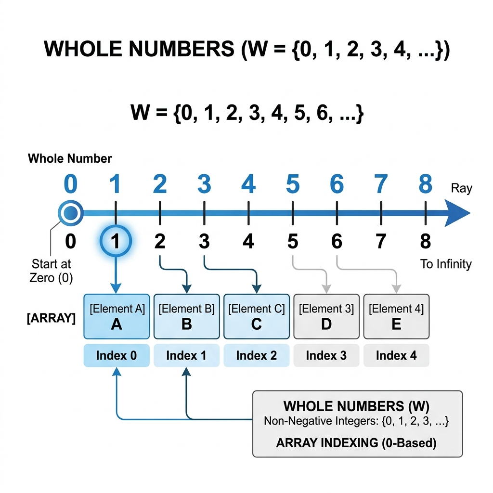
Fig. 3 Whole numbers starting at zero and their application in 0-based array indexing.#
3. Integers (\(\mathbb{Z}\))#
Integers extend whole numbers to include negative values. In mathematics, the set of integers is denoted by the boldface letter \(\mathbb{Z}\) (from the German word Zahlen, meaning “numbers”).
Set Notation: \(\mathbb{Z} = \{\dots, -5, -4, -3, -2, -1, 0, 1, 2, 3, 4, 5, \dots\}\)

Fig. 4 Number line showing negative integers, zero, and positive integers.#
4. Rational Numbers (\(\mathbb{Q}\))#
A rational number is any number that can be expressed as the quotient or fraction \(\frac{p}{q}\) of two integers, where \(p\) is the numerator and \(q \neq 0\) is the non-zero denominator.
The set of all rational numbers is denoted by the boldface letter \(\mathbf{Q}\) or blackboard bold \(\mathbb{Q}\) (for “quotient”).
Examples: \(\frac{1}{2}\), \(\frac{-3}{7}\), and every integer since any integer \(k\) can be written as \(\frac{k}{1}\) (e.g., \(5 = \frac{5}{1}\)).
Decimal Expansion: Rational numbers have decimal expansions that either terminate (e.g., \(\frac{3}{4} = 0.75\)) or repeat infinitely (e.g., \(\frac{1}{3} = 0.3333\dots\)).
5. Irrational Numbers (\(\mathbb{I}\))#
Irrational numbers cannot be expressed as a fraction \(\frac{p}{q}\) of two integers.
Geometrically, when the ratio of lengths of two line segments is an irrational number, the segments are described as incommensurable — meaning they share no common unit of measure, no matter how small, that can divide both lengths into exact integer multiples.
Key Characteristics & Famous Examples#
Irrational numbers possess an infinite number of non-repeating decimal digits:
Circle Ratio (\(\pi\)): \(\pi = 3.14159265\dots\) (the ratio of a circle’s circumference to its diameter).
Euler’s Number (\(e\)): \(e = 2.71828182\dots\) (the base of the natural logarithm).
Golden Ratio (\(\phi\)): \(\phi = \frac{1 + \sqrt{5}}{2} \approx 1.618033\dots\)
Square Roots: \(\sqrt{2} \approx 1.414213\dots\), \(\sqrt{3}\), \(\sqrt{5}\). In fact, all square roots of natural numbers that are not perfect squares are irrational.
Non-repeating Decimals: Patterns like \(2.010010001\dots\)
6. Real Numbers (\(\mathbb{R}\))#
The set of Real Numbers (\(\mathbb{R}\)) is the union of all rational and irrational numbers.
In practical Data Science and Machine Learning, almost all continuous feature values (such as prices, weights, temperatures, or probability scores) are represented as real numbers using floating-point data types (float32 or float64).
7. Complex and Imaginary Numbers (\(\mathbb{C}\))#
Imaginary Numbers#
Numbers that are not real are called imaginary numbers. Squaring an imaginary number yields a negative result.
Examples: \(\sqrt{-2}\), \(\sqrt{-7}\), \(\sqrt{-11}\).
Imaginary numbers arose historically to solve polynomial equations like \(x^2 + 1 = 0\), whose solutions \(x = \pm\sqrt{-1}\) cannot exist within the real number line \(\mathbb{R}\). We denote \(\sqrt{-1}\) with the symbol \(i\) (called iota), so \(i^2 = -1\).
Complex Numbers#
A Complex Number is a combination of a real number and an imaginary number written in the standard form:
\(a\) is the Real Part (\(\text{Re}(z)\)).
\(b\) is the Imaginary Part (\(\text{Im}(z)\)).

Fig. 5 Complex plane representation of a complex number.#
8. Order of Operations (PEMDAS)#
When evaluating mathematical expressions, we must follow the strict order of operations (PEMDAS) to ensure consistent results:
Parentheses
()Exponents (Powers and Roots)
Multiplication and Division (left to right)
Addition and Subtraction (left to right)
Python Verification#
Python automatically enforces PEMDAS rules:
# Expression: 3 + 5 * 2^3 - (4 / 2)
# 1. Parentheses: (4 / 2) -> 2.0
# 2. Exponents: 2^3 -> 8
# 3. Multiplication: 5 * 8 -> 40
# 4. Addition & Subtraction: 3 + 40 - 2.0 -> 41.0
result = 3 + 5 * 2**3 - (4 / 2)
print("Result of expression:", result) # Output: 41.0
Exercises#
Exercise 1
Evaluate the expression using PEMDAS rules:
Verify your answer with Python.
Solution — Exercise 1
According to PEMDAS:
Parentheses: \((2 + 1) = 3\)
Exponents: \(3^2 = 9\)
Multiplication/Division (left to right): \(3 \times 9 \div 9 = 3\)
Addition/Subtraction (left to right): \(12 - 3 + 4 = 13\)
ans = 12 - 3 * (2 + 1)**2 / 9 + 4
print("Answer:", ans) # Output: 13.0
Fractions#
Fractions represent a part of a whole. In data science, fractions are the foundation of probabilities, proportions, and ratios (such as precision and recall).
1. What Is a Fraction?#
A fraction is written as:
Where:
\(a\) is the numerator (how many parts we have).
\(b\) is the denominator (how many equal parts the whole is divided into).
2. Basic Operations#
Addition & Subtraction#
To add or subtract fractions, they must have a common denominator:
Multiplication#
Multiply numerators together and denominators together:
Division#
To divide by a fraction, multiply by its reciprocal:
3. Python Fraction Module#
Python has a built-in module fractions to handle exact fraction arithmetic:
from fractions import Fraction
# Create fractions
f1 = Fraction(1, 3)
f2 = Fraction(1, 2)
# Arithmetic operations
print("1/3 + 1/2 =", f1 + f2)
print("2/3 * 3/4 =", Fraction(2, 3) * Fraction(3, 4))
Exercises#
Exercise 1
Calculate:
Solution — Exercise 1
Perform division first:
\[\frac{3}{4} \times \frac{3}{2} = \frac{9}{8}\]Perform subtraction:
\[\frac{9}{8} - \frac{1}{2} = \frac{9}{8} - \frac{4}{8} = \frac{5}{8}\]
Decimals & Percentages#
Decimals and percentages are alternative ways of expressing fractions and proportions. In Data Science, we constantly work with probability values as decimals (e.g., \(0.85\)) and interpret evaluation metrics as percentages (e.g., \(85\%\)).
1. Decimals#
A decimal is a fraction whose denominator is a power of ten (10, 100, 1000, etc.), written using a decimal point.
For example:
Repeating Decimals#
Some fractions produce infinitely repeating decimals:
2. Percentages#
The word percent means “per hundred”. To convert a decimal to a percentage, multiply by 100 and add the \(\%\) sign.
Percentage Change#
In data analysis, we often compute the percentage change between two values (e.g. increase in website traffic):
3. Python Implementations#
# Calculating percentage change
old_revenue = 150
new_revenue = 180
pct_change = ((new_revenue - old_revenue) / old_revenue) * 100
print(f"Revenue growth: {pct_change:.1f}%")
Exercises#
Exercise 1
A model correctly classified 45 out of 60 test images. What is the classification accuracy in percentage?
Solution — Exercise 1
Compute the proportion:
Convert to percentage:
Order of Operations#
In mathematics and computer science, we evaluate expressions based on a strict order of operations to avoid ambiguity. The standard convention is PEMDAS (or BODMAS in some regions).
1. The PEMDAS Rule#
When solving mathematical expressions, perform calculations in the following order:
Parentheses
()Exponents (Powers, Roots)
Multiplication and Division (evaluated from left to right)
Addition and Subtraction (evaluated from left to right)
2. Python Implementation#
Python automatically follows PEMDAS rules when calculating expressions:
# Expression: 3 + 5 * 2^3 - (4 / 2)
# Step-by-step:
# 1. Parentheses: (4 / 2) -> 2.0
# 2. Exponents: 2**3 -> 8
# 3. Multiplication: 5 * 8 -> 40
# 4. Add/Subtract: 3 + 40 - 2.0 -> 41.0
result = 3 + 5 * 2**3 - (4 / 2)
print("Computed result:", result)
Exercises#
Exercise 1
Evaluate the expression manually:
Verify your answer with Python.
Solution — Exercise 1
Using PEMDAS:
Parentheses: \((3 + 1) = 4\)
Exponents: \(4^2 = 16\)
Multiplication/Division (left to right):
\(2 \times 16 = 32\)
\(32 \div 8 = 4\)
Addition/Subtraction (left to right):
\(10 - 4 = 6\)
\(6 + 5 = 11\)
Variables#
In mathematics and programming, a variable is a named placeholder or symbol (such as \(x\), \(y\), or \(w\)) used to represent a value that can change or is currently unknown. In Machine Learning, variables represent our data features and model parameters.
1. Linear Equations#
A linear equation is an equation of a straight line, typically written as:
To solve for \(x\):
Multi-variable Linear Equations#
In Machine Learning, we often map relationships as linear combinations:
This represents a plane in 3D space, which is the foundation of Multiple Linear Regression.
2. Quadratic Equations#
A quadratic equation is in the form:
The solutions (roots) can be found using the quadratic formula:
3. Symbolic Algebra in Python with SymPy#
We can solve algebraic equations exactly using SymPy:
import sympy as sp
x = sp.symbols('x')
# Solve: 2x - 6 = 0
eq1 = sp.Eq(2*x - 6, 0)
sol1 = sp.solve(eq1, x)
print("Solution for 2x - 6 = 0:", sol1)
# Solve quadratic: x^2 - 5x + 6 = 0
eq2 = sp.Eq(x**2 - 5*x + 6, 0)
sol2 = sp.solve(eq2, x)
print("Solutions for x^2 - 5x + 6 = 0:", sol2)
Exercises#
Exercise 1
Solve the quadratic equation:
Solution — Exercise 1
Using coefficients \(a=1, b=-4, c=-5\):
Functions#
A function is a mathematical rule that takes an input (usually denoted as \(x\)) and maps it to a unique output (usually denoted as \(y\) or \(f(x)\)). In Data Science, we use functions to represent relationships between features (inputs) and targets (outputs).
1. What Is a Function?#
Formally, a function \(f\) maps elements from a domain \(X\) to a codomain \(Y\):
For every input \(x \in X\), there is exactly one output \(y \in Y\) such that \(y = f(x)\).
2. Linear Functions#
A linear function is a function that creates a straight line when graphed. Its general algebraic form is:
Where:
\(m\) is the slope (rate of change, or gradient). It determines the steepness of the line:
\[m = \frac{y_2 - y_1}{x_2 - x_1}\]\(c\) is the y-intercept (where the line crosses the y-axis, i.e., \(f(0)\)).
In Machine Learning, this equation forms the basis of Simple Linear Regression, where \(m\) is the weight (\(w\)) and \(c\) is the bias (\(b\)):
3. Plotting Linear Functions in Python#
We can use matplotlib to plot linear functions and visualize their slopes and intercepts:
import numpy as np
import matplotlib.pyplot as plt
# Generate x values
x = np.linspace(-10, 10, 100)
# Define two linear functions
y1 = 2 * x + 3 # slope = 2, intercept = 3
y2 = -0.5 * x - 1 # slope = -0.5, intercept = -1
# Plot
plt.figure(figsize=(8, 5))
plt.plot(x, y1, label="y = 2x + 3", color="blue")
plt.plot(x, y2, label="y = -0.5x - 1", color="red")
plt.axhline(0, color='black',linewidth=0.5)
plt.axvline(0, color='black',linewidth=0.5)
plt.grid(color='gray', linestyle='--', linewidth=0.5)
plt.legend()
plt.title("Linear Functions")
plt.savefig('../../images/linear_functions.png', dpi=150)
plt.show()
Exercises#
Exercise 1
A line passes through the points \((1, 3)\) and \((3, 7)\).
Find the slope of the line.
Determine the equation of the line.
Solution — Exercise 1
Slope (\(m\)):
\[m = \frac{7 - 3}{3 - 1} = \frac{4}{2} = 2\]Using the point-slope form \(y - y_1 = m(x - x_1)\) with point \((1, 3)\):
\[y - 3 = 2(x - 1) \implies y = 2x + 1\]
Curvilinear Functions#
A curvilinear function is a non-linear function whose graph forms a curve rather than a straight line. In Data Science, curvilinear functions model complex patterns, growth rates, activation thresholds (like Sigmoid), and loss curves.
1. Types of Curvilinear Functions#
Quadratic Functions (Parabolas)#
A quadratic function is a second-degree polynomial in the form:
Its graph is a parabola. If \(a > 0\), the parabola opens upwards (having a minimum). If \(a < 0\), it opens downwards (having a maximum). This shape is central to squared loss functions (\(MSE = \frac{1}{n} \sum (y_i - \hat{y}_i)^2\)).
Exponential Functions#
Exponential functions represent rapid growth or decay, in the form:
Where \(e \approx 2.71828\). This is used to model population growth, compounding interest, or decay rates in learning algorithms.
Logarithmic Functions#
The logarithmic function is the inverse of the exponential function:
It grows very rapidly at first but levels off. In machine learning, log functions are used in log-transforms to scale heavily skewed features.
2. Limits and Curvature#
Because the slope of a curvilinear function is constantly changing at every point, we cannot define a single slope.
Secant Line: The average rate of change between two points \((x_1, y_1)\) and \((x_2, y_2)\).
Tangent Line: The instantaneous rate of change at a single point, which we find using limits and calculus.
3. Plotting Curvilinear Functions in Python#
Let’s visualize a quadratic curve and the standard Logistic Sigmoid function (\(S(x) = \frac{1}{1 + e^{-x}}\)) commonly used in Logistic Regression:
import numpy as np
import matplotlib.pyplot as plt
x = np.linspace(-6, 6, 200)
# Quadratic function
y_quad = x**2
# Sigmoid function
y_sigmoid = 1 / (1 + np.exp(-x))
# Plotting
fig, (ax1, ax2) = plt.subplots(1, 2, figsize=(12, 5))
# Parabola
ax1.plot(x, y_quad, color='blue', label=r'$y = x^2$')
ax1.set_title("Quadratic Function")
ax1.grid(True)
ax1.legend()
# Sigmoid
ax2.plot(x, y_sigmoid, color='green', label=r'$S(x) = \frac{1}{1 + e^{-x}}$')
ax2.set_title("Sigmoid Activation Function")
ax2.grid(True)
ax2.legend()
plt.savefig('../../images/curvilinear_functions.png', dpi=150)
plt.show()
Exercises#
Exercise 1
Find the vertex (minimum point) of the quadratic function:
Hint: The x-coordinate of the vertex of \(ax^2 + bx + c\) is given by \(x = -b / 2a\).
Solution — Exercise 1
Using the formula \(x = -b / 2a\):
Compute \(f(3)\):
The vertex (minimum) is at \((3, 0)\).
Summations#
A summation is the operation of adding a sequence of numbers. In mathematics and data science, we represent this using the Greek capital letter Sigma (\(\sum\)).
1. What Is a Summation?#
A summation is written in the following format:
Where:
\(i\) is the index of summation (start variable).
\(1\) is the lower limit (starting point).
\(n\) is the upper limit (ending point).
\(x_i\) represents the term to be added at index \(i\).
This expands to:
Example:#
2. Summations in Data Science#
We use summations to define key algorithms and performance metrics.
Mean:#
Mean Squared Error (MSE Loss):#
3. Python Implementation#
You can compute summations in Python using loops or NumPy’s sum() function:
import numpy as np
# Data points
x = [2, 4, 6, 8]
# 1. Summation using built-in sum()
total = sum(x)
print("Sum of elements:", total)
# 2. Summation using NumPy
np_total = np.sum(x)
print("NumPy sum:", np_total)
Exercises#
Exercise 1
Evaluate the summation:
Solution — Exercise 1
Expand the expression for \(i = 2, 3, 4, 5\):
For \(i=2\): \(2(2) - 1 = 3\)
For \(i=3\): \(2(3) - 1 = 5\)
For \(i=4\): \(2(4) - 1 = 7\)
For \(i=5\): \(2(5) - 1 = 9\)
Sum the values:
Exponents#
An exponent (or power) represents repeated multiplication of a number by itself. In Data Science, exponential functions model growth rates, decay rates, and activation functions.
1. What Is an Exponent?#
An exponent is written as:
Where:
\(x\) is the base.
\(n\) is the exponent (or power).
This represents \(x\) multiplied by itself \(n\) times:
Rules of Exponents#
Exponents follow specific algebraic properties:
Product Rule: \(x^a \cdot x^b = x^{a+b}\)
Quotient Rule: \(\frac{x^a}{x^b} = x^{a-b}\)
Power of a Power Rule: \((x^a)^b = x^{a \cdot b}\)
Negative Exponent Rule: \(x^{-n} = \frac{1}{x^n}\)
Fractional Exponents (Roots): \(x^{\frac{1}{n}} = \sqrt[n]{x}\)
2. Euler’s Number (\(e\))#
Of special importance in calculus and data science is Euler’s number \(e \approx 2.71828\). It is an irrational number that represents the base of natural growth:
3. Python Implementation#
import math
# Exponential calculations: 3^4
print("3^4 =", 3**4)
# Euler's number calculation: e^2
print("e^2 =", math.exp(2))
Exercises#
Exercise 1
Simplify the expression:
Solution — Exercise 1
Apply the rules of exponents:
Product Rule: \(x^5 \cdot x^2 = x^{5+2} = x^7\)
Quotient Rule: \(\frac{x^7}{x^3} = x^{7-3} = x^4\)
Logarithms#
A logarithm is the mathematical operation that is the inverse of exponentiation. Logarithms are widely used in Data Science to scale skewed data (log-transform) and calculate errors in classification loss functions.
1. What Is a Logarithm?#
The logarithm answers the question: To what power must we raise the base to get a certain number?
If:
Then:
For example:
Intuition: The “Zero-Counting” Operation#
To understand logarithms intuitively, think of the base-10 logarithm (\(\log_{10}\)) as a tool that counts the number of zeros in a number (when written as a power of 10):
\(10\) has 1 zero \(\implies \log_{10}(10) = 1\)
\(100\) has 2 zeros \(\implies \log_{10}(100) = 2\)
\(1,000\) has 3 zeros \(\implies \log_{10}(1,000) = 3\)
\(1,000,000\) (1 million) has 6 zeros \(\implies \log_{10}(1,000,000) = 6\)
Thus, the logarithm tells us the “scale” or “order of magnitude” of a number. If a number falls between \(100\) and \(1,000\) (e.g., \(500\)), its logarithm will be a decimal between \(2\) and \(3\) (\(\log_{10}(500) \approx 2.699\)).
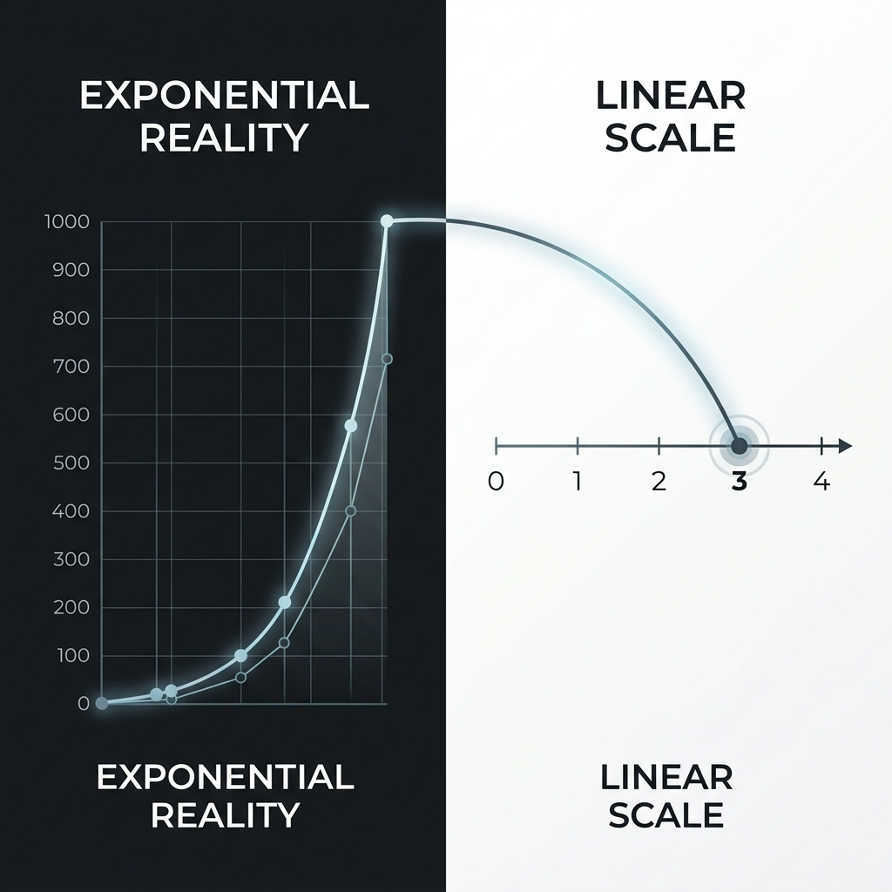
Fig. 6 Visualizing how the logarithm maps an “exponential reality” onto a manageable “linear scale”.#
Why Do We Use Logarithms? Real-World Applications#
In nature, human senses and physical phenomena span vast scales of magnitude. Linearly graphing numbers from \(1\) to \(10,000,000,000\) on a single piece of paper is impossible. Logarithms compress these huge numbers into human-manageable scales.
Here is how logarithms are used across various scientific domains and real-world phenomena:
1. Earthquakes (The Richter Scale)#
The Richter scale quantifies the energy released by earthquakes on a base-10 logarithmic scale:
Where \(A\) is the maximum amplitude recorded by a seismograph.
Seismic Wave Amplitude: Because of the \(\log_{10}\) scale, each whole unit increase of \(+1.0\) on the Richter scale means the ground shaking amplitude is 10 times greater.
A magnitude 6.0 earthquake has 10 times the amplitude of a 5.0 earthquake.
A magnitude 7.0 earthquake has \(10 \times 10 = \mathbf{100\text{ times}}\) the amplitude of a 5.0 earthquake.
Radiated Energy (\(E\)): The actual energy released scales exponentially as \(10^{1.5 \times M}\) (or \(\approx 31.6^M\)):
\[\frac{E_2}{E_1} = 10^{1.5 \times (M_2 - M_1)}\]An increase of \(+1.0\) in magnitude releases \(10^{1.5} \approx \mathbf{31.6\text{ times}}\) more energy.
An increase of \(+2.0\) in magnitude (e.g., from 5.0 to 7.0) releases \(10^{1.5 \times 2} = 10^3 = \mathbf{1,000\text{ times}}\) more energy!
2. Sound Intensity (Decibel Scale - dB)#
Human ears can process sound power ranging from a quiet whisper (\(10^{-12} \text{ W/m}^2\)) to a jet engine takeoff (\(10^2 \text{ W/m}^2\)) — a difference of 100,000,000,000,000 times (\(10^{14}\)).
We use decibels: \(L = 10 \cdot \log_{10}\left(\frac{I}{I_0}\right)\)
Every addition of 10 dB represents a 10-fold increase in sound intensity.
A 60 dB sound (normal conversation) is 1,000 times more intense than a 30 dB sound (whisper).
3. Acidity and Chemistry (pH Scale)#
The pH scale measures hydrogen ion concentration \([H^+]\) in a liquid: \(\text{pH} = -\log_{10}[H^+]\).
A pH drop of 1 unit means the solution is 10 times more acidic.
Battery acid (\(\text{pH} \approx 1\)) is 100,000 times more acidic than coffee (\(\text{pH} \approx 5\)).
4. Atmospheric Pressure, Hurricanes & Altitude#
Atmospheric pressure decreases exponentially with increasing altitude (\(P = P_0 e^{-h/H}\)).
Meteorologists use log-scale calculations to estimate altitude from pressure readings or track pressure drops during hurricanes and tropical storms.
In hurricane tracking, central barometric pressure drops exponentially as wind speeds increase.
5. Stellar Brightness (Astronomy - Magnitude Scale)#
Astronomers rank star brightness using a reverse logarithmic scale where a difference of 5 magnitudes corresponds to a factor of exactly 100 in light intensity (each magnitude step is a factor of \(100^{1/5} \approx 2.512\)).
2. Euler’s Number (\(e\)) and the Natural Logarithm (\(\ln\))#
What is Euler’s Number (\(e\))?#
Euler’s number, denoted as \(e\), is a mathematical constant approximately equal to \(2.71828\). It is the base of natural growth and decay.
The value of \(e\) is defined as the limit of the compound interest formula as the number of compounding periods approaches infinity:
The Natural Logarithm (\(\ln(x)\)) is simply a logarithm with base \(e\):
Because \(e\) and \(\ln\) are inverse functions, they cancel each other out:
Real-World Application: Continuous Compound Interest#
In finance, if an investment of principal \(P\) grows at an annual interest rate \(r\) compounded \(n\) times a year for \(t\) years, the final amount \(A\) is:
If the interest is compounded continuously (meaning \(n \to \infty\), compounding every microsecond), the formula simplifies using Euler’s number \(e\) (often called the PERT formula):
Deriving the “Rule of 72” in Investing#
The Rule of 72 is a quick shortcut used to estimate how many years (\(t\)) it takes to double your money at a given annual interest rate (\(r\) expressed as a percentage, e.g., \(r\%\)).
We can mathematically derive this rule using the natural logarithm:
To double our money (\(A = 2P\)), we substitute this into the continuous compound interest formula:
\[2P = P e^{rt} \implies 2 = e^{rt}\]Take the natural logarithm (\(\ln\)) of both sides to get rid of \(e\):
\[\ln(2) = \ln(e^{rt})\]\[\ln(2) = rt\]Since \(\ln(2) \approx 0.693\), we get:
\[rt \approx 0.693 \implies t \approx \frac{0.693}{r}\]If we express the interest rate \(r\) as a percentage (e.g., \(R = r \times 100\), so \(R = 8\) for \(8\%\)), the formula becomes:
\[t \approx \frac{69.3}{R}\]While \(69.3\) is the exact mathematical numerator for continuous compounding, \(72\) is used in finance because it is highly divisible by many common interest rates (such as 2, 3, 4, 6, 8, 9, 12), making mental math extremely easy. For example, at an \(8\%\) interest rate, money will double in approximately \(72 / 8 = 9\) years (the exact value is about \(8.66\) years).
3. Common Properties of Logarithms#
Logarithms possess unique mathematical properties that simplify complex operations:
Product Rule: \(\log_b(x \cdot y) = \log_b(x) + \log_b(y)\)
Quotient Rule: \(\log_b(\frac{x}{y}) = \log_b(x) - \log_b(y)\)
Power Rule: \(\log_b(x^k) = k \cdot \log_b(x)\)
Two Crucial Bases:#
Natural Logarithm (\(\ln(x)\)): Logarithm with base \(e \approx 2.71828\).
Common Logarithm (\(\log_{10}(x)\)): Logarithm with base 10.
4. Python Implementation#
We can compute logarithms in Python using the math and numpy libraries:
import math
import numpy as np
# Natural logarithm: ln(10)
print("ln(10) =", math.log(10)) # math.log defaults to base e
# Base 10 logarithm
print("log10(100) =", math.log10(100))
# NumPy log-transform on an array
data = np.array([1, 10, 100, 1000])
log_data = np.log10(data)
print("Log-transformed data:", log_data)
Exercises#
Exercise 1
Solve for \(x\):
Exercise 2
Expand the expression using logarithm properties:
Solution — Exercise 1
Convert to exponential form:
Solution — Exercise 2
Apply the quotient and power rules:
Limits#
In mathematics, a limit is the foundational building block of Calculus. It describes what value a function approaches as its input variable gets closer and closer to a specific point, regardless of whether the function is actually defined at that exact point.
1. Why Do We Need Limits in Calculus?#
Limits serve as the mathematical “bridge” that allows us to handle division by zero and infinitesimally small quantities, paving the way for the creation of Calculus.
The \(\frac{0}{0}\) Indeterminate Form#
In classical algebra and geometry, division by zero is strictly prohibited. However, the two foundational problems that led to the development of Calculus directly encounter this issue:
Instantaneous Velocity (Leads to Derivatives): If you travel \(100\text{ km}\) in \(2\text{ hours}\), your average velocity is \(v = \frac{\Delta s}{\Delta t} = \frac{100}{2} = 50\text{ km/h}\). But what if you want to know your exact speed at a single instantaneous second (when \(\Delta t = 0\))? The classical formula yields \(\frac{\Delta s}{\Delta t} = \frac{0}{0}\), which is algebraically undefined.
Tangent Line of a Curve: To find the slope of a line passing through two points, we use \(m = \frac{y_2 - y_1}{x_2 - x_1}\). But a tangent line only touches a curve at a single point. When the second point merges with the first point, the distance becomes \(0\), leading to a slope of \(m = \frac{0}{0}\).
Limits resolve this by allowing us to calculate behavior infinitely close to \(0\) without ever evaluating at \(0\) directly:
Note
Distinguishing \(\frac{a}{0}\) vs. \(\frac{0}{0}\) (The Key to Calculus):
The \(\frac{a}{0}\) Form (where \(a \neq 0\), e.g., \(\frac{1}{x}\)): If we let \(x\) approach \(0\) on the number line:
Approaching from the left (\(-1 \to 0\)): We divide by extremely small negative values (e.g., \(\frac{1}{-0.000001} = -1,000,000\)), so the value shoots to negative infinity (\(-\infty\)).
Approaching from the right (\(1 \to 0\)): We divide by extremely small positive values (e.g., \(\frac{1}{0.000001} = 1,000,000\)), so the value shoots to positive infinity (\(+\infty\)).
Because the two sides head in opposite directions to different infinities (\(\pm \infty\)), the limit does not exist, and we observe a vertical asymptote.
The \(\frac{0}{0}\) Form (Indeterminate Form): Unlike the \(\frac{a}{0}\) case, here the numerator is also shrinking to zero, which “counters” the division-by-zero explosion. The result depends entirely on how fast the numerator and denominator approach zero relative to each other:
If \(f(x) = \frac{x}{x}\), the ratio is always \(1\) for any \(x \neq 0\). The limit is \(1\).
If \(g(x) = \frac{2x}{x}\), the ratio is always \(2\) for any \(x \neq 0\). The limit is \(2\).
If \(h(x) = \frac{x^2}{x}\), the ratio simplifies to \(x\). As \(x \to 0\), the limit is \(0\).
Since \(\frac{0}{0}\) can resolve to \(1, 2, 0\), or any other real number, it is called indeterminate (undetermined) and is the only form capable of representing rates of change and derivatives.

Fig. 7 Comparison between a/0 (Limit does not exist) and 0/0 (Limit exists) forms.#
The Foundation of Derivatives and Integrals#
Both core operations of Calculus are defined entirely through limits:
Derivatives: The limit of the rate of change as the interval \(h\) approaches \(0\):
\[f'(x) = \lim_{h \to 0} \frac{f(x+h) - f(x)}{h}\]Integrals: The limit of Riemann sums as we divide the area under a curve into an infinite number of infinitely thin rectangles (\(n \to \infty\)):
\[\int_{a}^{b} f(x) dx = \lim_{n \to \infty} \sum_{i=1}^{n} f(x_i^*) \Delta x\]
The Tangent Line Problem: A Conceptual Preview#
The most famous geometric illustration of why we need limits is the Tangent Line Problem:
Secant Line: In algebra, we can easily find the slope between two separate points on a curve. This is called a secant line.
The Tangent Obstacle: If we want to find the slope at exactly one single point (the tangent line), the points merge, the distance becomes zero, and our slope formula results in an undefined division by zero (\(\frac{0}{0}\)).
The Limit Solution: By taking the limit as the distance between the two points approaches zero (\(\Delta x \to 0\)), the secant line gradually rotates and aligns perfectly with the tangent line. This slope is what we call the derivative.
(We will explore the complete mathematical definition of the derivative and its applications in the next chapter: Calculus & Derivatives).
2. The Intuition of a Limit#
Consider the function:
If we try to evaluate this function at \(x = 1\), we get a division by zero:
However, we can look at the values of \(f(x)\) as we choose inputs extremely close to \(1\):
\(x\) (approaching from left) |
\(f(x)\) |
\(x\) (approaching from right) |
\(f(x)\) |
|---|---|---|---|
\(0.9\) |
\(1.9\) |
\(1.1\) |
\(2.1\) |
\(0.99\) |
\(1.99\) |
\(1.01\) |
\(2.01\) |
\(0.9999\) |
\(1.9999\) |
\(1.0001\) |
\(2.0001\) |
Even though \(f(1)\) is undefined, the output values of \(f(x)\) are heading directly toward \(2\) as \(x\) gets closer to \(1\). Mathematically, we express this as:
Using algebra, we can simplify the expression:
Note
L’Hôpital’s Rule Preview: When encountering indeterminate forms like \(\frac{0}{0}\) or \(\frac{\pm \infty}{\pm \infty}\), instead of algebraic simplification, we can use L’Hôpital’s Rule (which utilizes derivatives):
3. Formal Definition of a Limit (\(\epsilon\)-\(\delta\))#
To make limits mathematically rigorous, the Karl Weierstrass formal \(\epsilon\)-\(\delta\) (epsilon-delta) definition of a limit is used:
For every real number \(\epsilon > 0\), there exists a real number \(\delta > 0\) such that:

Fig. 8 Geometrical illustration of the epsilon-delta limit definition.#
Understanding the Epsilon-Delta Definition#
\(\epsilon\) (Epsilon) represents the target window of error on the vertical \(y\)-axis (output space).
\(\delta\) (Delta) represents the search window on the horizontal \(x\)-axis (input space).
The definition states: If you want the output \(f(x)\) to be within an extremely small distance \(\epsilon\) from \(L\), there must exist a matching boundary size \(\delta\) such that any input \(x\) within that distance of \(a\) (excluding \(a\) itself) lands inside the target output window.
4. One-Sided Limits and Existence#
A limit only exists if the function approaches the same value from both directions.
Left-Hand Limit: The value \(f(x)\) approaches as \(x\) approaches \(a\) from values less than \(a\):
\[\lim_{x \to a^-} f(x)\]Right-Hand Limit: The value \(f(x)\) approaches as \(x\) approaches \(a\) from values greater than \(a\):
\[\lim_{x \to a^+} f(x)\]
Existence Criterion#
The limit \(\lim_{x \to a} f(x)\) exists if and only if both one-sided limits exist and are equal:
If the left-hand and right-hand limits are not equal (such as at a step discontinuity), the limit does not exist (DNE).
5. Basic Properties of Limits#
Given that \(\lim_{x \to a} f(x) = L\) and \(\lim_{x \to a} g(x) = M\), the following algebraic properties hold:
Sum Rule: \(\lim_{x \to a} [f(x) + g(x)] = L + M\)
Product Rule: \(\lim_{x \to a} [f(x) \cdot g(x)] = L \cdot M\)
Quotient Rule: \(\lim_{x \to a} \frac{f(x)}{g(x)} = \frac{L}{M}\) (provided \(M \neq 0\))
Constant Multiple Rule: \(\lim_{x \to a} [c \cdot f(x)] = c \cdot L\) (where \(c\) is a constant)
Power Rule: \(\lim_{x \to a} [f(x)]^n = L ^ n\)
6. Continuity#
In data science, we prioritize continuous functions. Intuitively, a function is continuous if you can draw its graph without lifting your pen from the paper.
Formally, a function \(f(x)\) is continuous at a point \(x = a\) if and only if three conditions are met:
\(f(a)\) is defined (the point exists in the domain).
\(\lim_{x \to a} f(x)\) exists.
The limit equals the function’s value:
\[\lim_{x \to a} f(x) = f(a)\]
If any of these conditions fail, the function has a discontinuity at \(x = a\).
Machine Learning Connection: Continuity (along with smoothness and differentiability) is a critical requirement for gradient-based optimization algorithms (like Gradient Descent in Neural Networks). If a Loss Function is discontinuous, gradients cannot be computed, preventing the model from updating its weights properly.
7. Symbolic Limit Calculations in Python#
We can calculate symbolic limits in Python using the sympy library:
import sympy as sp
x = sp.symbols('x')
# 1. Undefined algebraic expression limit
f1 = (x**2 - 1) / (x - 1)
limit1 = sp.limit(f1, x, 1)
print("Limit of (x^2 - 1)/(x - 1) as x->1 :", limit1) # 2
# 2. Limit at infinity
f2 = 1 / x
limit2 = sp.limit(f2, x, sp.oo)
print("Limit of 1/x as x->oo :", limit2) # 0
Calculus & Derivatives#
Calculus is the mathematical framework that allows us to understand change. In Machine Learning, calculus provides the engine (such as derivatives and the chain rule) that lets models evaluate and update their parameters.
Here we cover the essential calculus tools used to analyze functions of single and multiple variables.
1. What Is a Derivative?#
The derivative of a function measures how the output value changes relative to a change in its input. Geometrically, the derivative is the slope of the tangent line to the graph of the function at a given point.
The Tangent Line Problem: Transition from Secant to Tangent#
To understand how derivatives work, we look at the transition from average rate of change to instantaneous rate of change:
Slope of a Secant Line (Average Rate of Change): Suppose we want to find the slope of a curve between two distinct points \(P(x, f(x))\) and \(Q(x + \Delta x, f(x + \Delta x))\). Connecting these two points gives a secant line. The slope of this secant line represents the average rate of change:
\[m_{\text{secant}} = \frac{\Delta y}{\Delta x} = \frac{f(x + \Delta x) - f(x)}{\Delta x}\]The Tangent Obstacle (Instantaneous Speed): If we want to know the slope at exactly one single point \(P\) (the tangent line), we cannot simply set the second point \(Q\) directly on top of \(P\). Doing so makes the distance \(\Delta x = 0\), causing the slope formula to collapse into the undefined division:
\[m = \frac{0}{0}\]The Limit Solution: Instead of forcing \(Q\) to merge with \(P\) immediately, we use a limit to slide \(Q\) along the curve infinitely close to \(P\). As the distance \(\Delta x\) approaches \(0\) (\(\Delta x \to 0\)), the secant line rotates and converges into the tangent line at point \(P\).
The slope of this tangent line is the derivative of the function at \(x\), defined as:
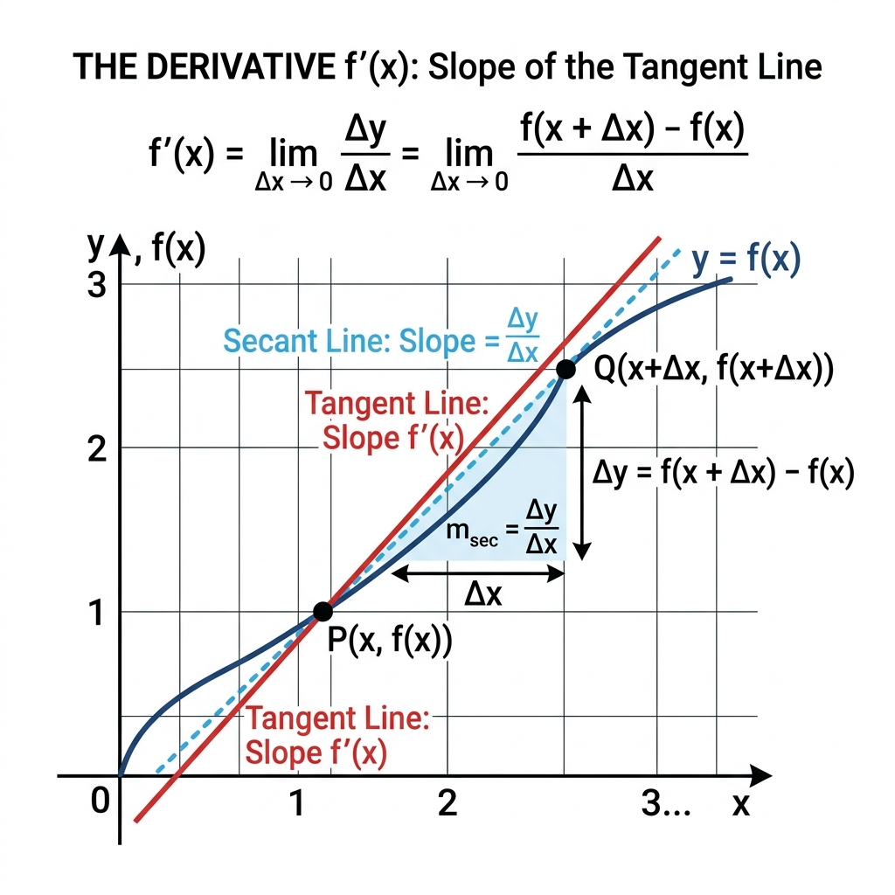
Fig. 9 Geometrical transition of a secant line into a tangent line as \(\Delta x \to 0\).#
2. Basic Rules of Differentiation#
Calculating derivatives using limits can be tedious. Instead, we use standard differentiation rules:
Power Rule: \(\frac{d}{dx}(x^n) = n x^{n-1}\)
Constant Rule: \(\frac{d}{dx}(c) = 0\)
Sum Rule: \(\frac{d}{dx}(f + g) = f' + g'\)
Product Rule: \(\frac{d}{dx}(f \cdot g) = f'g + fg'\)
Quotient Rule: \(\frac{d}{dx}(\frac{f}{g}) = \frac{f'g - fg'}{g^2}\)
3. The Chain Rule#
The Chain Rule is a formula for calculating the derivative of the composition of two or more functions: \(f(g(x))\).
If \(y = f(u)\) and \(u = g(x)\), then:
Why it matters in Deep Learning#
In neural networks, the loss (error) is a nested composition of functions across layers. The Chain Rule is the mathematical backbone of Backpropagation, allowing the network to calculate how changes in early weights affect the final output error.
4. Partial Derivatives & Gradients#
When a function has multiple variables, e.g., \(f(x, y)\), we use partial derivatives. A partial derivative measures the rate of change with respect to one variable while keeping all other variables constant.
Partial derivative with respect to \(x\): \(\frac{\partial f}{\partial x}\)
Partial derivative with respect to \(y\): \(\frac{\partial f}{\partial y}\)
The Gradient Vector#
The gradient is a vector containing all the partial derivatives of a multivariable function. It is denoted by the symbol \(\nabla\) (nabla):
Geometrical Meaning: The gradient vector points in the direction of the steepest ascent (greatest increase) of the function at that point.
Machine Learning Note: Since our goal in Machine Learning is usually to minimize the Loss Function (find the lowest point of error), we move in the opposite direction of the gradient (\(-\nabla f\)). This core optimization technique is called Gradient Descent:
\[\mathbf{w}_{\text{new}} = \mathbf{w}_{\text{old}} - \alpha \nabla f(\mathbf{w})\](where \(\alpha\) is the learning rate that controls the size of each step).
5. Python Implementation (SymPy)#
We can compute exact symbolic derivatives and gradients easily in Python:
import sympy as sp
x, y = sp.symbols('x y')
f = x**2 * y + 3*x * sp.sin(y)
# 1. Single derivative
df_dx = sp.diff(f, x)
print("Partial derivative w.r.t x :", df_dx)
# 2. Derivative w.r.t y
df_dy = sp.diff(f, y)
print("Partial derivative w.r.t y :", df_dy)
Exercises#
Exercise 1
Find the derivative of \(f(x) = 5x^3 - 2x^2 + 7\).
Exercise 2
Apply the Chain Rule to find the derivative of:
Exercise 3
Find the gradient vector \(\nabla f(x, y)\) of:
Solution — Exercise 1
Using the Power and Sum rules:
Solution — Exercise 2
Let \(u = 3x^2 + 1\) (inside function) and \(y = u^4\) (outside function).
\(\frac{dy}{du} = 4u^3\)
\(\frac{du}{dx} = 6x\)
Applying the Chain Rule:
Solution — Exercise 3
Compute partial derivatives:
\(\frac{\partial f}{\partial x} = 6xy^3\)
\(\frac{\partial f}{\partial y} = 9x^2y^2 + 2\)
The gradient vector is:
Integration#
Integration is one of the two fundamental operations of calculus (alongside differentiation). While a derivative tells us the rate of change of a function, an integral tells us the accumulated area under a curve.
In data science, integration is essential for:
Computing probabilities from probability density functions (PDFs)
Understanding the Normal Distribution’s CDF
Calculating expected values in statistics
What Is an Integral?#
Imagine you are driving a car. Your speedometer shows your speed at any given moment (the derivative). If you want to know how far you’ve traveled, you need to accumulate that speed over time — that’s integration.
Formally, the definite integral of a function \(f(x)\) from \(a\) to \(b\) is written as:
This represents the area between the curve \(f(x)\) and the x-axis, from \(x = a\) to \(x = b\).
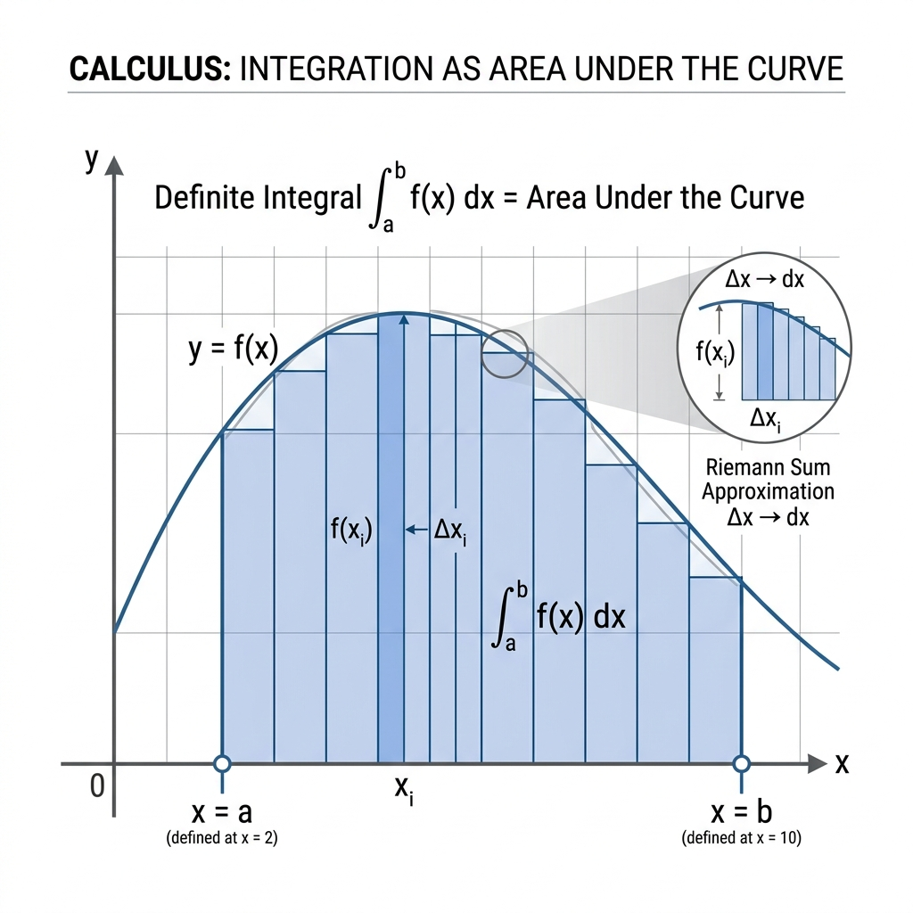
Fig. 10 Definite integration as area under a curve.#
Note
If \(f(x)\) is negative in some region, the area there is counted as negative. The integral gives the net signed area.
Riemann Sums — Approximating the Area#
Before numerical integration libraries existed, mathematicians approximated the area under a curve by slicing the region into \(n\) thin vertical rectangles and summing their areas. This fundamental concept is known as a Riemann Sum.
Core Intuition#
Suppose we want to find the area under a function \(f(x)\) over the interval \([a, b]\).
We divide the interval \([a, b]\) into \(n\) equal sub-intervals, each with width:
For each sub-interval \(i\), we select a sample point \(x_i^*\) and construct a rectangle of height \(f(x_i^*)\) and width \(\Delta x\).
The total approximated area is the sum of these rectangle areas:
As the number of slices approaches infinity (\(n \to \infty\)), the width \(\Delta x \to 0\), and the Riemann Sum converges to the exact Definite Integral:
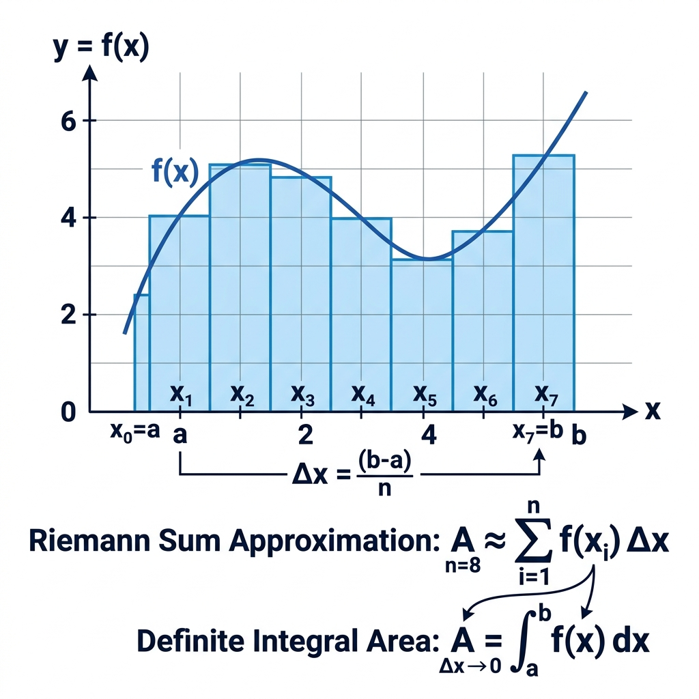
Fig. 11 Riemann sum approximation converging to definite integral area.#
Three Types of Riemann Sums#
Depending on where we choose the sample point \(x_i^*\) within each sub-interval, we get three common types of Riemann Sums:
Type |
Sample Point Selection (\(x_i^*\)) |
Behavior for Increasing Functions |
|---|---|---|
Left Riemann Sum |
Left endpoint of each slice |
Under-estimates area |
Right Riemann Sum |
Right endpoint of each slice |
Over-estimates area |
Midpoint Riemann Sum |
Midpoint of each slice |
Most balanced & accurate approximation |
Python Implementation#
import numpy as np
import matplotlib.pyplot as plt
# Define the function f(x) = x^2
def f(x):
return x ** 2
# Parameters
a = 0 # lower bound
b = 1 # upper bound
n = 10 # number of rectangles
# Width of each rectangle
dx = (b - a) / n
# Generate x positions for each rectangle
x_left = np.linspace(a, b - dx, n) # left edges
x_right = np.linspace(a + dx, b, n) # right edges
x_mid = x_left + dx / 2 # midpoints
# Compute Riemann Sums
left_sum = np.sum(f(x_left) * dx)
right_sum = np.sum(f(x_right) * dx)
mid_sum = np.sum(f(x_mid) * dx)
print(f"Left Riemann Sum (n={n}): {left_sum:.6f}")
print(f"Right Riemann Sum (n={n}): {right_sum:.6f}")
print(f"Midpoint Sum (n={n}): {mid_sum:.6f}")
print(f"Exact answer : {1/3:.6f}") # ∫x² dx from 0 to 1 = 1/3
Output:
Left Riemann Sum (n=10): 0.285000
Right Riemann Sum (n=10): 0.385000
Midpoint Sum (n=10): 0.332500
Exact answer : 0.333333
Visualizing the Rectangles#
import numpy as np
import matplotlib.pyplot as plt
def f(x):
return x ** 2
a, b, n = 0, 1, 10
dx = (b - a) / n
x_left = np.linspace(a, b - dx, n)
# Smooth curve
x_curve = np.linspace(a, b, 300)
fig, ax = plt.subplots(figsize=(8, 5))
# Draw rectangles (Left Riemann Sum)
ax.bar(x_left, f(x_left), width=dx, align='edge',
alpha=0.4, color='steelblue', edgecolor='black', label='Rectangles (Left Sum)')
# Draw the actual curve
ax.plot(x_curve, f(x_curve), 'r-', linewidth=2.5, label=r'$f(x) = x^2$')
ax.set_xlabel('x', fontsize=12)
ax.set_ylabel('f(x)', fontsize=12)
ax.set_title(f'Left Riemann Sum with n={n} rectangles', fontsize=14)
ax.legend()
plt.tight_layout()
plt.savefig('../../images/riemann_sum.png', dpi=150)
plt.show()
Increasing Accuracy with More Rectangles#
import numpy as np
def f(x):
return x ** 2
a, b = 0, 1
exact = 1 / 3 # true value of ∫x² dx from 0 to 1
print(f"{'n':>8} | {'Left Sum':>12} | {'Right Sum':>12} | {'Midpoint':>12} | {'Error (mid)':>12}")
print("-" * 65)
for n in [5, 10, 50, 100, 1000, 10000]:
dx = (b - a) / n
x_left = np.linspace(a, b - dx, n)
x_right = np.linspace(a + dx, b, n)
x_mid = x_left + dx / 2
left = np.sum(f(x_left) * dx)
right = np.sum(f(x_right) * dx)
mid = np.sum(f(x_mid) * dx)
error = abs(mid - exact)
print(f"{n:>8} | {left:>12.8f} | {right:>12.8f} | {mid:>12.8f} | {error:>12.2e}")
Output:
n | Left Sum | Right Sum | Midpoint | Error (mid)
-----------------------------------------------------------------
5 | 0.24000000 | 0.44000000 | 0.33500000 | 1.67e-03
10 | 0.28500000 | 0.38500000 | 0.33250000 | 8.33e-04
50 | 0.32340000 | 0.34340000 | 0.33330000 | 3.33e-05
100 | 0.32835000 | 0.33835000 | 0.33332500 | 8.33e-06
1000 | 0.33283350 | 0.33383350 | 0.33333333 | 8.33e-09
10000 | 0.33328334 | 0.33338334 | 0.33333333 | 8.33e-11
The midpoint rule converges the fastest — with \(n = 1000\) it’s already accurate to 8 decimal places.
Computing Integrals with SciPy#
Instead of approximating manually, we can use scipy.integrate.quad for accurate numerical integration.
Basic Usage of quad#
from scipy.integrate import quad
# Define the function
def f(x):
return x ** 2
# Integrate f(x) from 0 to 1
result, error = quad(f, 0, 1)
print(f"Integral result : {result:.10f}")
print(f"Estimated error : {error:.2e}")
print(f"Exact value : {1/3:.10f}")
Output:
Integral result : 0.3333333333
Estimated error : 3.70e-15
Exact value : 0.3333333333
Integrating Complex Functions#
from scipy.integrate import quad
import numpy as np
# Example 1: ∫ sin(x) dx from 0 to π
result, _ = quad(np.sin, 0, np.pi)
print(f"∫ sin(x) dx from 0 to π = {result:.6f}") # Expected: 2.0
# Example 2: ∫ e^(-x²) dx from -∞ to +∞ (Gaussian integral)
result, _ = quad(lambda x: np.exp(-x**2), -np.inf, np.inf)
print(f"∫ e^(-x²) dx from -∞ to +∞ = {result:.6f}") # Expected: √π ≈ 1.7725
print(f"√π = {np.sqrt(np.pi):.6f}")
Output:
∫ sin(x) dx from 0 to π = 2.000000
∫ e^(-x²) dx from -∞ to +∞ = 1.772454
√π = 1.772454
Symbolic Integration with SymPy#
SymPy can compute integrals symbolically (exact answers, not approximations).
Indefinite Integrals (Antiderivatives)#
from sympy import symbols, integrate, sin, exp, oo, sqrt, pi
x = symbols('x')
# Indefinite integral of x²
expr = x**2
antideriv = integrate(expr, x)
print(f"∫ x² dx = {antideriv} + C")
# Indefinite integral of sin(x)
print(f"∫ sin(x) dx = {integrate(sin(x), x)} + C")
Output:
∫ x² dx = x**3/3 + C
∫ sin(x) dx = -cos(x) + C
Definite Integrals#
from sympy import symbols, integrate, sin, Rational
x = symbols('x')
# Definite integral of x² from 0 to 1
result = integrate(x**2, (x, 0, 1))
print(f"∫₀¹ x² dx = {result}") # 1/3
# Definite integral of sin(x) from 0 to π
result2 = integrate(sin(x), (x, 0, Rational(355, 113))) # ≈ π
print(f"∫₀^π sin(x) dx ≈ {float(result2):.6f}")
Real-World Application: Probability from a PDF#
In statistics, many probability distributions are defined by a Probability Density Function (PDF). The probability that a value falls between \(a\) and \(b\) is:
Example: Normal Distribution#
The PDF of the standard Normal distribution is:
Let’s compute the probability that a value falls within 1 standard deviation of the mean (i.e., between \(-1\) and \(1\)):
from scipy.integrate import quad
from scipy.stats import norm
import numpy as np
# Standard normal PDF
def normal_pdf(x, mu=0, sigma=1):
return (1 / (sigma * np.sqrt(2 * np.pi))) * np.exp(-0.5 * ((x - mu) / sigma) ** 2)
# Compute P(-1 ≤ X ≤ 1) by integration
prob_1sigma, _ = quad(normal_pdf, -1, 1)
print(f"P(-1 ≤ X ≤ 1) = {prob_1sigma:.4f} ({prob_1sigma*100:.2f}%)")
# P(-2 ≤ X ≤ 2)
prob_2sigma, _ = quad(normal_pdf, -2, 2)
print(f"P(-2 ≤ X ≤ 2) = {prob_2sigma:.4f} ({prob_2sigma*100:.2f}%)")
# P(-3 ≤ X ≤ 3)
prob_3sigma, _ = quad(normal_pdf, -3, 3)
print(f"P(-3 ≤ X ≤ 3) = {prob_3sigma:.4f} ({prob_3sigma*100:.2f}%)")
# Verify using scipy's built-in CDF
print("\n--- Verification using scipy.stats.norm.cdf ---")
print(f"P(-1 ≤ X ≤ 1) = {norm.cdf(1) - norm.cdf(-1):.4f}")
print(f"P(-2 ≤ X ≤ 2) = {norm.cdf(2) - norm.cdf(-2):.4f}")
print(f"P(-3 ≤ X ≤ 3) = {norm.cdf(3) - norm.cdf(-3):.4f}")
Output:
P(-1 ≤ X ≤ 1) = 0.6827 (68.27%)
P(-2 ≤ X ≤ 2) = 0.9545 (95.45%)
P(-3 ≤ X ≤ 3) = 0.9973 (99.73%)
--- Verification using scipy.stats.norm.cdf ---
P(-1 ≤ X ≤ 1) = 0.6827
P(-2 ≤ X ≤ 2) = 0.9545
P(-3 ≤ X ≤ 3) = 0.9973
This confirms the famous 68-95-99.7 rule of the Normal Distribution.
Exercises#
Exercise 1
Use a Riemann Sum (with \(n = 100\)) to approximate:
Then verify your answer using scipy.integrate.quad.
Hint: The exact answer is 14.
Exercise 2
Using sympy.integrate, compute the following indefinite integrals:
\(\int (4x^3 - 2x)\, dx\)
\(\int e^{2x}\, dx\)
\(\int \frac{1}{x}\, dx\)
Exercise 3
A machine produces parts whose weights follow a Normal distribution with mean \(\mu = 100g\) and standard deviation \(\sigma = 5g\).
What is the probability that a randomly selected part weighs between 90g and 110g?
Use scipy.integrate.quad with a normal PDF to answer this.
Solution — Exercise 1
import numpy as np
from scipy.integrate import quad
def f(x):
return 3*x**2 + 2*x + 1
# Riemann Sum (Midpoint, n=100)
a, b, n = 0, 2, 100
dx = (b - a) / n
x_mid = np.linspace(a + dx/2, b - dx/2, n)
riemann = np.sum(f(x_mid) * dx)
print(f"Riemann Sum (n=100): {riemann:.6f}")
# Exact via scipy
exact, _ = quad(f, 0, 2)
print(f"scipy.quad result : {exact:.6f}")
print(f"True answer : 14")
Linear Algebra#
Linear Algebra is the mathematical language of Data Science and Machine Learning. It allows us to represent, manipulate, and compute on large datasets efficiently using vectors, matrices, and tensor operations.
This module is organized into six specialized chapters:
Vector Spaces & Matrix Rank: Explores vector space foundations, linear independence, basis, dimension, and rank deficiency (multicollinearity).
Determinants: Explores matrix determinants, permutation-based definitions, properties under row operations, and invertibility conditions.
Norms & Orthogonality: Introduces vector norms (\(L_1, L_2, L_\infty\)), orthogonality, Gram-Schmidt process, and ML regularization (Lasso & Ridge).
Eigenvalues, Eigenvectors & PCA: Covers matrix diagonalization, eigendecomposition, and Principal Component Analysis (PCA) for dimensionality reduction.
SVD & Matrix Factorizations: Explores Singular Value Decomposition (SVD), LU & QR Factorizations, and numerically stable Least Squares.
Linear Transformations & Neural Networks: Explains geometric matrix transformations and how Dense layers in Neural Networks operate.
Quick Primer: Vectors & Matrices#
Vectors & Data Points#
A vector \(x \in \mathbb{R}^d\) represents a data point with \(d\) features:
Feature Matrices#
A matrix \(A \in \mathbb{R}^{m \times n}\) represents a dataset with \(m\) samples and \(n\) features:
Basic Python NumPy Operations#
import numpy as np
# Create matrices
A = np.array([[1, 2], [3, 4]])
B = np.array([[5, 6], [7, 8]])
# Matrix Multiplication (Dot product)
C = A @ B
print("A @ B =\n", C)
# Transpose & Determinant
print("\nTranspose of A =\n", A.T)
print(f"Determinant of A: {np.linalg.det(A):.4f}")
Now, let’s dive into the first chapter: Vector Spaces & Matrix Rank!
Vector Spaces & Matrix Rank#
Vector spaces and matrix rank form the foundation of linear algebra. Understanding these concepts helps Data Scientists detect feature redundancy and solve linear systems efficiently.
1. Vector Spaces & Subspaces#
A Vector Space \(V\) is a set of vectors closed under vector addition and scalar multiplication.
A Subspace \(S \subseteq V\) is a subset of a vector space that is itself a vector space. It must satisfy three rules:
Contains the zero vector \(\vec{0} \in S\).
Closed under addition: If \(u, v \in S\), then \(u + v \in S\).
Closed under scalar multiplication: If \(v \in S\) and \(c \in \mathbb{R}\), then \(c v \in S\).
2. Linear Independence, Span & Basis#
Linear Combination & Span#
Linear Combination: A vector \(v\) is a linear combination of \(\{v_1, \dots, v_k\}\) if:
\[v = c_1 v_1 + c_2 v_2 + \dots + c_k v_k \quad (c_i \in \mathbb{R})\]Span: The set of all possible linear combinations of vectors \(\{v_1, \dots, v_k\}\):
\[\text{Span}(v_1, \dots, v_k) = \{c_1 v_1 + \dots + c_k v_k \mid c_i \in \mathbb{R}\}\]
Linear Independence#
A set of vectors \(\{v_1, \dots, v_k\}\) is linearly independent if no vector in the set can be written as a linear combination of the others. Mathematically, the only solution to:
is \(c_1 = c_2 = \dots = c_k = 0\). If non-zero constants \(c_i\) exist, the vectors are linearly dependent.
Basis & Dimension#
Basis: A minimal set of linearly independent vectors that spans a vector space \(V\).
Dimension (\(\dim(V)\)): The number of vectors in any basis for \(V\). For example, \(\mathbb{R}^3\) has dimension 3.
3. Matrix Rank & Multicollinearity#
The Rank of a matrix \(A \in \mathbb{R}^{m \times n}\) (denoted \(\text{rank}(A)\)) is the maximum number of linearly independent column vectors (which equals the maximum number of linearly independent row vectors).
Full Rank: \(\text{rank}(A) = \min(m, n)\).
Rank Deficient: \(\text{rank}(A) < \min(m, n)\), meaning at least one column/row is a linear combination of others.
Data Science Insight: Multicollinearity in Regression#
In linear regression (\(y = X w\)), if two features are perfectly correlated (e.g., house size in sq ft and sq meters), the feature matrix \(X\) becomes rank deficient.
Consequently, the matrix \((X^T X)\) is non-invertible (singular), causing Ordinary Least Squares (OLS) estimation \(w = (X^T X)^{-1} X^T y\) to fail or yield wildly unstable weights!
import numpy as np
# Feature matrix X with a redundant column (Col 3 = 2 * Col 1)
X = np.array([
[1, 2, 2],
[2, 5, 4],
[3, 1, 6]
])
# Compute rank
rank = np.linalg.matrix_rank(X)
print("Matrix Rank:", rank) # Output: 2 (Rank deficient because Col 3 is dependent!)
# Attempting to invert (X^T X) will result in numerical instability or high condition number
XTX = X.T @ X
print("Condition Number of X^T X:", np.linalg.cond(XTX)) # Very large number!
Determinants#
Given a square matrix, is there an easy way to know when it is invertible? Answering this fundamental question is the main goal of this chapter. The determinant of a square matrix is a single scalar value that determines whether the matrix is invertible (non-singular) and measures how the matrix scales areas or volumes under linear transformations.
1. Simple Examples (Small Cases)#
For small matrices, the determinant formula is straightforward:
\(1 \times 1\) Matrix: If \(M = \begin{bmatrix} m \end{bmatrix}\), then \(M^{-1} = \begin{bmatrix} 1/m \end{bmatrix}\). Thus, \(M\) is invertible if and only if:
\[\det(M) = m \neq 0\]\(2 \times 2\) Matrix: If \(M = \begin{bmatrix} m_{11} & m_{12} \\ m_{21} & m_{22} \end{bmatrix}\), its inverse is:
\[\begin{split}M^{-1} = \frac{1}{m_{11}m_{22} - m_{12}m_{21}} \begin{bmatrix} m_{22} & -m_{12} \\ -m_{21} & m_{11} \end{bmatrix}\end{split}\]Thus, \(M\) is invertible if and only if the denominator is non-zero. This quantity is defined as the determinant:
\[\det(M) = m_{11}m_{22} - m_{12}m_{21}\]\(3 \times 3\) Matrix: For \(M = \begin{bmatrix} m_{11} & m_{12} & m_{13} \\ m_{21} & m_{22} & m_{23} \\ m_{31} & m_{32} & m_{33} \end{bmatrix}\), the determinant is:
\[\det(M) = m_{11}m_{22}m_{33} - m_{11}m_{23}m_{32} + m_{12}m_{23}m_{31} - m_{12}m_{21}m_{33} + m_{13}m_{21}m_{32} - m_{13}m_{22}m_{31}\]
2. Permutations and the General Definition#
To generalize the determinant formula to \(n \times n\) matrices, we use the mathematics of permutations.
What is a Permutation?#
A permutation \(\sigma\) of the set \(\{1, 2, \dots, n\}\) is a bijective mapping of the set onto itself (a shuffle).
There are \(n!\) possible permutations of \(n\) distinct objects.
Every permutation can be built by successively swapping pairs of objects (transpositions).
Parity (Sign of Permutation): A permutation is even if it requires an even number of swaps to be built from the identity permutation \([1, 2, \dots, n]\), and odd if it requires an odd number of swaps.
We define the sign function \(\operatorname{sgn}(\sigma)\) as:
General Definition of the Determinant#
The determinant of an \(n \times n\) matrix \(M = (m_{ij})\) is defined by the Leibniz formula:
The sum is taken over all \(n!\) possible permutations \(\sigma\) of the set \(\{1, \dots, n\}\).
3. Properties under Row and Column Operations#
We can compute the determinant of larger matrices efficiently by analyzing how elementary row operations affect the determinant:
Row Swap (\(E_{ij}\)): Swapping two rows of a matrix flips the sign of the determinant:
\[\det(E_{ij}M) = -\det(M)\]Corollary: If a matrix \(M\) has two identical rows, then swapping them changes the sign of the determinant but leaves the matrix unchanged (\(\det(M) = -\det(M)\)), which means \(\det(M) = 0\).
Row Scaling (\(R_i(\lambda)\)): Multiplying a single row by a scalar \(\lambda\) scales the determinant by \(\lambda\):
\[\det(R_i(\lambda)M) = \lambda \det(M)\]Row Addition (\(S_{ij}(\mu)\)): Adding a scalar multiple of one row to another row leaves the determinant unchanged:
\[\det(S_{ij}(\mu)M) = \det(M)\]
Transpose Invariance#
An important theorem states that the transpose of a matrix has the same determinant as the original matrix:
Because of this property, every property of determinants regarding rows also applies to columns (e.g., swapping two columns flips the sign of the determinant).
4. Expansion by Minors (Cofactor Expansion)#
For matrices larger than \(2 \times 2\), we can recursively calculate the determinant by expanding along any row or column using minors and cofactors.
Minor (\(M_{ij}\)): The determinant of the submatrix obtained by deleting row \(i\) and column \(j\) from \(M\).
Cofactor (\(C_{ij}\)): The minor multiplied by a grid sign factor:
\[\text{cofactor}(m_{ij}) = C_{ij} = (-1)^{i+j} M_{ij}\]
Expansion Formula#
Expanding along the \(i\)-th row:
Example: \(3 \times 3\) Expansion by Minors#
Let’s compute the determinant of:
Expanding along the first row:
Since \(\det(M) = 0\), \(M\) is not invertible.
Simplification Using Row Operations#
We can apply row operations to introduce zeros into a row or column before performing cofactor expansion to simplify calculations:
Since the second row has many zeros, we can swap Row 1 and Row 2 (which multiplies the determinant by \(-1\)):
5. Determinants of Products, Diagonals, and Inverses#
Diagonal Matrices: The determinant of a diagonal matrix is the product of its diagonal entries.
\[\det(\text{diag}(d_1, \dots, d_n)) = d_1 d_2 \cdots d_n \implies \det(I) = 1\]Product Rule: For any two square matrices \(M\) and \(N\):
\[\det(MN) = \det(M) \det(N)\]Inverse Rule:
\[\det(M^{-1}) = \frac{1}{\det(M)}\]
6. The Adjoint Matrix and Inverse Formula#
For any square matrix \(M\), we can define the Cofactor Matrix \(C\) where each entry is \(C_{ij} = \text{cofactor}(m_{ij})\). The transpose of the cofactor matrix is called the Adjoint (or Adjuggate) Matrix, denoted as \(\operatorname{adj}(M)\):
Important Relation#
The product of a matrix and its adjoint always yields a diagonal matrix of determinants:
This gives us an explicit analytical formula for the inverse matrix:
7. Geometric Application: Volume of a Parallelepiped#
In three-dimensional space, the absolute value of the determinant of a \(3 \times 3\) matrix represents the volume of the parallelepiped spanned by its column vectors \(u, v\), and \(w\):
This matches the scalar triple product \(|u \cdot (v \times w)|\) learned in multivariate calculus.
8. Python Implementation (NumPy & SymPy)#
We can compute determinants, transposes, inverses, and adjoint matrices in Python:
import numpy as np
import sympy as sp
# 1. Numerical calculations with NumPy
M_num = np.array([
[3, -1, -1],
[1, 2, 0],
[0, 1, 1]
])
det_num = np.linalg.det(M_num)
print("Numerical Determinant (NumPy):", round(det_num, 4)) # 6.0
print("Numerical Inverse (NumPy):\n", np.linalg.inv(M_num))
# 2. Symbolic and Adjoint calculations with SymPy
a, b, c, d = sp.symbols('a b c d')
M_sym = sp.Matrix([[a, b], [c, d]])
# Compute symbolic determinant, inverse, and adjoint
print("\nSymbolic Determinant:", M_sym.det())
print("Symbolic Adjoint (adj M):\n", M_sym.adjugate())
print("Symbolic Inverse (M^-1):\n", M_sym.inv())
Norms & Orthogonality#
Vector norms and orthogonality are foundational to geometry, optimization, and Machine Learning regularization techniques.
1. Vector Norms (\(L_1, L_2, L_\infty\))#
A Norm \(\|\cdot\|\) measures the length or magnitude of a vector \(x \in \mathbb{R}^n\). It satisfies three conditions: non-negativity (\(\|x\| \ge 0\)), absolute scalability (\(\|c x\| = |c| \|x\|\)), and triangle inequality (\(\|x + y\| \le \|x\| + \|y\|\)).
1.1 \(L_1\) Norm (Manhattan / Taxicab Norm)#
The sum of the absolute values of the vector components:
1.2 \(L_2\) Norm (Euclidean Norm)#
The standard geometric distance from the origin:
1.3 \(L_\infty\) Norm (Max Norm)#
The maximum absolute component value:
2. Orthogonality & Gram-Schmidt Process#
2.1 Orthogonal Vectors#
Two vectors \(u, v\) are orthogonal (\(u \perp v\)) if their inner product (dot product) is zero:
An Orthonormal Set of vectors is mutually orthogonal (\(q_i^T q_j = 0\) for \(i \neq j\)) and normalized (\(\|q_i\|_2 = 1\)).
2.2 Gram-Schmidt Process#
The Gram-Schmidt process converts a set of linearly independent vectors \(\{v_1, v_2, \dots, v_k\}\) into an orthonormal basis \(\{q_1, q_2, \dots, q_k\}\):
\(u_1 = v_1 \implies q_1 = \frac{u_1}{\|u_1\|}\)
\(u_2 = v_2 - (v_2^T q_1) q_1 \implies q_2 = \frac{u_2}{\|u_2\|}\)
\(u_k = v_k - \sum_{j=1}^{k-1} (v_k^T q_j) q_j \implies q_k = \frac{u_k}{\|u_k\|}\)
3. Machine Learning Application: Regularization (Lasso & Ridge)#
In Machine Learning, when a model has too many parameters, it risks overfitting (memorizing noise in the training data). To prevent this, we add a norm penalty on the model weight vector \(w\) to the loss function:
Ridge Regression (\(L_2\) Regularization)#
Penalty: \(\lambda \|w\|_2^2 = \lambda \sum w_i^2\)
Effect: Penalizes large weights smoothly, shrinking parameters towards zero without making them exactly zero.
Lasso Regression (\(L_1\) Regularization)#
Penalty: \(\lambda \|w\|_1 = \lambda \sum |w_i|\)
Effect: Encourages sparsity (drives irrelevant feature weights strictly to 0.0), functioning as an automated feature selection tool!
import numpy as np
# Model weights
w = np.array([3.0, -4.0, 0.0])
# Compute norms
l1_norm = np.linalg.norm(w, ord=1)
l2_norm = np.linalg.norm(w, ord=2)
print(f"Weights w: {w}")
print(f"L1 Norm (Lasso Penalty): {l1_norm:.2f}") # 3 + 4 = 7.0
print(f"L2 Norm (Ridge Penalty): {l2_norm:.2f}") # sqrt(9 + 16) = 5.0
Eigenvalues, Eigenvectors & PCA#
Matrix Diagonalization, Eigendecomposition, and Principal Component Analysis (PCA) are central to dimensionality reduction and feature extraction in Machine Learning.
1. Eigenvalues & Eigenvectors#
When a square matrix \(A \in \mathbb{R}^{n \times n}\) multiplies a vector \(x\), it generally changes both the vector’s length and direction. However, for certain special vectors, the transformation only scales the vector without changing its direction.
Eigenvector (\(v\)): A non-zero vector whose direction remains unchanged after transformation by \(A\).
Eigenvalue (\(\lambda\)): The scaling factor corresponding to eigenvector \(v\).
Finding Eigenvalues & Eigenvectors#
Solve Characteristic Polynomial: \(\det(A - \lambda I) = 0\) to find eigenvalues \(\lambda_i\).
Solve Linear System: \((A - \lambda_i I) v_i = 0\) to find corresponding eigenvectors \(v_i\).
2. Matrix Diagonalization#
A square matrix \(A\) is diagonalizable if it can be written as:
Where:
\(D\) is a diagonal matrix containing the eigenvalues \(\lambda_1, \lambda_2, \dots, \lambda_n\).
\(P\) is an invertible matrix whose columns are the corresponding eigenvectors \(v_1, v_2, \dots, v_n\).
Computing Matrix Powers (\(A^k\))#
Diagonalization dramatically simplifies matrix exponentiation:
Since \(D\) is diagonal, \(D^k\) is computed instantaneously by raising each diagonal element to power \(k\).
3. Principal Component Analysis (PCA)#
Principal Component Analysis (PCA) is one of the most fundamental Machine Learning algorithms for dimensionality reduction, feature extraction, and data visualization.
Given a dataset with many correlated features, PCA transforms the data into a new coordinate system of orthogonal axes called Principal Components (PCs) using Eigendecomposition or Singular Value Decomposition (SVD) on the centered/standardized Covariance Matrix:
First Principal Component (PC1): The axis along which the data has the maximum variance (spread).
Second Principal Component (PC2): The axis orthogonal (perpendicular) to PC1 that captures the second highest variance.
Subsequent Components (\(PC_k\)): Orthogonal to all previous components, capturing maximum remaining variance.
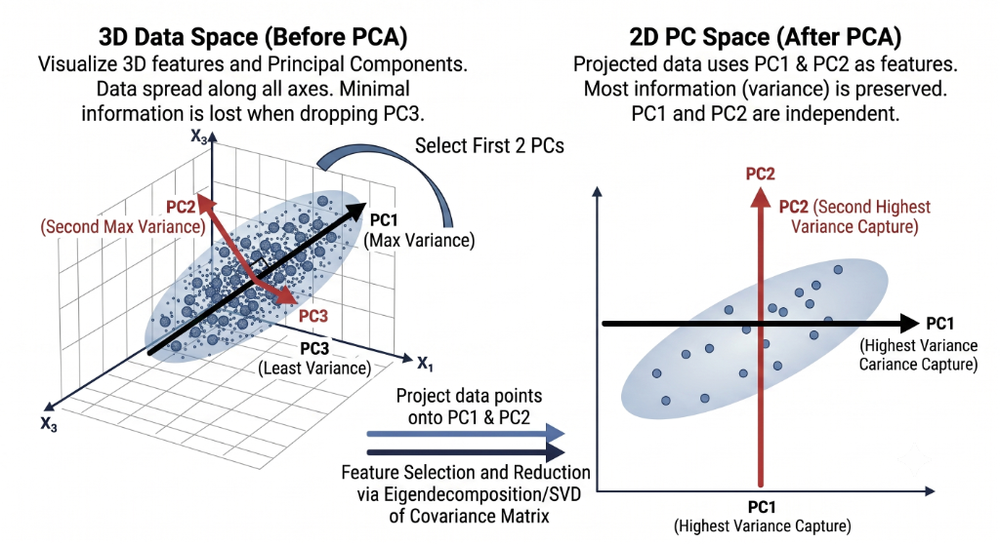
Fig. 12 Principal Component Analysis (PCA) diagram showing 3D original space reduced to 2D PC space.#
4. Python Implementation of PCA#
Here is how to perform PCA step-by-step using NumPy:
import numpy as np
# 1. Generate correlated 2D dataset (100 samples, 2 features)
np.random.seed(42)
X = np.random.multivariate_normal([0, 0], [[3, 2.2], [2.2, 2]], 100)
# 2. Step 1: Center the data (subtract mean)
X_centered = X - np.mean(X, axis=0)
# 3. Step 2: Compute Covariance Matrix
cov_matrix = np.cov(X_centered.T)
# 4. Step 3: Compute Eigenvalues & Eigenvectors
eigenvalues, eigenvectors = np.linalg.eig(cov_matrix)
# 5. Step 4: Sort eigenvectors by eigenvalues in descending order
sorted_idx = np.argsort(eigenvalues)[::-1]
eigenvalues = eigenvalues[sorted_idx]
eigenvectors = eigenvectors[:, sorted_idx]
print("Principal Component 1 (PC1) Vector:", eigenvectors[:, 0])
print(f"Variance explained by PC1: {eigenvalues[0] / np.sum(eigenvalues) * 100:.2f}%")
# 6. Step 5: Project 2D data onto 1D (Dimensionality Reduction)
X_1D = X_centered @ eigenvectors[:, 0]
print("Shape of reduced data:", X_1D.shape) # Reduced from (100, 2) to (100,)
SVD & Matrix Factorizations#
Matrix factorizations decompose complex matrices into product forms that are easier to analyze, invert, or compute.
1. Singular Value Decomposition (SVD)#
1.1 Mathematical Definition#
While Eigendecomposition \(A = P D P^{-1}\) only works for square matrices, Singular Value Decomposition (SVD) applies to any \(m \times n\) matrix \(A\):
Where:
\(U\) is an \(m \times m\) orthogonal matrix containing left-singular vectors (eigenvectors of \(A A^T\)).
\(\Sigma\) is an \(m \times n\) diagonal matrix containing singular values \(\sigma_1 \ge \sigma_2 \ge \dots \ge 0\) (square roots of eigenvalues of \(A^T A\)).
\(V^T\) is the transpose of an \(n \times n\) orthogonal matrix \(V\) containing right-singular vectors (eigenvectors of \(A^T A\)).
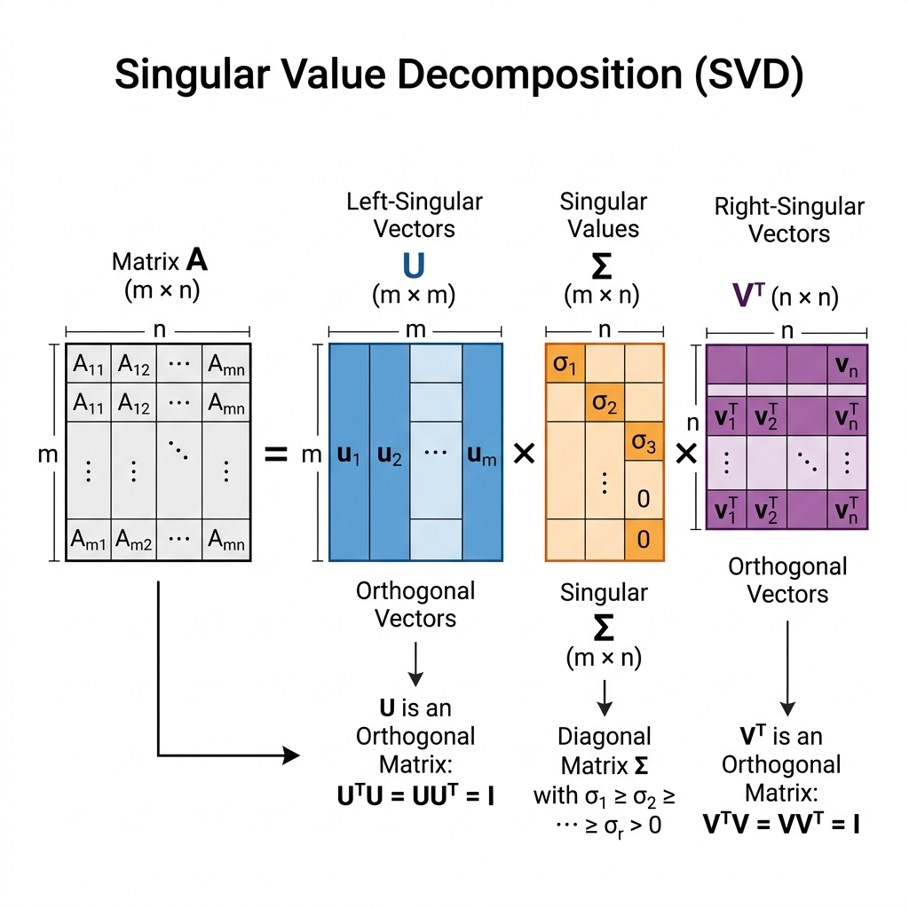
Fig. 13 Singular value decomposition of a matrix.#
1.2 Truncated SVD & Applications#
By keeping only the top \(k\) largest singular values (\(\Sigma_k\)), we get the optimal rank-\(k\) approximation of \(A\) (Eckart–Young–Mirsky Theorem):
Applications in AI & Data Science:
Recommender Systems (Matrix Factorization): Decomposing user-item rating matrices (e.g., Collaborative Filtering on Netflix/Spotify).
Natural Language Processing: Truncated SVD on term-document matrices (Latent Semantic Analysis - LSA).
Image Compression: Storing high-resolution images using only a fraction of singular values.
import numpy as np
# Sample 5x4 matrix
A = np.array([
[1, 2, 3, 4],
[5, 6, 7, 8],
[9, 10, 11, 12],
[13, 14, 15, 16],
[17, 18, 19, 20]
])
# Full SVD
U, s, Vt = np.linalg.svd(A)
print("U shape:", U.shape) # (5, 5)
print("Singular values:", s) # Singular values
print("Vt shape:", Vt.shape) # (4, 4)
# Truncated SVD (Rank 2 Approximation)
k = 2
S_k = np.diag(s[:k])
A_reconstructed = U[:, :k] @ S_k @ Vt[:k, :]
print("\nReconstructed Matrix (Rank 2 Approximation):\n", np.round(A_reconstructed, 2))
2. LU Decomposition#
LU Decomposition factors a square matrix \(A\) into a lower triangular matrix \(L\) and an upper triangular matrix \(U\):
Why use LU? Solving \(Ax = b\) via standard Gaussian elimination takes \(O(n^3)\) operations. Once \(A\) is factored into \(LU\), solving for multiple target vectors \(b\) takes only \(O(n^2)\) via forward and backward substitution!
3. QR Decomposition & Least Squares#
QR Decomposition factors an \(m \times n\) matrix \(A\) into an orthogonal matrix \(Q\) (\(Q^T Q = I\)) and an upper triangular matrix \(R\):
Application: Numerically Stable Least Squares#
In linear regression (\(X w = y\)), computing \((X^T X)^{-1}\) directly can be numerically unstable if \(X^T X\) has a high condition number. Using QR decomposition (\(X = QR\)):
This avoids explicitly computing matrix inverses, vastly improving numerical precision!
import numpy as np
X = np.array([[1, 1], [1, 2], [1, 3]])
y = np.array([6, 5, 7])
# QR Decomposition of Feature Matrix X
Q, R = np.linalg.qr(X)
# Solve w = R^-1 @ Q.T @ y
w = np.linalg.inv(R) @ Q.T @ y
print("Weights via QR Decomposition:", w)
Linear Transformations & Neural Networks#
Matrix operations can be geometrically viewed as transformations of vector spaces. Understanding linear maps sheds light on how Neural Networks process and reshape data.
1. Matrix as a Geometric Transformation#
A matrix \(A \in \mathbb{R}^{m \times n}\) acts as a function \(T: \mathbb{R}^n \rightarrow \mathbb{R}^m\) defined by:
Linear transformations satisfy two fundamental properties for any vectors \(u, v\) and scalar \(c\):
Additivity: \(T(u + v) = T(u) + T(v)\)
Homogeneity: \(T(c v) = c T(v)\)
Common 2D Geometric Transformations#
Scaling: \(\begin{bmatrix} s_x & 0 \\ 0 & s_y \end{bmatrix}\) (resizes vectors along axes).
Rotation: \(\begin{bmatrix} \cos\theta & -\sin\theta \\ \sin\theta & \cos\theta \end{bmatrix}\) (rotates vectors counter-clockwise by angle \(\theta\)).
Shearing: \(\begin{bmatrix} 1 & k \\ 0 & 1 \end{bmatrix}\) (slants shapes horizontally).
import numpy as np
# Rotation matrix for theta = 90 degrees (pi/2)
theta = np.pi / 2
R = np.array([
[np.cos(theta), -np.sin(theta)],
[np.sin(theta), np.cos(theta)]
])
v = np.array([1.0, 0.0]) # Vector pointing right along X-axis
v_rotated = R @ v
print("Original vector:", v)
print("Rotated vector (90 deg counter-clockwise):", np.round(v_rotated, 2)) # Points up along Y-axis!
2. Deep Learning: Dense Layers as Linear Maps#
In Deep Learning, a single fully connected (Dense) layer transforms an input feature vector \(x \in \mathbb{R}^n\) into an output representation \(h \in \mathbb{R}^m\):
Where:
\(W \in \mathbb{R}^{m \times n}\) is the Weight Matrix (Linear Transformation mapping feature space).
\(b \in \mathbb{R}^m\) is the Bias Vector (Translation / Shift).
\(\sigma(\cdot)\) is a non-linear Activation Function (e.g., ReLU, Sigmoid, Tanh).
Why Non-Linearity Matters#
If we stack 100 neural network layers without non-linear activations (\(\sigma\)), the entire network reduces to a single combined linear transformation:
No matter how deep the network is, a linear transformation can only draw straight decision boundaries (hyperplanes). Non-linear activation functions bend and warp the feature space, allowing Deep Learning models to learn highly complex, non-linear patterns!
Probability#
Probability is the mathematical language of uncertainty. In data science and machine learning, we use probability to build models under uncertainty, estimate parameters, evaluate classifiers, and construct complex systems like Bayesian networks.
This module is divided into four main chapters:
Foundations of Probability: Covers the core axioms, conditional probability, and Bayes’ Theorem (the backbone of Bayesian Inference).
Random Variables & Probability Distributions: Introduces discrete and continuous random variables, expectations, variance, and common distributions (Normal, Binomial, Poisson).
Convergence & Limit Theorems: Explores what happens when we collect a lot of data, featuring the Law of Large Numbers (LLN) and the Central Limit Theorem (CLT).
Information Theory Basics: Connects probability to information theory, explaining Entropy, Cross-Entropy, and KL Divergence—concepts foundational to Deep Learning loss functions.
A Quick Primer: Probability vs. Odds#
Before diving into the chapters, it is crucial to distinguish between Probability and Odds, two concepts often confused in casual language but mathematically distinct.
Probability (\(P\)): The ratio of the target event’s occurrence to all possible outcomes. It is always bounded between \(0\) and \(1\).
\[P = \frac{\text{Successes}}{\text{Total Outcomes}}\]Odds (\(O\)): The ratio of the probability of the event occurring (\(P\)) to the probability of the event not occurring (\(1 - P\)). Its value can range from \(0\) to \(\infty\).
\[O = \frac{P}{1 - P}\]
Feature |
Probability (\(P\)) |
Odds (\(O\)) |
|---|---|---|
Definition |
Likelihood of event over total outcomes |
Likelihood of event over non-event |
Range |
\([0, 1]\) or \([0\%, 100\%]\) |
\([0, \infty)\) |
Example (Rolling a 4 on a 6-sided die) |
\(\frac{1}{6} \approx 0.1667 \ (16.67\%)\) |
\(\frac{1/6}{5/6} = \frac{1}{5} \ (1:5 \text{ or } 0.2)\) |
Note
In machine learning, Odds are highly important in Logistic Regression. The model outputs log-odds (logit): \(\ln(\frac{P}{1-P}) = wx + b\).
Now, let’s move on to the first chapter: Foundations of Probability!
Foundations of Probability#
Probability is the mathematical language used to quantify uncertainty. In Data Science and Machine Learning, we rarely have perfect data or complete information about the real world. Therefore, probability helps us make the most reasonable predictions based on available data.
This chapter introduces the core concepts of probability, moving from intuition to rigorous mathematical definitions.
1. Sample Space and Events#
Imagine you flip a coin. The outcome can be Heads (H) or Tails (T).
Experiment: An action with an uncertain outcome (e.g., flipping a coin).
Sample Space (\(\Omega\)): The set of all possible outcomes of an experiment.
Example (Coin): \(\Omega = \{H, T\}\)
Example (Die): \(\Omega = \{1, 2, 3, 4, 5, 6\}\)
Event (\(E\)): A subset of the sample space. It is the set of outcomes we are interested in.
Example: Let \(E\) be the event “rolling an even number”. Then \(E = \{2, 4, 6\}\).
In Python, we can simulate simple events using sets:
# Sample space when rolling a single die
Omega = {1, 2, 3, 4, 5, 6}
# Event E: rolling an even number
E = {2, 4, 6}
# Does the event occur if the roll result is 4?
roll_result = 4
is_event_E = roll_result in E
print(f"Did Event E occur? {is_event_E}") # True
2. Probability Measure and Kolmogorov’s Axioms#
From an intuitive (Frequentist) perspective, the probability of an event is the proportion of times that event occurs if we repeat the experiment a large number of times.
(This formula applies when the outcomes in the sample space are equally likely).
However, to establish a rigorous mathematical foundation, mathematician Andrey Kolmogorov introduced 3 axioms for the probability measure \(P\):
Non-negativity: The probability of any event cannot be negative.
\[ P(E) \ge 0 \]Normalization: The probability of the entire sample space is always 1 (it is certain that some outcome in the sample space will occur).
\[ P(\Omega) = 1 \]Additivity: If two events \(A\) and \(B\) are mutually exclusive (they cannot occur simultaneously, meaning \(A \cap B = \emptyset\)), then the probability of \(A\) or \(B\) occurring is the sum of their individual probabilities.
\[ P(A \cup B) = P(A) + P(B) \]
From these 3 axioms, we can derive all other probability rules, for example: \(P(E^c) = 1 - P(E)\) (where \(E^c\) is the complement of \(E\)).
3. Conditional Probability and Independence#
Conditional Probability#
In reality, gaining new information can change the likelihood of an event occurring. Conditional probability \(P(A|B)\) is the probability of event \(A\) occurring given that event \(B\) has already occurred.
Intuition: The original sample space \(\Omega\) is now restricted to just \(B\). We examine what proportion the intersection of \(A\) and \(B\) takes up within this new space \(B\).
Independence#
Two events \(A\) and \(B\) are considered independent if the occurrence of \(B\) provides no additional information about whether \(A\) will occur (and vice versa).
Mathematically:
Which is equivalent to:
4. Bayes’ Theorem and Law of Total Probability#
Bayes’ Theorem#
From the conditional probability formula, we have \(P(A \cap B) = P(A|B)P(B)\) and \(P(B \cap A) = P(B|A)P(A)\). Since \(P(A \cap B) = P(B \cap A)\), we can derive the famous Bayes’ Theorem:
In Machine Learning, this theorem is often understood from the perspective of updating beliefs (Bayesian Inference):
\(P(A)\) (Prior): Our initial belief about hypothesis \(A\) before seeing the data.
\(P(B|A)\) (Likelihood): The probability of observing the data \(B\) if hypothesis \(A\) is true.
\(P(B)\) (Evidence): The overall probability of observing the data \(B\).
\(P(A|B)\) (Posterior): Our updated belief about hypothesis \(A\) after observing the data \(B\).
Simple Explanation of Bayes Theorem!#
Imagine you are building a basic Spam Filter. You receive an email containing the word “Free”. What is the probability that this email is Spam?
Bayes’ Theorem states that you cannot just look at the word “Free” and jump to a conclusion. You need to combine 3 pieces of information:
Prior: Generally, what percentage of emails sent to you are Spam? (e.g., 20%).
Likelihood: Among the emails that are definitely Spam, what percentage contain the word “Free”? (e.g., Scammers use this word a lot \(\rightarrow\) 80%).
Evidence: Overall, in all emails (both real and Spam), how often does the word “Free” appear? (e.g., Legitimate companies also send promotional emails like “Free shipping” \(\rightarrow\) 25%).
Plugging it into the formula:
Conclusion: Even though the word “Free” appears frequently in spam (80%), because the overall volume of spam is relatively low (20%) and normal emails also use this word, the actual probability that the email is spam is only 64% (not certain enough to delete it outright). This is how Bayes helps AI (and humans) reason logically and avoid hasty conclusions!
Another Example: The Two Bowls#
Let’s consider a classic probability puzzle: Imagine you have two bowls in front of you. You close your eyes, pick a bowl at random, and then draw a single marble from it.
Bowl 1 contains 4 marbles: 3 Red and 1 Blue.
Bowl 2 contains 4 marbles: 1 Red and 3 Blue.
You open your eyes and see that the marble you picked is Red. What is the probability that you picked from Bowl 1?

Fig. 14 AI-generated Bayes’ Theorem Infographic Diagram for the Two Bags Problem.#
Let’s break this down using Bayes’ Theorem:
Prior (\(P(\text{Bowl 1})\)): Before looking at the marble, you picked a bowl at random. Since there are two bowls, the probability is \(0.5\) (or 50%).
Likelihood (\(P(\text{Red} | \text{Bowl 1})\)): If you were definitely drawing from Bowl 1, what is the chance of getting a Red marble? There are 3 Red out of 4, so it’s \(3/4 = 0.75\).
Likelihood for the other bowl (\(P(\text{Red} | \text{Bowl 2})\)): If you were drawing from Bowl 2, the chance is \(1/4 = 0.25\).
Evidence (\(P(\text{Red})\)): What is the total probability of drawing a Red marble overall? We use the Law of Total Probability (explained in the next section):
\[\begin{split} \begin{align*} P(\text{Red}) &= P(\text{Red} | \text{Bowl 1}) \times P(\text{Bowl 1}) + P(\text{Red} | \text{Bowl 2}) \times P(\text{Bowl 2}) \\ &= 0.75 \times 0.5 + 0.25 \times 0.5 \\ &= 0.375 + 0.125 \\ &= 0.5 \end{align*} \end{split}\]
Now, applying Bayes’ formula:
Conclusion: Given that you drew a Red marble, there is a 75% chance that you drew it from Bowl 1. This perfectly matches our intuition because Bowl 1 has way more red marbles!
Law of Total Probability#
To calculate the denominator \(P(B)\) in Bayes’ Theorem, we often use the law of total probability. If the sample space \(\Omega\) is partitioned into mutually exclusive events \(A_1, A_2, ..., A_n\) (meaning they cover the entire sample space and do not overlap), then:
Python Example: Medical Diagnosis#
Suppose there is a rare disease that only 1% of the population has (\(P(D) = 0.01\)). A test has an accuracy of 99% for people with the disease (\(P(+|D) = 0.99\)) and a false positive rate of 5% for healthy people (\(P(+|D^c) = 0.05\)). If a person tests positive (+), what is the probability they actually have the disease (\(P(D|+)\))?
# Probability of having the disease (Prior) and not having it
p_disease = 0.01
p_no_disease = 1 - p_disease
# Probability of a positive test (Likelihood)
p_pos_given_disease = 0.99
p_pos_given_no_disease = 0.05
# Law of total probability: Probability of getting a positive test (Evidence)
p_pos = (p_pos_given_disease * p_disease) + (p_pos_given_no_disease * p_no_disease)
# Bayes' Theorem: Probability of disease given a positive test (Posterior)
p_disease_given_pos = (p_pos_given_disease * p_disease) / p_pos
print(f"Probability of disease given positive test: {p_disease_given_pos:.2%}")
# Output: Probability of disease given positive test: 16.67%
Are you surprised? Even though the test seems very accurate (99%), because the disease is so rare (1%), most positive results are actually false positives! This is the power of Bayes’ Theorem in correcting human intuition.
Random Variables & Probability Distributions#
While the sample space \(\Omega\) contains raw outcomes (e.g., “Heads”, “Tails”), we often want to work with numbers for easier mathematical computation. Random Variables (RV) serve as this bridge.
A random variable, often denoted as \(X, Y, Z\), is a mathematical function that maps outcomes from the sample space to a real number: \(X: \Omega \rightarrow \mathbb{R}\).
1. Discrete vs. Continuous Random Variables#
Discrete Random Variables#
Discrete random variables take on countable values (e.g., the number of Heads in 3 coin flips, the number of customers entering a store).
Probability Mass Function (PMF): Describes the probability that the random variable \(X\) takes on a specific value \(x\), denoted as \(P(X = x)\) or \(p(x)\).
\[P(X = x) \ge 0 \quad \forall x\]The sum of probabilities for all possible values must equal 1:
\[\sum_{x} P(X = x) = 1\]
Continuous Random Variables#
Continuous random variables take on values within a continuous range (e.g., a person’s height, waiting time for a bus).
Probability Density Function (PDF): Unlike a PMF, the probability that a continuous variable \(X\) takes on a specific, exact value is always 0 (e.g., \(P(X = 170.0000...) = 0\)). Instead, the PDF \(f(x)\) describes the probability density, allowing us to find the probability that \(X\) falls within a range \([a, b]\) by integrating:
\[P(a \le X \le b) = \int_{a}^{b} f(x) dx\]The total area under the PDF curve must equal 1:
\[\int_{-\infty}^{\infty} f(x) dx = 1\]
Cumulative Distribution Function (CDF)#
The CDF, denoted as \(F(x)\), is the probability that the random variable \(X\) takes on a value less than or equal to \(x\). It applies to both discrete and continuous variables:
2. Expectation, Variance & Moments#
Expected Value (\(\mu\) or \(E[X]\))#
The expected value is the average value we expect \(X\) to take if we run the experiment many times. It acts as the “center of mass” of the distribution.
Discrete Expected Value:
\[E[X] = \sum_{x} x \cdot P(X=x)\]Continuous Expected Value:
\[E[X] = \int_{-\infty}^{\infty} x \cdot f(x) dx\]
Variance (\(\sigma^2\) or \(\operatorname{Var}(X)\))#
Variance measures the spread or dispersion of the data around the expected value.
Standard Deviation (\(\sigma\)) is the square root of the variance, which brings the unit back to the same scale as \(X\).
Moments#
1st Moment: Expected Value (Mean).
2nd Central Moment: Variance.
3rd Moment (Skewness): Measures the asymmetry of the distribution.
4th Moment (Kurtosis): Measures the “peakedness” of the distribution and the heaviness of its tails.
3. Joint Distributions and Correlation#
When working with multiple variables (e.g., having many features in Machine Learning), we use Joint Distributions.
Marginal Distribution: The probability of one variable when we ignore (integrate/sum out) the other variables.
Covariance (\(\operatorname{Cov}(X, Y)\)): Measures the tendency of two variables to change together.
\[\operatorname{Cov}(X, Y) = E[(X - \mu_X)(Y - \mu_Y)]\]Pearson Correlation Coefficient (\(\rho\)): Normalizes covariance to the range \([-1, 1]\):
\[\rho = \frac{\operatorname{Cov}(X, Y)}{\sigma_X \sigma_Y}\](Note: Correlation does not imply causation).
4. Common Distributions in Data Science#
Choosing the right distribution to model your data is a key step in Machine Learning and Statistical Modeling. Below are the most frequently encountered probability distributions.
4.1 Discrete Distributions
Discrete distributions model variables that take on distinct, countable values.
Bernoulli Distribution (\(\text{Bernoulli}(p)\)): Models a single trial with exactly two outcomes: Success (1) with probability \(p\), and Failure (0) with probability \(1-p\).
Parameters: \(p \in [0, 1]\) (success probability).
PMF: \(P(X = x) = p^x (1-p)^{1-x}\) for \(x \in \{0, 1\}\).
Mean / Variance: \(\mathbb{E}[X] = p\), \(\text{Var}(X) = p(1-p)\).
Example: Flipping a coin, whether a user clicks an ad or not.
Binomial Distribution (\(\text{Bin}(n, p)\)): Models the number of successes in \(n\) independent Bernoulli trials.
Parameters: \(n \in \mathbb{N}\) (number of trials), \(p \in [0, 1]\).
PMF: \(P(X = k) = \binom{n}{k} p^k (1-p)^{n-k}\).
Mean / Variance: \(\mathbb{E}[X] = np\), \(\text{Var}(X) = np(1-p)\).
Example: The number of clicks from 100 users visiting a website.
Poisson Distribution (\(\text{Poisson}(\lambda)\)): Models the number of times an event occurs within a fixed interval of time or space.
Parameters: \(\lambda > 0\) (average rate of occurrence).
PMF: \(P(X = k) = \frac{\lambda^k e^{-\lambda}}{k!}\).
Mean / Variance: \(\mathbb{E}[X] = \lambda\), \(\text{Var}(X) = \lambda\).
Example: Number of customer service calls received per hour.
4.2 Continuous Distributions
Continuous distributions model variables that take on any real value within a continuous range or interval.
Uniform Distribution (\(\mathcal{U}(a, b)\)): All values within the continuous interval \([a, b]\) are equally likely to occur.
Parameters: \(a\) (lower bound), \(b\) (upper bound).
PDF: \(f(x) = \frac{1}{b-a}\) for \(x \in [a, b]\).
Mean / Variance: \(\mathbb{E}[X] = \frac{a+b}{2}\), \(\text{Var}(X) = \frac{(b-a)^2}{12}\).
Example: Random seed generation in model initialization.
Normal / Gaussian Distribution (\(\mathcal{N}(\mu, \sigma^2)\)): The most important distribution in Data Science. It features a symmetric, bell-shaped curve centered around the mean.
Parameters: \(\mu\) (mean), \(\sigma^2\) (variance).
PDF: \(f(x) = \frac{1}{\sigma \sqrt{2\pi}} e^{-\frac{1}{2} \left(\frac{x-\mu}{\sigma}\right)^2}\).
Mean / Variance: \(\mathbb{E}[X] = \mu\), \(\text{Var}(X) = \sigma^2\).
Example: Distribution of measurement errors, model residuals, or human heights.
Exponential Distribution (\(\text{Exp}(\beta)\)): Models the time or distance between consecutive events in a Poisson process.
Parameters: \(\beta > 0\) (rate parameter).
PDF: \(f(x) = \beta e^{-\beta x}\) for \(x \ge 0\).
Mean / Variance: \(\mathbb{E}[X] = \frac{1}{\beta}\), \(\text{Var}(X) = \frac{1}{\beta^2}\).
Example: The waiting time between phone calls at a call center.
Beta Distribution (\(\text{Beta}(\alpha, \beta)\)): A continuous distribution defined on the interval \([0, 1]\), widely used in Bayesian inference to model the probability distribution of an unknown probability parameter.
Parameters: \(\alpha > 0\) (success shape parameter), \(\beta > 0\) (failure shape parameter).
PDF: \(f(x) = \frac{x^{\alpha-1} (1-x)^{\beta-1}}{\text{B}(\alpha, \beta)}\), where \(\text{B}\) is the Beta function.
Example: Modeling the uncertainty of the click-through rate (CTR) of a new banner ad.
Visualization with Python (Scipy & Matplotlib)#
Here is how to use the scipy.stats library to work with the Normal distribution.
import numpy as np
import matplotlib.pyplot as plt
from scipy.stats import norm
# Create X-axis data
x = np.linspace(-5, 5, 1000)
# PDF of the Normal distribution with mu=0, sigma=1 (Standard Normal)
pdf = norm.pdf(x, loc=0, scale=1)
# CDF of the Normal distribution
cdf = norm.cdf(x, loc=0, scale=1)
plt.figure(figsize=(10, 4))
plt.subplot(1, 2, 1)
plt.plot(x, pdf, color='blue')
plt.title("Probability Density Function (PDF)")
plt.grid(True)
plt.subplot(1, 2, 2)
plt.plot(x, cdf, color='red')
plt.title("Cumulative Distribution Function (CDF)")
plt.grid(True)
plt.show()
# Calculate probability P(X < 1.96)
prob = norm.cdf(1.96, loc=0, scale=1)
print(f"P(X < 1.96) = {prob:.4f}") # Output: 0.9750
Convergence & Limit Theorems#
In Data Science and Machine Learning, we rarely have access to an entire “population”. Instead, we collect a finite “sample” of size \(n\).
Limit Theorems are the fundamental theorems of probability theory that describe how sample statistics (such as the sample mean \(\bar{X}_n\)) behave as the sample size approaches infinity (\(n \to \infty\)).
1. What Are Limit Theorems?#
A Limit Theorem describes the asymptotic behavior of a sequence of random variables \((X_n)_{n=1}^\infty\).
In probability theory, there are two primary pillars of Limit Theorems:
Law of Large Numbers (LLN): Governs the value convergence — establishing that as \(n \to \infty\), the sample mean \(\bar{X}_n\) converges to the true population expectation \(\mu\).
Central Limit Theorem (CLT): Governs the distribution shape convergence — establishing that as \(n \to \infty\), the normalized sum or sample mean converges in distribution to a standard Normal Distribution \(\mathcal{N}(0, 1)\), regardless of the underlying distribution shape.
2. Modes of Convergence#
To understand how a sequence of random variables \(X_n\) behaves as \(n \to \infty\), mathematicians define three primary modes of convergence:
2.1 Convergence in Probability (\(X_n \xrightarrow{P} X\))#
A sequence \(X_n\) converges in probability to a random variable \(X\) if, as the sequence progresses, the probability that the difference between them is larger than any arbitrarily small positive number \(\epsilon\) vanishes to zero.
Mathematical Definition:
Machine Learning Intuition: This forms the basis of the Weak Law of Large Numbers (WLLN). It guarantees that as you collect more data points, the sample statistic (like the sample mean) will cluster closer and closer to the true population value, with the probability of a large error dropping to zero.
2.2 Almost Sure Convergence (\(X_n \xrightarrow{a.s.} X\))#
A sequence \(X_n\) converges almost surely (with probability 1) to \(X\) if the sequence of actual values realized by \(X_n\) converges to the realized value \(X\) for almost all outcomes.
Mathematical Definition:
Machine Learning Intuition: This is a stronger form of convergence that underpins the Strong Law of Large Numbers (SLLN). While convergence in probability states that large deviations become rare at any single step \(n\), almost sure convergence guarantees that the entire path of sample statistics will eventually enter and never leave an arbitrarily small interval around the true mean.
2.3 Convergence in Distribution (\(X_n \xrightarrow{d} X\))#
A sequence \(X_n\) converges in distribution to \(X\) if their Cumulative Distribution Functions (CDFs) converge to the CDF of \(X\) at all points where the limiting CDF is continuous.
Mathematical Definition:
Machine Learning Intuition: This is the weakest form of convergence and serves as the mathematical foundation for the Central Limit Theorem (CLT). It doesn’t mean the individual sample values become equal, but rather that the overall shape of the histogram of these values settles into a specific probability distribution (like the Gaussian bell curve).
2.4 Hierarchy of Convergence#
The relationship and strength between these three modes of convergence can be ordered hierarchically:
(Almost Sure Convergence is the strongest mode, implying Convergence in Probability, which in turn implies Convergence in Distribution. The reverse implications do not hold in general without additional conditions).
3. Law of Large Numbers (LLN)#
The Law of Large Numbers (LLN) is a fundamental theorem in probability. It states that as the number of independent trials increases, the empirical average (observed average) of the results converges to the theoretical expected value.
For example, when rolling a fair 6-sided die, the theoretical expected value (mean) of a roll is:
If you roll the die 10 times, your average roll might be \(2.1\) or \(4.8\) (high variance). However, if you roll it 10,000 times, the average will be extremely close to \(3.5\) as \(n \to \infty\).

Fig. 15 Simulation demonstrating the Law of Large Numbers.#
Why LLN Matters in Data Science#
Guarantees Sample Reliability: Collecting more data increases estimation precision.
Foundation of Machine Learning: Ensures that training model parameters on finite sample datasets generalizes to true population distributions.
Python Simulation: Roll Average Comparison#
import numpy as np
# Theoretical expected value for a fair die roll
expected_value = 3.5
for rolls in [10, 100, 1000, 10000, 100000]:
# Simulate die rolls (1 to 6)
simulated_rolls = np.random.randint(1, 7, size=rolls)
empirical_average = np.mean(simulated_rolls)
difference = abs(empirical_average - expected_value)
print(f"Rolls: {rolls:<6} | Average: {empirical_average:.4f} | Difference: {difference:.4f}")
Python Simulation: Cumulative Convergence Curve#
import numpy as np
import matplotlib.pyplot as plt
np.random.seed(42)
N = 1000
rolls = np.random.randint(1, 7, size=N)
sample_means = np.cumsum(rolls) / np.arange(1, N + 1)
plt.figure(figsize=(9, 4.5))
plt.plot(sample_means, label=r'Sample Mean $\bar{X}_n$')
plt.axhline(y=3.5, color='r', linestyle='--', label=r'True Mean $\mu = 3.5$')
plt.xlabel('Number of rolls (n)')
plt.ylabel('Sample Mean')
plt.title('Law of Large Numbers Convergence')
plt.legend()
plt.grid(True)
plt.show()
4. Central Limit Theorem (CLT)#
While LLN explains what value the sample mean converges to, the Central Limit Theorem (CLT) explains the shape of the distribution of sample means.
Theorem Statement#
Given independent and identically distributed (i.i.d) random variables \(X_1, X_2, \dots, X_n\) with finite mean \(\mu\) and variance \(\sigma^2\), as \(n \to \infty\) (typically \(n \ge 30\)):
Or in standardized form:
Why CLT is the “Mathematical Miracle” of Statistics#
Distribution Agnostic: The original population can be uniform, exponential, or skewed. The distribution of sample means \(\bar{X}_n\) will always form a Gaussian bell curve.
Enables Hypothesis Testing: Provides the foundation for confidence intervals, z-tests, t-tests, and A/B testing in Data Science.
Python Simulation: CLT#
import numpy as np
import matplotlib.pyplot as plt
import seaborn as sns
n_samples = 50
n_trials = 10000
# Generate Uniform random matrix (10,000 trials x 50 samples)
data = np.random.uniform(0, 1, size=(n_trials, n_samples))
sample_means = np.mean(data, axis=1)
plt.figure(figsize=(8, 4.5))
sns.histplot(sample_means, kde=True, color='blue', bins=50)
plt.title(f'CLT: Distribution of Sample Means (n={n_samples})')
plt.xlabel('Sample Mean')
plt.ylabel('Density')
plt.grid(True)
plt.show()
Information Theory Basics#
Although originating from telecommunications engineering (by Claude Shannon), Information Theory has incredibly deep mathematical connections to Probability. In modern Deep Learning and Machine Learning, concepts from information theory are used as the default Loss functions for almost all Classification problems.
This chapter will visually explain Entropy, Cross-Entropy, and KL Divergence.
1. Information Content#
Imagine you are waiting for the outcome of an event.
If that event is 100% certain to happen (e.g., “The sun rises in the East”), when it actually happens, you gain no new information.
Conversely, if that event is very rare (e.g., “Winning the lottery jackpot”), when it happens, you receive a massive amount of information.
Mathematically, the Information Content (\(I\)) of an event \(x\) (with probability \(P(x)\)) is defined as inversely proportional to its probability:
Note: We use base 2 to measure in units of bits (as in computers).
2. Equivalence of Probability and Information#
There is a direct mathematical equivalence between probability, uncertainty, and information. Whenever we reduce uncertainty about an outcome by eliminating alternative possibilities, we are gaining information.

Fig. 16 Visualizing the equivalence of probability reduction and information gain.#
As illustrated in the diagram above:
a) Independent Random Sampling: Consider drawing colored marbles from an urn with replacement. The probabilities are:
\[p(\text{blue}) = \frac{1}{2}, \quad p(\text{grey}) = \frac{1}{4}, \quad p(\text{yellow}) = \frac{1}{8}, \quad p(\text{green}) = \frac{1}{8}\]b) 2-Sequences Distribution: Shows the combined joint probability distribution of drawing two marbles consecutively (\(X_1, X_2\)), yielding 16 possible outcomes.
c) Information Content of Propositions: By learning a proposition about the two draws is true, we eliminate certain possible outcomes, reducing the probability mass and gaining information:
Proposition \(X_1 \neq \text{blue}, X_2 \neq \text{blue}\): Eliminates all sequences containing blue marbles. The remaining probability mass is \(\frac{8}{32}\) (a 75% reduction), yielding exactly 2 bits of information.
Proposition \(X_1 \neq \text{green}\): Eliminates green outcomes. The remaining probability mass is \(\frac{28}{32}\), yielding only 0.2 bits of information (since green was already rare).
Proposition \(X_1 = X_2\): Learning that both marbles have the same color has a probability of \(\frac{11}{32}\), yielding 1.5 bits of information.
Core Rule: Eliminating probability mass, reducing uncertainty, and gaining information are mathematically equivalent. A 50% reduction in the remaining probability mass corresponds to exactly 1 bit of information gained.
3. Entropy (Uncertainty / Chaos)#
While \(I(x)\) only measures the information content of a single specific event, Entropy (\(H\)) measures the expected information content of the entire probability distribution. In other words, Entropy measures the level of “uncertainty” or “chaos” of a random variable \(X\).
Note
Mathematical Edge Cases & Practical Notes:
Convention for \(0 \log_2 0\): By convention, \(0 \log_2(0) = 0\) because \(\lim_{p \to 0^+} p \log_2(p) = 0\).
Base 2 vs. Natural Log:
Base 2 (\(\log_2\)) measures information in bits (standard in pure Information Theory).
Natural log (\(\ln\)) measures information in nats (standard in Machine Learning frameworks like PyTorch and TensorFlow for loss computations).
Low Entropy: The system is very predictable (high certainty). Example: A rigged coin that always lands on Heads (\(P(H) = 1, P(T) = 0\)). In this case, \(H(X) = 0\).
High Entropy: The system is completely chaotic and most unpredictable. Example: A fair coin (\(P(H) = 0.5, P(T) = 0.5\)). In this case, \(H(X)\) reaches its maximum.
4. Cross-Entropy#
Cross-Entropy answers the question: If the true data follows distribution \(P\), but we assume it follows an approximate distribution \(Q\), how many bits on average do we need to encode the information?
In Machine Learning:
\(P\) (True distribution): The actual distribution of the data (usually ground-truth labels, e.g.,
[1, 0, 0]for a picture of a dog).\(Q\) (Predicted distribution): The distribution predicted by the AI model (e.g.,
[0.7, 0.2, 0.1]).
The goal of an ML model is to make \(Q\) as similar to \(P\) as possible. When \(Q = P\), Cross-Entropy reaches its minimum value (which is exactly the Entropy of \(P\)). Therefore, Cross-Entropy Loss is used as the loss function to optimize Neural Networks in Classification problems.
5. Kullback-Leibler (KL) Divergence (Distribution Distance)#
KL Divergence (KLD) measures the difference between two probability distributions \(P\) and \(Q\). It answers the question: By using \(Q\) instead of \(P\), how much extra information content are we wasting?
Important Properties:
\(D_{KL}(P || Q) \ge 0\). It is only equal to 0 when \(P\) and \(Q\) are identical.
It is not symmetric: \(D_{KL}(P || Q) \neq D_{KL}(Q || P)\). Therefore, it is not a true “distance metric” in a geometric sense.
In Machine Learning (especially Generative AI like VAEs - Variational Autoencoders or t-SNE), KLD is used as a Loss function to force the predicted distribution \(Q\) (latent space) to closely match a standard distribution \(P\).
Illustration with Python#
How to calculate Entropy and KL Divergence using Numpy and Scipy.
import numpy as np
from scipy.stats import entropy
# Distribution P (actual - ground truth)
P = np.array([0.8, 0.15, 0.05])
# Distribution Q (prediction from model 1 - quite good)
Q1 = np.array([0.7, 0.2, 0.1])
# Distribution Q (prediction from model 2 - very bad)
Q2 = np.array([0.2, 0.3, 0.5])
# 1. Calculate Entropy of P (base 2)
# entropy() in scipy defaults to natural log (ln), we change the base with base=2
H_P = entropy(P, base=2)
print(f"Entropy H(P): {H_P:.4f} bits")
# 2. Calculate KL Divergence: D_KL(P || Q1) and D_KL(P || Q2)
kl_1 = entropy(P, qk=Q1, base=2)
kl_2 = entropy(P, qk=Q2, base=2)
print(f"KL Divergence (P || Q1): {kl_1:.4f} bits (Good model, small KLD)")
print(f"KL Divergence (P || Q2): {kl_2:.4f} bits (Bad model, large KLD)")
# 3. Calculate Cross-Entropy H(P, Q) = H(P) + D_KL(P || Q)
ce_1 = H_P + kl_1
print(f"Cross-Entropy H(P, Q1): {ce_1:.4f} bits")
Statistics#
Statistics is the discipline that concerns the collection, organization, analysis, interpretation, and presentation of data. While probability helps us predict future outcomes based on a known model, statistics works in reverse: we analyze observed data to infer the properties of the underlying system.
1. Descriptive vs. Inferential Statistics#
Descriptive Statistics: Summarizes and describes the characteristics of a dataset (e.g., mean, median, standard deviation).
Inferential Statistics: Uses a sample of data to make predictions or draw conclusions about a larger population.
2. Descriptive Statistics in Python#
Mean, Median, and Mode#
Mean: The arithmetic average.
Median: The middle value when data is sorted. Highly resistant to outliers.
Mode: The most frequent value.
Variance and Standard Deviation#
Variance (\(\sigma^2\)) and Standard Deviation (\(\sigma\)) measure the spread of data points around the mean.
Population Variance:
\[\sigma^2 = \frac{\sum (x_i - \mu)^2}{N}\]Sample Variance (Bessel’s correction uses \(n-1\) to account for sample bias):
\[s^2 = \frac{\sum (x_i - \bar{x})^2}{n - 1}\]
import numpy as np
from scipy import stats
data = [12, 15, 12, 18, 22, 15, 14, 15, 90] # Note the outlier: 90
mean = np.mean(data)
median = np.median(data)
mode = stats.mode(data, keepdims=True).mode[0]
# Sample Standard Deviation (ddof=1)
std_dev = np.std(data, ddof=1)
print(f"Mean : {mean:.2f}")
print(f"Median : {median:.2f}")
print(f"Mode : {mode}")
print(f"Sample Std Dev : {std_dev:.2f}")
Output:
Mean : 22.56
Median : 15.00
Mode : 15
Sample Std Dev : 25.56
3. The Normal Distribution#
The normal (or Gaussian) distribution is a continuous symmetric bell-shaped curve defined by its mean (\(\mu\)) and standard deviation (\(\sigma\)).
Z-score#
A Z-score indicates how many standard deviations a value is from the mean:
Python Implementation of Normal CDF and Percentiles#
from scipy.stats import norm
# Standard Normal Distribution (mean=0, std=1)
# What percentage of data falls below Z = 1.96?
pct_below_z = norm.cdf(1.96)
print(f"Percent below Z=1.96: {pct_below_z*100:.2f}%")
# Inverse CDF: What Z-score marks the 95th percentile?
z_95th = norm.ppf(0.95)
print(f"Z-score at 95th percentile: {z_95th:.4f}")
Output:
Percent below Z=1.96: 97.50%
Z-score at 95th percentile: 1.6449
4. Central Limit Theorem (CLT)#
The Central Limit Theorem states that if you take sufficiently large random samples from any population (even a non-normal one), the distribution of the sample means will approach a normal distribution as the sample size increases.
This allows us to perform statistical inference (like hypothesis testing) on non-normal data!
5. Confidence Intervals#
A confidence interval provides a range of values that is likely to contain the true population parameter.
The formula for the confidence interval of a mean is:
import numpy as np
from scipy import stats
sample_data = [12, 15, 12, 18, 22, 15, 14, 15, 19, 20]
n = len(sample_data)
mean = np.mean(sample_data)
sem = stats.sem(sample_data) # Standard Error of the Mean = s / sqrt(n)
# 95% Confidence Interval
ci_95 = stats.t.interval(0.95, df=n-1, loc=mean, scale=sem)
print(f"95% Confidence Interval for the mean: {ci_95[0]:.2f} to {ci_95[1]:.2f}")
Output:
95% Confidence Interval for the mean: 13.91 to 18.49
6. Hypothesis Testing & P-Values#
Hypothesis testing is a systematic way to evaluate claims about a population.
Null Hypothesis (\(H_0\)): The status quo; there is no effect or no difference.
Alternative Hypothesis (\(H_1\)): The claim we want to test.
P-value: The probability of obtaining test results at least as extreme as the observed results, assuming \(H_0\) is true. If \(p \leq 0.05\) (the significance level \(\alpha\)), we reject \(H_0\).
Example: One-Sample T-test#
A manufacturer claims their lightbulbs last 1000 hours on average. We test 10 bulbs and get the following lifespans:
from scipy import stats
lifespans = [980, 1010, 990, 970, 1005, 985, 995, 960, 1020, 980]
# Perform one-sample t-test against H0: mean = 1000
t_stat, p_val = stats.ttest_1samp(lifespans, 1000)
print(f"T-statistic: {t_stat:.4f}")
print(f"P-value : {p_val:.4f}")
if p_val < 0.05:
print("Reject H0: The mean lifespan is significantly different from 1000 hours.")
else:
print("Fail to reject H0: No significant difference from 1000 hours.")
Output:
T-statistic: -1.7454
P-value : 0.1149
Fail to reject H0: No significant difference from 1000 hours.
7. Z-Test vs. T-Test#
When performing hypothesis tests on a sample mean, you must choose between a Z-test and a T-test:
Feature |
Z-Test |
T-Test |
|---|---|---|
Sample Size |
Large (\(n \geq 30\)) |
Small (\(n < 30\)) |
Population Variance (\(\sigma^2\)) |
Known |
Unknown (must use sample variance \(s^2\)) |
Underlying Distribution |
Normal Distribution |
Student’s T-Distribution (wider tails to account for uncertainty) |
8. Type I and Type II Errors#
When testing hypothesis, decisions are made under uncertainty. This can lead to two types of errors:
Type I Error (\(\alpha\) / False Positive): Rejecting the null hypothesis (\(H_0\)) when it is actually true. Example: A spam filter classifying a legitimate email as spam.
Type II Error (\(\beta\) / False Negative): Failing to reject the null hypothesis (\(H_0\)) when it is actually false. Example: A spam filter letting a malicious email pass through to the inbox.
9. Chi-Square Test (\(\chi^2\)) for Categorical Data#
A Chi-Square Test is used to determine whether there is a statistically significant association between two categorical variables.
For instance, suppose we want to test if a customer’s subscription plan preference (Basic, Premium) is dependent on their region (US, EU):
import numpy as np
from scipy.stats import chi2_contingency
# Contingency table (observed counts)
# Rows: US, EU
# Columns: Basic, Premium
observed = np.array([
[150, 100], # US
[120, 130] # EU
])
# Perform Chi-Square Test
chi2_stat, p_val, dof, expected = chi2_contingency(observed)
print(f"Chi2 statistic : {chi2_stat:.4f}")
print(f"P-value : {p_val:.4f}")
if p_val < 0.05:
print("Subscription preferences are significantly associated with region.")
else:
print("Subscription preferences are independent of region.")
Exercises#
Exercise 1
You have a dataset of house prices: [250, 270, 310, 290, 850, 300, 260] (in thousands of dollars).
Calculate the mean and median.
Which measure is more appropriate for summarizing this dataset, and why?
Exercise 2
A sample of 50 students scored an average of 78 on an exam, with a sample standard deviation of 8. Compute the \(95\%\) confidence interval for the population mean.
Exercise 3
An online store wants to see if changing the color of the “Buy” button increases conversions.
Control group (Red): 100 purchases out of 1000 visits.
Treatment group (Green): 130 purchases out of 1000 visits. Perform a two-sample z-test for proportions to see if the green button performs significantly better (\(\alpha = 0.05\)).
Solution — Exercise 3
from statsmodels.stats.proportion import proportions_ztest
import numpy as np
count = np.array([130, 100]) # successes
nobs = np.array([1000, 1000]) # observations
# Perform z-test
stat, pval = proportions_ztest(count, nobs, alternative='larger')
print(f"Z-statistic: {stat:.4f}")
print(f"P-value : {pval:.5f}")
Statistical Inference#
While Probability goes from a general mathematical model to predict data (Model \(\rightarrow\) Data), Statistical Inference does the reverse: it goes from collected data (Sample) to predict and draw conclusions about the general model of the real world (Data \(\rightarrow\) Model).
This is the foundation of the training process in Machine Learning: relying on a finite training dataset to find the best parameters for a model.
1. Point Estimation#
The goal of point estimation is to find a single value (called \(\hat{\theta}\)) that best approximates the true population parameter \(\theta\) based on sample data.
Maximum Likelihood Estimation (MLE)#
MLE is the most common method in Machine Learning. The core idea: “Choose the parameter \(\theta\) such that the probability of observing the current dataset is maximized.”
The Likelihood function \(L(\theta)\) is the probability of the data \(X\) given the parameter \(\theta\). If the data points \(x_i\) are independent and identically distributed (i.i.d):
For ease of computation (to avoid underflow and turn products into sums), we typically use Log-Likelihood:
The goal of MLE is to find \(\theta\) to maximize this Log-Likelihood function. (Note: In Deep Learning, minimizing the Cross-Entropy Loss is exactly performing MLE!).
Maximum A Posteriori (MAP)#
MAP is an extension of MLE based on Bayes’ theorem, allowing us to incorporate our initial belief (Prior - \(P(\theta)\)) into the estimation process.
(Note: Adding Regularization (L1/L2) in Machine Learning is exactly performing MAP estimation where the Prior is a Laplace/Gaussian distribution, respectively).
2. Confidence Intervals (CI)#
A point estimate (like MLE) only gives us a single number, but it doesn’t tell us the certainty of that number. A Confidence Interval provides a range of values within which we believe the true parameter \(\theta\) lies with a certain level of confidence (e.g., 95%).
Suppose we calculate the sample mean \(\bar{X}\) and the sample standard deviation \(S\). Based on the Central Limit Theorem (CLT), the 95% confidence interval for the population mean \(\mu\) is:
(The number 1.96 is the z-score corresponding to 95% of the area under the Normal distribution curve).
3. Hypothesis Testing and p-value#
Hypothesis testing is the backbone of scientific research and A/B Testing in the industry (e.g., Does Interface A or B bring more clicks?).
The basic steps:
Establish \(H_0\) (Null Hypothesis): The default assumption (usually “No difference”, “No effect”).
Establish \(H_A\) (Alternative Hypothesis): What we want to prove (“There is a difference”, “The drug has an effect”).
Calculate the Test Statistic: A statistical metric derived from the sample data (e.g., t-score, z-score).
Calculate the p-value: The probability of obtaining a result equal to (or more extreme than) the current sample data, assuming that \(H_0\) is true.
Conclusion: If the p-value is smaller than a threshold \(\alpha\) (usually 0.05), we reject \(H_0\) and accept \(H_A\) (The result is Statistically significant).
Careful: The p-value is not the probability that \(H_0\) is true. It is only the probability of observing this data if \(H_0\) were true.
Common types of tests:#
T-test: Used to compare the means of 1 or 2 groups (when the population variance is unknown or the sample size is small). Frequently used in A/B testing.
ANOVA: Used to compare the means of 3 or more groups.
Chi-square Test: Used for categorical data to check for independence between categorical variables.
Python Example (T-test for A/B Testing)#
Suppose we run an A/B Test for two buttons on a website, recording the time users stay on the page (in seconds).
import numpy as np
from scipy import stats
np.random.seed(42)
# Interface A (Control)
time_A = np.random.normal(loc=120, scale=30, size=100)
# Interface B (Treatment) - Seems users stay slightly longer
time_B = np.random.normal(loc=130, scale=30, size=100)
# Perform an Independent 2-sample t-test
t_stat, p_value = stats.ttest_ind(time_B, time_A, alternative='greater')
print(f"T-statistic: {t_stat:.4f}")
print(f"P-value: {p_value:.4f}")
alpha = 0.05
if p_value < alpha:
print("Reject H0: Interface B genuinely retains users longer than interface A (Statistically significant).")
else:
print("Not enough evidence to reject H0: The difference might just be due to random chance.")
# Output:
# T-statistic: 2.2223
# P-value: 0.0137
# Reject H0: Interface B genuinely retains users longer than interface A (Statistically significant).
4. Case Study: Analyzing Vietnam’s 2024 High School Graduation Exam Scores#
Let’s look at a practical application of distribution analysis and hypothesis testing using the foreign language (English) scores from Vietnam’s 2024 High School Graduation (THPT) Exam.
Bimodal Score Distribution#
Looking at the overall distribution of English exam scores, we observe a distinct bimodal (two-peak) distribution. This is a common pattern in heterogeneous datasets where two different populations are mixed together.
{kind=link}
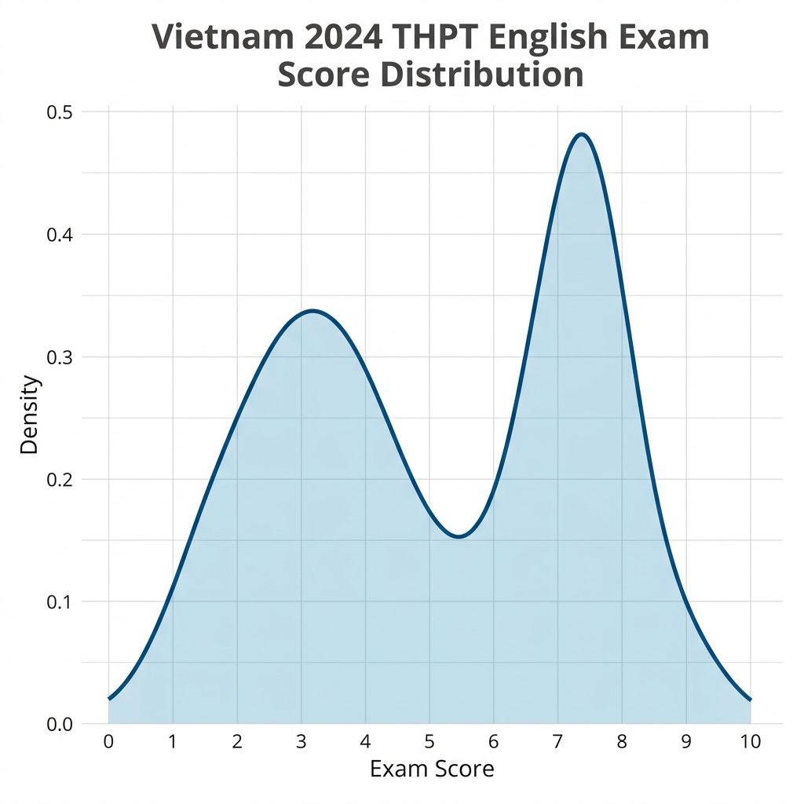
Fig. 17 Bimodal distribution of the 2024 THPT English exam scores.#
A common hypothesis is that these two peaks represent two distinct student demographics: rural and urban areas. Let’s test this hypothesis.
Hypothesis 1: Classification by Region (Urban vs. Rural)#
To test this, we divide the data into two groups: major metropolitan cities (urban centers) and the remaining provinces (primarily rural regions).
{kind=link}
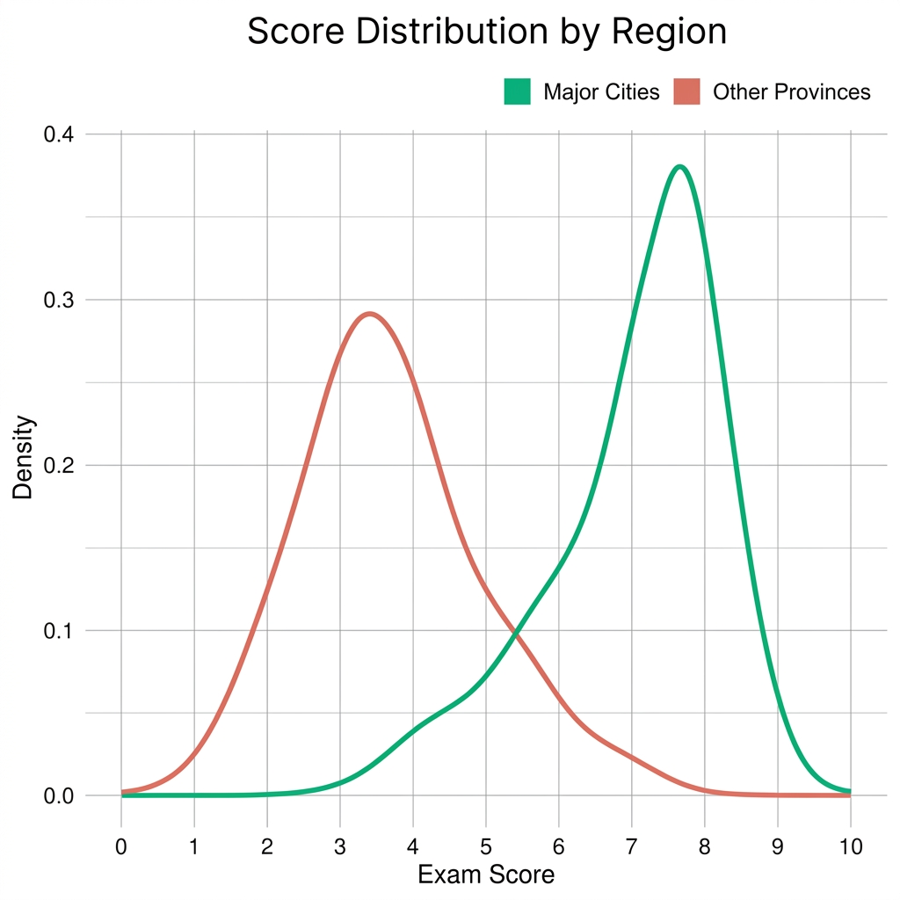
Fig. 18 Comparison of score distributions: Major Cities vs. Other Provinces.#
Comparing the histograms and Kernel Density Estimation (KDE) curves reveals that scores in major cities are significantly shifted to the right compared to other provinces.
To verify if this difference is statistically significant, we perform an independent two-sample t-test:
T-statistic: \(122.39\)
P-value: \(0.0\)
Since the p-value is effectively \(0.0\) (far below the significance threshold \(\alpha = 0.05\)), we reject the null hypothesis \(H_0\) (which assumes no difference in mean scores). This confirms that geographical region has a highly significant effect on foreign language exam scores.
Hypothesis 2: Impact of Wealth (Provincial GRDP)#
We also analyze whether provincial wealth, measured by Gross Regional Domestic Product (GRDP), influences exam scores. We split the provinces into two groups: high GRDP and low GRDP.
{kind=link}
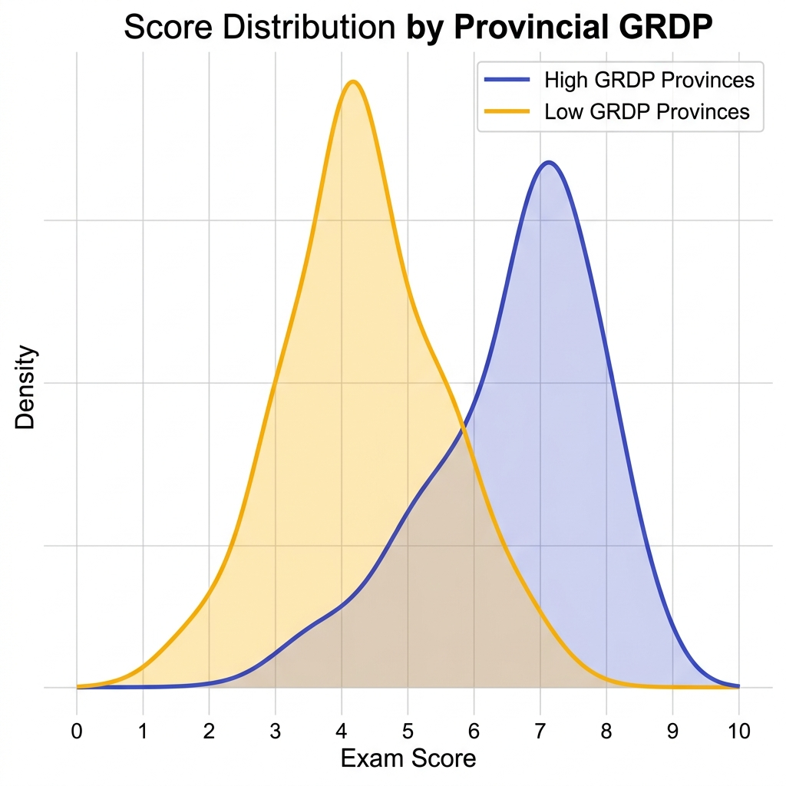
Fig. 19 Comparison of score distributions: High GRDP vs. Low GRDP Provinces.#
The KDE curves show a clear distinction between the two groups. To test the significance, we perform another independent t-test:
T-statistic: \(128.67\)
P-value: \(0.0\)
The t-statistic of \(128.67\) and a p-value of \(0.0\) lead us to reject \(H_0\). This demonstrates that economic development and provincial wealth (GRDP) are strongly associated with higher student performance on the foreign language exam.
Stochastic Processes & Markov Chains#
Up until now, we have looked at static random variables (independent of time). However, in the real world, many systems change continuously over time in a random manner: stock prices, the weather, the position of a pollen grain in water, or the sequence of words generated by an LLM.
A Stochastic Process is a collection of random variables indexed by time:
This chapter introduces the core stochastic process models widely used in Machine Learning: Markov Chains, Random Walks, and their applications.
1. The Markov Property#
A discrete-time stochastic process \(\{X_0, X_1, X_2, \dots\}\) has the Markov Property (or memoryless property) if the conditional probability distribution of future states depends only upon the present state, not on the path of past states:
In plain terms: “The future depends only on the present, not on the past.”
2. Transition Matrix (\(P\))#
If a system has \(n\) distinct states, we define the probability of transitioning from state \(i\) to state \(j\) as \(P_{ij}\). We can group these probabilities into an \(n \times n\) matrix called the Transition Matrix (or Stochastic Matrix):
Important Properties of \(P\)#
Non-negativity: Every element is a probability, so \(P_{ij} \ge 0\).
Sum of Outgoing Probabilities: The sum of probabilities in each row (representing transitions from a given state to all possible next states, including itself) must equal 1:
\[ \sum_{j} P_{ij} = 1 \quad \forall i \]
3. State Transition Diagrams#
A Markov Chain can be represented as a directed graph where nodes are states and edges represent transition probabilities.

Fig. 20 State transition diagram for a three-state web browsing model (Pages A, B, and C).#
In the web browsing model above, the transition matrix is defined as:
Rows represent the starting page.
Columns represent the destination page.
Sum Rule check (Row A): \(P_{AA} + P_{AB} + P_{AC} = 0.2 + 0.6 + 0.2 = 1.0\).
4. State Vector Update over Time#
Let \(\pi^{(t)}\) be a row vector representing the probability distribution of the system’s states at time \(t\):
To compute the probability distribution at the next time step, we perform a vector-matrix multiplication:
By induction, the state probability vector after \(k\) steps is:
Multi-Step Calculation Example#
Suppose a user starts browsing and is definitely on Page B at \(t = 0\):
At step 1 (\(t = 1\)):
\[\begin{split} \pi^{(1)} = \pi^{(0)} P = \begin{bmatrix} 0 & 1 & 0 \end{bmatrix} \begin{bmatrix} 0.2 & 0.6 & 0.2 \\ 0.1 & 0.5 & 0.4 \\ 0.2 & 0.3 & 0.5 \end{bmatrix} = \begin{bmatrix} 0.1 & 0.5 & 0.4 \end{bmatrix} \end{split}\]
5. Stationary Distribution (\(\pi\))#
As \(t \to \infty\), many Markov Chains reach a steady state where the probability distribution across states no longer changes. This limiting distribution is called the Stationating Distribution (\(\pi\)):
Or represented as a linear system:
Analytical Solution#
To find a unique probability vector, we must combine the system of equations with the Normalization Constraint (since the sum of all state probabilities must equal 1):
Expanding the matrix multiplication \(\pi P = \pi\), we get:
\(0.2 \pi_A + 0.1 \pi_B + 0.2 \pi_C = \pi_A \implies 0.1 \pi_B + 0.2 \pi_C = 0.8 \pi_A \implies \pi_B + 2\pi_C = 8\pi_A\)
\(0.6 \pi_A + 0.5 \pi_B + 0.3 \pi_C = \pi_B \implies 0.6 \pi_A + 0.3 \pi_C = 0.5 \pi_B\)
From (1), we express \(\pi_B = 8\pi_A - 2\pi_C\). Substituting this into (2):
Substituting \(\pi_C\) back to find \(\pi_B\):
Using the normalization constraint \(\pi_A + \pi_B + \pi_C = 1\):
Solving for the rest of the states:
Thus, the stationary distribution is:
Note
Note on Convergence (Ergodicity): A Markov Chain is guaranteed to converge to a unique stationary distribution regardless of the initial starting state \(\pi^{(0)}\) if the chain is Ergodic. An ergodic Markov Chain must be:
Irreducible: It is possible to get from any state to any other state (all states communicate).
Aperiodic: The return times to any state do not follow a fixed periodic cycle.
6. Eigenvalues and Eigenvectors Connection#
In Linear Algebra, the eigenvector equation for a square matrix \(M\) is:
Comparing this to our stationary distribution equation \(\pi P = \pi\), we find that:
The stationary distribution vector \(\pi\) is the Left Eigenvector of the transition matrix \(P\).
The corresponding Eigenvalue is \(\lambda = 1\).
In any stochastic transition matrix, the largest eigenvalue is always \(1\), guaranteeing the existence of a stationary distribution.
7. Random Walks#
A Random Walk is a special case of a Markov Chain, describing a path consisting of a succession of random steps.
The simplest example is the 1-Dimensional Random Walk: Start at \(X_0 = 0\). At each time step \(t\), you flip a coin:
If Heads: Take one step to the right (\(+1\)).
If Tails: Take one step to the left (\(-1\)).
Your position at step \(t\) is:
(Where \(Z_i \in \{-1, 1\}\)).
Properties#
The expected value of your position is always 0: \(E[X_t] = 0\).
The variance increases linearly over time: \(Var(X_t) = t\). This means the standard deviation is proportional to \(\sqrt{t}\), implying that the longer you walk, the further away from the origin you are likely to drift.
Visualizing a Random Walk with Python#
import numpy as np
import matplotlib.pyplot as plt
np.random.seed(42)
# Simulate 3 Random Walks, each consisting of 1000 steps
n_steps = 1000
n_walks = 3
# Generate random steps +1 or -1
steps = np.random.choice([-1, 1], size=(n_steps, n_walks))
# Calculate the cumulative position
positions = np.cumsum(steps, axis=0)
# Add the starting position 0 at the beginning
positions = np.vstack([np.zeros((1, n_walks)), positions])
# Plot the graph
plt.figure(figsize=(10, 5))
plt.plot(positions)
plt.title("Simulating a 1D Random Walk")
plt.xlabel("Time (t)")
plt.ylabel("Position (X_t)")
plt.grid(True)
plt.show()
8. Application: Google PageRank Algorithm#
PageRank models a “Random Surfer” who clicks on links on the web.
To prevent the surfer from getting trapped in pages with no outgoing links (dead ends) or circular loops, PageRank introduces a Damping Factor (\(d \approx 0.85\)):
With probability \(d\), the surfer clicks a random link on the current page.
With probability \(1 - d\), the surfer gets bored and jumps to a completely random page on the entire web.
Mathematical Formulation#
Given an adjacency matrix \(A\) where \(A_{ij} = 1\) if page \(i\) links to page \(j\), we construct a transition probability matrix \(M\) where \(M_{ij} = \frac{A_{ij}}{\text{out-degree}(i)}\).
The PageRank Google Matrix \(G\) is defined as:
where \(N\) is the total number of pages and \(\mathbf{E}\) is an \(N \times N\) matrix of all ones.
Python Simulation: PageRank Calculation#
Here is how to calculate PageRank scores for a 4-page web graph using NumPy and NetworkX:
import numpy as np
import networkx as nx
# 1. Define Web Graph Structure (4 Pages: A, B, C, D)
edges = [('A', 'B'), ('A', 'C'), ('B', 'D'), ('C', 'A'), ('C', 'B'), ('C', 'D'), ('D', 'C')]
nodes = ['A', 'B', 'C', 'D']
N = len(nodes)
# 2. Build Transition Matrix M
M = np.zeros((N, N))
node_to_idx = {node: i for i, node in enumerate(nodes)}
for u, v in edges:
M[node_to_idx[u], node_to_idx[v]] = 1
# Normalize rows so each row sums to 1
row_sums = M.sum(axis=1, keepdims=True)
M = M / row_sums
# 3. Apply Damping Factor (d = 0.85) to create Google Matrix G
d = 0.85
E = np.ones((N, N))
G = d * M + ((1 - d) / N) * E
# 4. Power Iteration Method to find Stationary Distribution
pagerank = np.ones(N) / N # Initial uniform distribution
for step in range(100):
pagerank = pagerank.dot(G)
print("PageRank Scores (Power Iteration):")
for node, score in zip(nodes, pagerank):
print(f"Page {node}: {score:.4f}")
# 5. Verification using NetworkX library
G_nx = nx.DiGraph(edges)
pr_nx = nx.pagerank(G_nx, alpha=0.85)
print("\nPageRank Scores (NetworkX Verification):")
for node, score in sorted(pr_nx.items()):
print(f"Page {node}: {score:.4f}")
Introduction to Optimization#
Optimization is the process of finding the best solution from a set of feasible alternatives. A mathematical optimization problem has the general form:
Where:
\(x = (x_1, \dots, x_n)\) is the optimization variable.
\(f_0: \mathbb{R}^n \to \mathbb{R}\) is the objective function.
\(f_i(x) \leq b_i\) are the constraint functions.
1. Least-Squares & Linear Programming#
Depending on the mathematical properties of \(f_0\) and \(f_i\), optimization problems are classified into several major families.
Least-Squares#
A least-squares problem has no constraints and an objective function that is a sum of squares:
This problem can be solved analytically (\(x = (A^T A)^{-1} A^T b\)). It is the foundation of Linear Regression in machine learning.
Linear Programming (LP)#
In Linear Programming, both the objective and constraint functions are linear:
LPs do not have analytical solutions but can be solved extremely fast using algorithms like the Simplex method or Interior-point methods.
2. Convex vs. Non-linear Optimization#
The boundary in optimization is not between linearity and non-linearity, but between convexity and non-convexity.
Property |
Convex Optimization |
Non-convex / Nonlinear Optimization |
|---|---|---|
Geometry |
objective function is convex, constraint set is convex. |
objective or constraints are non-convex (curves bend down). |
Minima |
Any local minimum is a global minimum. |
Many local minima and saddle points exist. |
Solvability |
Can be solved efficiently, reliably, and globally. |
Hard to solve; algorithms often get stuck in local minima. |
Illustrative Examples#
Example 1: Convex Optimization — Least Squares (Linear Regression)#
In linear regression, we seek a weight vector \(w\) that minimizes the sum of squared differences between predictions and target labels:
Analysis: The Hessian matrix \(\nabla^2 f(w) = 2X^T X\) is positive semi-definite, which mathematically guarantees that \(f(w)\) is a convex function. Geometrically, the loss surface is a single bowl-shaped valley. Any local minimum found by gradient descent is guaranteed to be the unique global minimum, making this problem highly stable and solvable in polynomial time.
Example 2: Non-Convex Optimization — Deep Neural Network Training#
When training a neural network, the objective is to optimize the weights \(\theta\) of a multi-layer network:
Analysis: Because the network function \(f(x_i; \theta)\) consists of nested non-linear activation functions (like ReLU or Sigmoid) multiplied by weight matrices, the resulting loss surface \(\mathcal{L}(\theta)\) is highly non-convex. It features a landscape filled with countless local minima, saddle points, and plateaus. Algorithms like Stochastic Gradient Descent (SGD) can easily get trapped in sub-optimal local basins or spend long periods escaping saddle points, meaning there is no guarantee of finding the global minimum.
Exercises#
Exercise 1
Classify the following optimization problem (find if it is LP, Least-Squares, or Nonlinear):
Solution — Exercise 1
This objective is a sum of squared linear terms:
Where \(A = \begin{bmatrix} 3 & 1 \\ 1 & -2 \end{bmatrix}\) and \(b = \begin{bmatrix} 5 \\ -1 \end{bmatrix}\). Therefore, this is a Least-Squares problem.
Convex Sets & Functions#
Convex Sets#
A set \(C \subseteq \mathbb{R}^n\) is convex if the line segment between any two points in \(C\) lies entirely in \(C\). That is, for any \(x_1, x_2 \in C\) and \(0 \leq \theta \leq 1\):
Convex Functions#
A function \(f: \mathbb{R}^n \to \mathbb{R}\) is convex if its domain \(\text{dom } f\) is a convex set and for all \(x, y \in \text{dom } f\), \(0 \leq \theta \leq 1\):
1. Basic Properties and Examples#
First-order Condition for Convexity#
A differentiable function \(f\) is convex if and only if \(\text{dom } f\) is convex and:
Geometrically, the tangent plane at any point acts as a global lower bound.
Second-order Condition for Convexity#
A twice-differentiable function \(f\) is convex if and only if its Hessian matrix is positive semi-definite:
Important Examples:#
Exponential: \(e^{ax}\) is convex on \(\mathbb{R}\).
Powers: \(x^p\) is convex on \(\mathbb{R}_{++}\) for \(p \geq 1\) or \(p \leq 0\).
Negative Logarithm: \(-\ln(x)\) is convex on \(\mathbb{R}_{++}\).
Max function: \(\max(x_1, \dots, x_n)\) is convex on \(\mathbb{R}^n\).
2. Operations that Preserve Convexity#
Nonnegative weighted sum: \(f = w_1 f_1 + w_2 f_2\) is convex if \(f_1, f_2\) are convex and \(w_1, w_2 \geq 0\).
Composition with affine mapping: \(g(x) = f(Ax + b)\) is convex if \(f\) is convex.
Pointwise maximum: If \(f_s(x)\) is convex for each \(s \in \mathcal{S}\), then \(f(x) = \sup_{s \in \mathcal{S}} f_s(x)\) is convex.
Partial Minimization: If \(g(x, y)\) is convex in \((x, y)\) and \(C\) is a convex set, then \(f(x) = \inf_{y \in C} g(x, y)\) is convex.
3. The Conjugate Function#
Let \(f: \mathbb{R}^n \to \mathbb{R}\). The conjugate function \(f^*: \mathbb{R}^n \to \mathbb{R}\) (also known as the Fenchel conjugate) is defined as:
The conjugate function \(f^*\) is always convex, even if the original function \(f\) is not convex, because it is the pointwise supremum of a family of affine functions of \(y\).
Example:#
For \(f(x) = \frac{1}{2} x^T Q x\) where \(Q\) is symmetric positive definite:
4. Quasiconvex Functions#
A function \(f: \mathbb{R}^n \to \mathbb{R}\) is quasiconvex (or unimodal) if its domain and all its sublevel sets are convex:
Modified Jensen’s Inequality#
A function \(f\) is quasiconvex if and only if its domain is convex and for any \(x, y \in \text{dom } f\) and \(0 \leq \theta \leq 1\):
First-order Condition for Quasiconvexity#
A differentiable function \(f\) with convex domain is quasiconvex if and only if:
This means that if we move in a direction that decreases the function value, the directional derivative must be negative or zero.
Key Property: Sums#
Unlike convex functions, the sum of two quasiconvex functions is not necessarily quasiconvex. For example, the functions:
are both quasiconvex on \(\mathbb{R}\), but their sum:
is not (it is not unimodal and has multiple local extrema on \(\mathbb{R}\)).
5. Log-Concave and Log-Convex Functions#
A function \(f: \mathbb{R}^n \to \mathbb{R}\) is log-concave if \(f(x) > 0\) for all \(x \in \text{dom } f\) and the logarithm \(\ln f(x)\) is a concave function:
Similarly, \(f\) is log-convex if \(\ln f(x)\) is convex.
Second-order Condition for Log-Concavity#
A twice-differentiable function \(f\) with convex domain is log-concave if and only if:
Important Examples#
Powers: \(f(x) = x^a\) on \(\mathbb{R}_{++}\) is log-convex for \(a \leq 0\), and log-concave for \(a \geq 0\).
Normal Distribution: The Gaussian PDF is log-concave.
Cumulative Gaussian Distribution: The cumulative distribution function is log-concave:
\[\Phi(x) = \frac{1}{\sqrt{2\pi}} \int_{-\infty}^x e^{-u^2/2} \, du\]
Properties and Integration#
Product & Sum Rules:
The product of log-concave functions is log-concave.
The sum of log-concave functions is not always log-concave.
Integration Theorem: If \(f: \mathbb{R}^n \times \mathbb{R}^m \to \mathbb{R}\) is log-concave, then the marginal integral function:
\[g(x) = \int f(x, y) \, dy\]is log-concave.
Consequences:
Convolution: The convolution of two log-concave functions is log-concave:
\[(f * g)(x) = \int f(x-y)g(y) \, dy\]Probability over Convex Sets: If \(y\) is a random variable with a log-concave PDF, the probability that \(x+y\) lies in a convex set \(C\) is log-concave in \(x\):
\[f(x) = \text{prob}(x+y \in C)\]Yield Function Example: In manufacturing, the yield function (where \(x\) represents nominal parameters, \(w\) is random variation, and \(S\) is the set of acceptable values) is log-concave:
\[Y(x) = \text{prob}(x+w \in S)\]Therefore, the yield regions \(\{x \mid Y(x) \geq \alpha\}\) are convex sets.
6. Convexity with Respect to Generalized Inequalities#
Let \(K \subseteq \mathbb{R}^m\) be a proper cone.
A function \(f: \mathbb{R}^n \to \mathbb{R}^m\) is \(K\)-convex if for all \(x, y \in \text{dom } f\) and \(0 \leq \theta \leq 1\):
This maps the classical definition of convexity to vector-valued functions using cone-based ordering relations.
Example: Matrix Square#
The matrix square function \(f: \mathbb{S}^m \to \mathbb{S}^m\), defined as \(f(X) = X^2\), is \(\mathbb{S}^m_+\)-convex.
Proof: For any fixed vector \(z \in \mathbb{R}^m\), we can evaluate the scalar function:
Since the Euclidean norm is convex, \(g(X) = \| X z \|_2^2\) is a convex function of \(X\). Therefore, for all \(X, Y \in \mathbb{S}^m\) and \(0 \leq \theta \leq 1\):
Since this inequality holds for all vectors \(z \in \mathbb{R}^m\), by definition of the positive semidefinite cone \(\mathbb{S}^m_+\), it implies:
This proves that \(f(X) = X^2\) is indeed \(\mathbb{S}^m_+\)-convex.
Exercises#
Exercise 1
Find the conjugate function \(f^*(y)\) of the negative entropy function:
Solution — Exercise 1
The conjugate is defined as \(f^*(y) = \sup_{x > 0} (yx - x \ln x)\). To find the supremum, take the derivative with respect to \(x\) and set to zero:
Substitute \(x^*\) back into the equation:
Thus, the conjugate function is \(f^*(y) = e^{y-1}\).
Convex Optimization Problems#
1. General Optimization Problems#
A general mathematical optimization problem has the form:
Where:
\(x \in \mathbb{R}^n\) is the optimization variable.
\(f_0(x)\) is the objective function.
\(f_i(x) \leq 0\) are the inequality constraints.
\(h_i(x) = 0\) are the equality constraints.
The set of points for which the objective and all constraint functions are defined is the domain \(\mathcal{D}\). A point \(x \in \mathcal{D}\) is feasible if it satisfies all constraints. The optimal value \(p^*\) is defined as:
2. Convex Optimization Problems#
A convex optimization problem is one of the form:
Where:
The objective function \(f_0\) must be convex.
The inequality constraint functions \(f_1, \dots, f_m\) must be convex.
The equality constraints must be affine (\(A x = b\)).
Key Property: Local Minima are Global#
For a convex optimization problem, any local optimal point is also globally optimal.
3. Linear Optimization Problems (LP)#
When both the objective and constraint functions are affine, the problem is called a Linear Program (LP):
LPs are widely used in operations research, logistics, and resource allocation.
4. Quadratic Optimization Problems (QP & QCQP)#
A Quadratic Program (QP) has a convex quadratic objective and affine constraints:
Where \(P\) is symmetric positive semi-definite (\(P \succeq 0\)).
Quadratically Constrained Quadratic Program (QCQP)#
If the inequality constraints are also quadratic, the problem is a QCQP:
where \(P_0, P_1, \dots, P_m \succeq 0\). QCQPs are used in robust design and signal processing.
5. Second-Order Cone Programming - SOCP#
A Second-Order Cone Program (SOCP) is a generalization of QPs and QCQPs. It allows constraints that require a vector to lie within a second-order cone (also known as the Lorentz or ice-cream cone):
where \(x \in \mathbb{R}^n\), \(A_i \in \mathbb{R}^{n_i \times n}\), \(b_i \in \mathbb{R}^{n_i}\), \(c_i \in \mathbb{R}^n\), and \(d_i \in \mathbb{R}\).
Second-Order Cone Constraint#
The constraint \(\| A_i x + b_i \|_2 \leq c_i^T x + d_i\) requires the affine combination \((A_i x + b_i, c_i^T x + d_i)\) to lie in the second-order cone:
SOCPs are widely applied in portfolio optimization with tracking error constraints, filter design, and robust linear programming under ellipsoidal uncertainty.
6. Semidefinite Programming - SDP#
A Semidefinite Program (SDP) is an optimization problem where the variables are symmetric matrices constrained to be positive semidefinite:
where \(x \in \mathbb{R}^n\), and \(F_0, F_1, \dots, F_n\) are symmetric matrices in \(\mathbb{S}^k\) (the space of symmetric \(k \times k\) matrices).
Linear Matrix Inequality (LMI)#
The constraint \(x_1 F_1 + x_2 F_2 + \dots + x_n F_n \preceq F_0\) is called a Linear Matrix Inequality (LMI). The symbol \(\preceq\) denotes matrix inequality, meaning:
SDPs generalize LPs and SOCPs. They are foundational in control theory (Lyapunov stability), structural design, and machine learning (kernel matrix learning and maximum variance unfolding).
7. Geometric Programming (GP)#
A Geometric Program (GP) is an optimization problem involving objective and constraint functions that are posynomials.
Monomials and Posynomials#
A monomial \(f: \mathbb{R}^n \to \mathbb{R}\) is a function of the form:
\[f(x) = c x_1^{a_1} x_2^{a_2} \dots x_n^{a_n}\]where \(c > 0\) and \(a_i \in \mathbb{R}\).
A posynomial is a sum of monomials:
\[f(x) = \sum_{k=1}^K c_k x_1^{a_{1k}} x_2^{a_{2k}} \dots x_n^{a_{nk}}\]
Standard Geometric Program#
A standard GP has the form:
where \(f_0, \dots, f_m\) are posynomials, and \(h_1, \dots, h_p\) are monomials.
Convex Transformation#
GPs are non-convex in their original form. However, we can transform them into convex problems by introducing a change of variables \(y_i = \ln(x_i)\) and taking the natural logarithm of the objective and constraints. This results in the transformed problem:
Since \(\tilde{f}_i\) are log-sum-exp functions (which are convex), the transformed problem is a convex optimization problem.
8. Vector Optimization#
In many practical situations, we want to optimize multiple objectives simultaneously (multicriterion optimization):
Since it is usually impossible to minimize all objectives at once, we look for Pareto optimal solutions. A feasible point \(x\) is Pareto optimal if there is no other feasible point \(y\) that performs better or equal in all objectives and strictly better in at least one.
Exercises#
Exercise 1
Formulate the following minimization problem as a standard Quadratic Program (QP):
Solution — Exercise 1
To express the problem in the standard QP form:
we follow these mathematical steps:
Step 1: Expand the Objective Function Expand the algebraic terms in the objective function \(f(x)\):
Step 2: Extract Matrix Parameters We match the expanded objective to the quadratic matrix form \(\frac{1}{2} x^T P x + q^T x + r\), where \(x = \begin{bmatrix} x_1 \\ x_2 \end{bmatrix}\):
Hessian Matrix (\(P\)):
\[\begin{split}P = \begin{bmatrix} 2 & -2 \\ -2 & 8 \end{bmatrix}\end{split}\](Note that \(\frac{1}{2} x^T P x = x_1^2 - 2x_1x_2 + 4x_2^2\)).
Linear Term Vector (\(q\)):
\[\begin{split}q = \begin{bmatrix} 0 \\ -12 \end{bmatrix}\end{split}\]Constant Scalar (\(r\)):
\[r = 12\]
Step 3: Verify Convexity For a valid QP, \(P\) must be positive semidefinite (\(P \succeq 0\)). The eigenvalues of \(P\) are found by solving \(\det(P - \lambda I) = 0\):
Since both eigenvalues are strictly positive (\(\lambda > 0\)), \(P\) is symmetric positive definite (\(P \succ 0\)), guaranteeing that the objective function is strictly convex.
Step 4: Convert Constraints to Standard Form The inequality constraint \(x_1 + x_2 \geq 1\) must be converted to the standard form \(Gx \leq h\):
Thus, we identify:
Conclusion The problem is successfully formulated as a standard convex Quadratic Program (QP).
Duality & KKT Conditions#
Duality allows us to view an optimization problem from two perspectives: the Primal problem (original variables) and the Dual problem (constraints coefficients). This page covers Lagrange Duality and the famous Karush-Kuhn-Tucker (KKT) optimality conditions.
1. The Lagrange Dual Function#
For the primal problem:
We define the Lagrangian \(L: \mathbb{R}^n \times \mathbb{R}^m \times \mathbb{R}^p \to \mathbb{R}\) by associating Lagrange multipliers \(\lambda_i \geq 0\) and \(\nu_i\) with the constraints:
The Lagrange dual function \(g(\lambda, \nu)\) is the minimum value of the Lagrangian over \(x\):
The Lower Bound Property#
For any \(\lambda \geq 0\) and any \(\nu\), the dual function gives a lower bound on the optimal value \(p^*\) of the primal problem:
2. Strong Duality & Weak Duality#
The Lagrange dual problem is to find the best lower bound:
Let \(d^*\) be the optimal value of the dual problem.
Weak Duality: \(d^* \leq p^*\) always holds (even for non-convex problems).
Strong Duality: \(d^* = p^*\) holds (usually for convex problems satisfying Slater’s constraint qualification).
3. Karush-Kuhn-Tucker (KKT) Conditions#
For any optimization problem with differentiable objective and constraint functions for which strong duality holds, any primal-optimal \(x^*\) and dual-optimal \((\lambda^*, \nu^*)\) must satisfy the KKT conditions:
Primal Feasibility:
\[f_i(x^*) \leq 0, \quad i=1,\dots,m\]\[h_i(x^*) = 0, \quad i=1,\dots,p\]Dual Feasibility:
\[\lambda^* \succeq 0\]Complementary Slackness:
\[\lambda_i^* f_i(x^*) = 0, \quad i=1,\dots,m\]Lagrangian Stationarity (Gradient is zero):
\[\nabla f_0(x^*) + \sum_{i=1}^m \lambda_i^* \nabla f_i(x^*) + \sum_{i=1}^p \nu_i^* \nabla h_i(x^*) = 0\]
If the primal problem is convex, the KKT conditions are not only necessary but also sufficient for optimality.
Exercises#
Exercise 1
Explain the meaning of Complementary Slackness (\(\lambda_i^* f_i(x^*) = 0\)).
Solution — Exercise 1
Complementary slackness states that for each inequality constraint \(f_i(x) \leq 0\):
If the constraint is inactive at the optimum (\(f_i(x^*) < 0\)), then the multiplier must be zero (\(\lambda_i^* = 0\)).
If the multiplier is positive (\(\lambda_i^* > 0\)), then the constraint must be active (\(f_i(x^*) = 0\)).
This is the mathematical backing for Support Vectors in SVMs, where only data points on the boundary (active constraints) have non-zero Lagrange weights.
Gradient Descent & Hessian Curvature#
In continuous optimization, we find minimum or maximum values of functions using derivatives. This page covers Gradient Descent (first-order optimization) and the Hessian matrix (second-order optimization).
1. Local Extrema & Second Derivative Test#
To find the minimum or maximum of a multivariable function \(f(x, y)\), we start by finding the critical points where the gradient is zero:
Once we find a critical point, we use the Hessian matrix \(\mathbf{H}\) (which captures the curvature of the function) to determine its nature:
Using the eigenvalues of the Hessian matrix at the critical point:
Local Minimum: If \(\mathbf{H}\) is positive-definite (all eigenvalues \(>0\)). The curve bends upwards.
Local Maximum: If \(\mathbf{H}\) is negative-definite (all eigenvalues \(<0\)). The curve bends downwards.
Saddle Point: If \(\mathbf{H}\) has both positive and negative eigenvalues. The curve bends up in one direction and down in another.
2. General Descent & Gradient Descent#
General Descent Method#
To minimize a convex function \(f\), we use a general iterative descent method. Given a starting point \(x \in \text{dom } f\), the algorithm repeats the following steps:
Determine descent direction: Find a search direction \(\Delta x\) (for gradient descent, \(\Delta x = -\nabla f(x)\)).
Line Search: Choose a step size \(t > 0\) using exact or backtracking line search.
Update: Set \(x := x + t \Delta x\).
This process repeats until a stopping criterion is satisfied, usually of the form:
For strongly convex functions, the convergence satisfies \(f(x^{(k)}) - p^* \leq c^k (f(x^{(0)}) - p^*)\), where \(c \in (0, 1)\) depends on the minimum/maximum eigenvalues of the Hessian, the starting point, and the line search method.
Gradient Descent Step#
Since the gradient \(\nabla f\) points in the direction of the steepest increase, updating our variables in the opposite direction (\(-\nabla f\)) moves us down toward the minimum:
Where \(\alpha\) is the learning rate (step size).
Convergence Behavior on Ill-Conditioned Functions#
When the contour lines of a function are highly elongated (i.e., the Hessian has a very large condition number \(\gamma \gg 1\)), the gradient does not point directly towards the optimum. As a result, Gradient Descent exhibits a zig-zagging behavior and converges very slowly.
For example, minimizing the quadratic function \(f(x) = \frac{1}{2}(x_1^2 + \gamma x_2^2)\) starting from \(x^{(0)} = (\gamma, 1)\) using exact line search yields the coordinates at step \(k\):
If \(\gamma = 10\), convergence requires many small, zig-zagging steps to reach the optimum:
{kind=link}
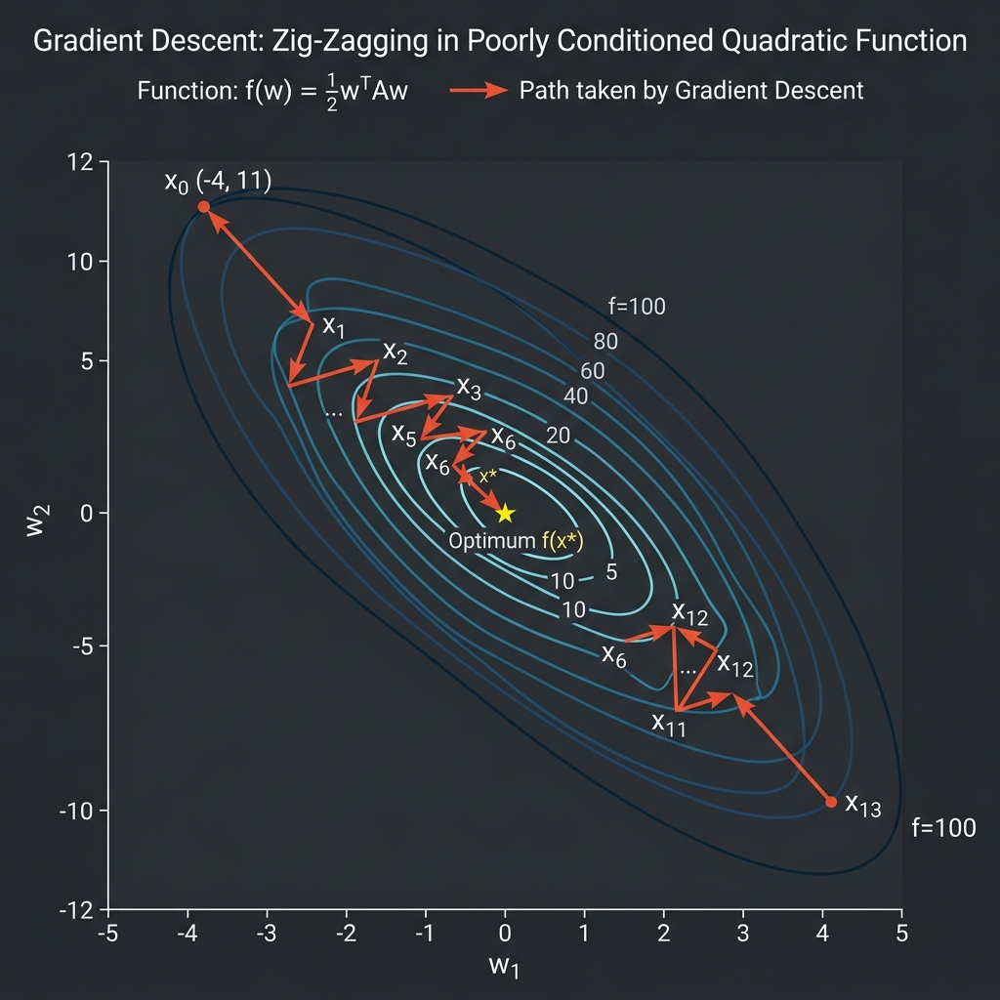
Line Search Strategies (Backtracking vs Exact)#
Choosing the correct step size \(\alpha\) at each iteration is crucial:
Exact Line Search: Minimizes the function along the search direction \(p_k\). At each step, the next search direction is orthogonal to the previous one (\(\nabla f(x_{k+1})^T \nabla f(x_k) = 0\)).
Backtracking Line Search: An inexact line search method that starts with a large step size and decreases it exponentially (scaled by \(\beta\)) until it satisfies the Armijo condition. It is computationally cheaper and highly effective in practice:
{kind=link}
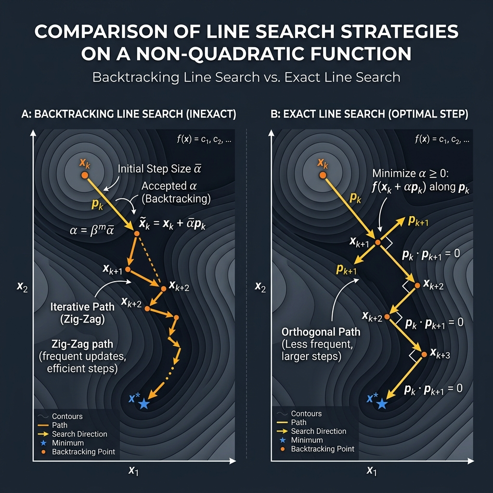
Linear Convergence on Semilog Plots#
For strongly convex functions, the error \(f(x^{(k)}) - p^*\) decreases exponentially with \(k\). This behavior is called linear convergence. When plotted on a semilogarithmic scale (where the y-axis is logarithmic and the x-axis is linear), this exponential decay appears as a straight line:
{kind=link}
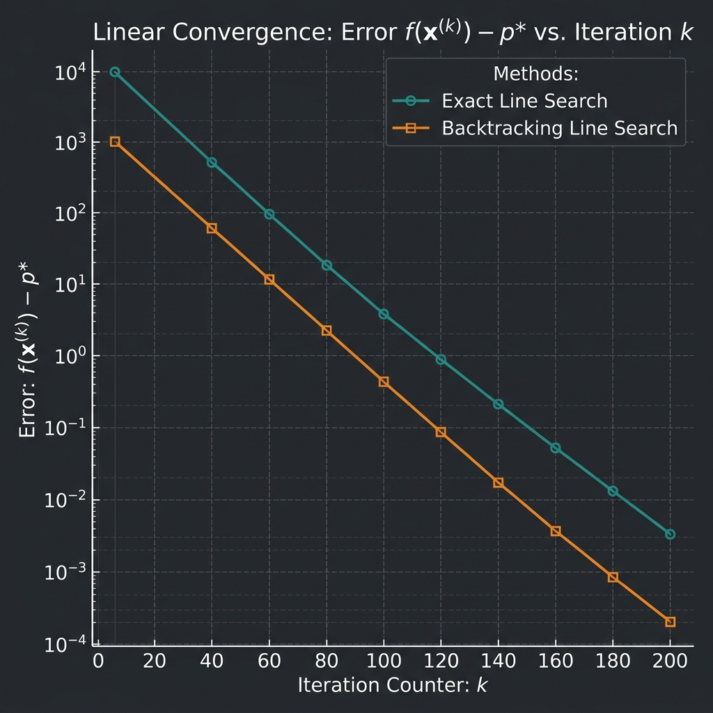
3. Steepest Descent Method (General Norms)#
The Steepest Descent Method generalizes gradient descent by defining the descent step with respect to a general norm \(\|\cdot\|\).
Normalized Steepest Descent Direction#
The normalized steepest descent direction \(\Delta x_{\text{nsd}}\) is defined as the step of unit norm that minimizes the directional derivative of \(f\):
The unnormalized steepest descent step is scaled by the dual norm: \(\Delta x_{\text{sd}} = \|\nabla f(x)\|_* \Delta x_{\text{nsd}}\), which satisfies \(\nabla f(x)^T \Delta x_{\text{sd}} = -\|\nabla f(x)\|_*^2\).
Steepest Descent Directions for Different Norms#
Euclidean Norm (\(\|\cdot\|_2\)): The steepest descent direction is the negative gradient:
\[\Delta x_{\text{sd}} = -\nabla f(x)\]Quadratic Norm (\(\|x\|_P = (x^T P x)^{1/2}\)): The steepest descent direction is:
\[\Delta x_{\text{sd}} = -P^{-1} \nabla f(x)\]This is equivalent to performing standard gradient descent after a coordinate transformation (change of variables) \(\bar{x} = P^{1/2} x\). By choosing \(P \approx \nabla^2 f(x^*)\), we can align the coordinate system to eliminate ill-conditioning and dramatically speed up convergence.
\(\ell_1\)-Norm (\(\|\cdot\|_1\)): The steepest descent step updates only a single coordinate direction:
\[\Delta x_{\text{sd}} = -\frac{\partial f(x)}{\partial x_i} e_i\]where \(i\) is the index corresponding to the largest component of the gradient: \(|\partial f(x)/\partial x_i| = \|\nabla f(x)\|_\infty\). This is the basis of coordinate descent methods.
{kind=link}
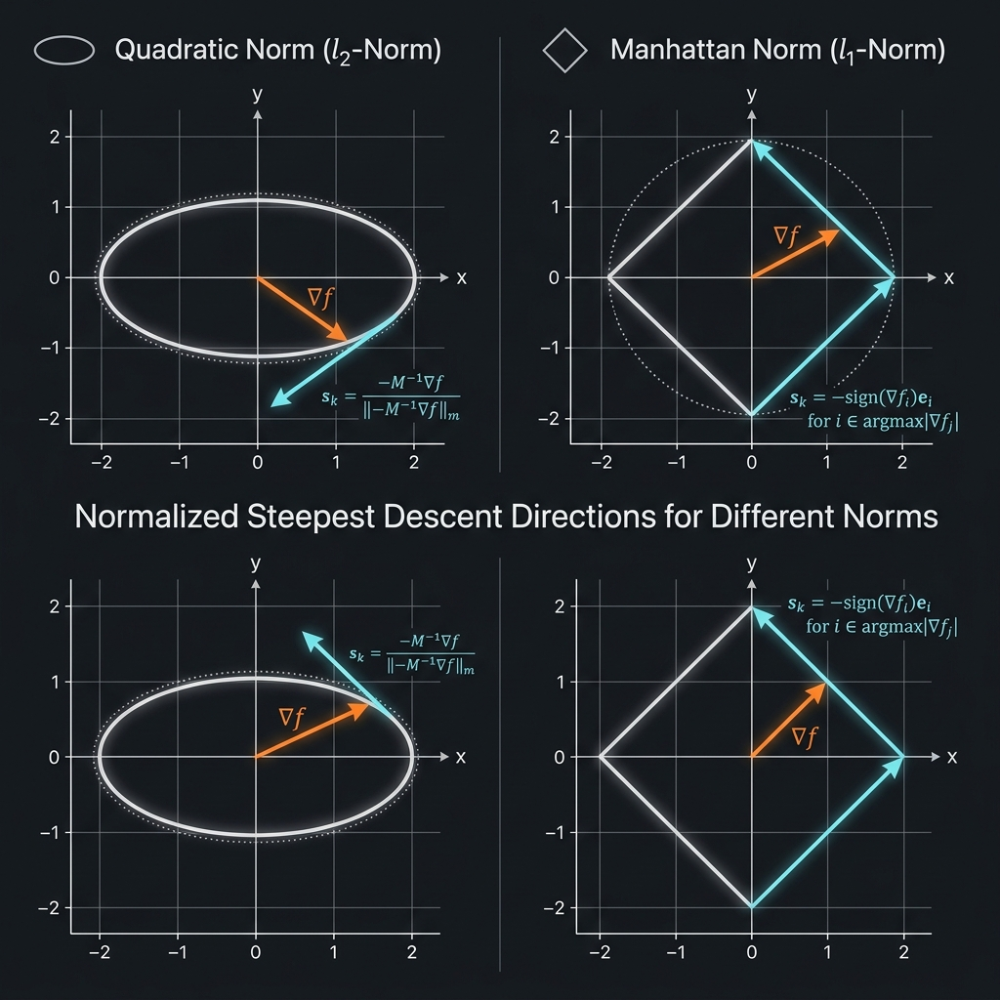
4. Quadratic Optimization with SymPy#
Let’s minimize the function \(f(x) = x^2 - 4x + 4\) (which has a minimum at \(x=2\), where the gradient is \(2x-4\)).
x = 10.0 # Starting point
learning_rate = 0.1
epochs = 20
for epoch in range(epochs):
gradient = 2 * x - 4
x = x - learning_rate * gradient
loss = x**2 - 4*x + 4
print(f"Epoch {epoch+1:02d}: x = {x:.4f}, Loss = {loss:.4f}")
3. Quadratic Optimization with SymPy#
We can use SymPy to find the analytical Hessian and determine the nature of critical points:
import sympy as sp
x, y = sp.symbols('x y')
f = x**2 + y**2 - 4*x - 6*y
# 1. Find critical points by solving Gradient = 0
grad_x = sp.diff(f, x)
grad_y = sp.diff(f, y)
critical_points = sp.solve([grad_x, grad_y], (x, y))
print("Critical Point:", critical_points)
# 2. Compute the Hessian matrix
H = sp.hessian(f, (x, y))
print("\nHessian Matrix:")
sp.pprint(H)
Exercises#
Exercise 1
Perform 3 iterations of Gradient Descent manually for the function \(f(x) = x^2\). Start at \(x_0 = 4\) with a learning rate \(\alpha = 0.1\).
Solution — Exercise 1
The derivative is \(f'(x) = 2x\).
Iteration 1:
\[x_1 = x_0 - \alpha \cdot f'(x_0) = 4 - 0.1(2 \cdot 4) = 4 - 0.8 = 3.2\]Iteration 2:
\[x_2 = x_1 - \alpha \cdot f'(x_1) = 3.2 - 0.1(2 \cdot 3.2) = 3.2 - 0.64 = 2.56\]Iteration 3:
\[x_3 = x_2 - \alpha \cdot f'(x_2) = 2.56 - 0.1(2 \cdot 2.56) = 2.56 - 0.512 = 2.048\]
Optimization Algorithms#
To solve unconstrained and constrained minimization problems, we rely on iterative numerical methods. This page covers Gradient Descent, Newton’s Method, and Interior-point barrier methods.
1. Unconstrained Minimization#
We want to solve:
Where \(f\) is twice differentiable and convex.
Descent Methods#
A descent method produces a sequence of steps \(x^{(k+1)} = x^{(k)} + t^{(k)} \Delta x^{(k)}\) where:
\(\Delta x^{(k)}\) is the step direction (ensuring \(\nabla f(x)^T \Delta x < 0\)).
\(t^{(k)} > 0\) is the step size (learning rate), often calculated using backtracking line search.
Gradient Descent Method#
The search direction is the negative gradient:
Newton’s Method#
Newton’s method incorporates second-order curvature:
Newton’s method converges much faster than gradient descent (quadratic convergence) because it scales the gradient step using the inverse Hessian.
2. Equality & Inequality Constraints (Interior-Point Methods)#
Logarithmic Barrier#
To solve problems with inequality constraints \(f_i(x) \leq 0\), we approximate them using an indicator function, which we smooth using the logarithmic barrier:
As \(f_i(x) \to 0\), the log barrier \(\Phi(x) \to \infty\), preventing the optimization from stepping outside the feasible region.
The Barrier Method#
The Barrier method solves a sequence of unconstrained problems:
for increasing values of \(t > 0\), tracing the central path directly to the global optimum.
3. Python Comparison: Gradient Descent vs. Newton’s Method#
import numpy as np
# Function: f(x) = x^4, f'(x) = 4x^3, f''(x) = 12x^2
# Minimum is at x = 0
# 1. Gradient Descent
x_gd = 2.0
lr = 0.05
for i in range(5):
grad = 4 * x_gd**3
x_gd -= lr * grad
print(f"GD Step {i+1}: x = {x_gd:.4f}")
# 2. Newton's Method
x_newton = 2.0
for i in range(5):
grad = 4 * x_newton**3
hessian = 12 * x_newton**2
x_newton -= grad / hessian # Newton step: - f'/f''
print(f"Newton Step {i+1}: x = {x_newton:.4f}")
Exercises#
Exercise 1
Calculate 1 step of Newton’s method starting at \(x_0 = 2\) for the function \(f(x) = x^3 - 2x^2\).
Solution — Exercise 1
Derivatives:
\(f'(x) = 3x^2 - 4x \implies f'(2) = 3(4) - 4(2) = 4\)
\(f''(x) = 6x - 4 \implies f''(2) = 6(2) - 4 = 8\)
Newton step:
Numerical Algorithms & Interior-Point Methods#
1. Newton’s Method with Equality Constraints#
For unconstrained optimization, Newton’s method uses the second-order Taylor expansion to find the search direction. For problems with equality constraints:
where \(f\) is convex and twice continuously differentiable. We must ensure that the search step keeps the variable feasible (\(A(x + \Delta x) = b\)).
Newton Step under Equality Constraints#
The Newton step \(\Delta x_{nt}\) is obtained by solving the following KKT system of linear equations:
where:
\(\nabla^2 f(x)\) is the Hessian of \(f\).
\(\nabla f(x)\) is the gradient of \(f\).
\(w\) is the vector of optimal Lagrange multipliers for the equality constraints.
This KKT matrix is invertible if \(\nabla^2 f(x)\) is positive definite on the nullspace of \(A\).
2. The Barrier Method#
The Barrier Method (or path-following method) is an interior-point method used to solve convex optimization problems with inequality constraints:
Logarithmic Barrier Function#
We can approximate the inequality constraints using an indicator function, which we smooth using the logarithmic barrier function:
defined on the feasible interior domain \(\text{dom } \Phi = \{x \mid f_i(x) < 0, \, i=1, \dots, m\}\). As \(f_i(x) \to 0\), the function \(\Phi(x) \to \infty\), preventing the variable from leaving the feasible interior region.
The Central Path#
For a parameter \(t > 0\), we define the central path \(x^*(t)\) as the solution to:
As \(t \to \infty\), the central path \(x^*(t)\) converges to the optimal solution \(x^*\) of the original constrained problem.
The Barrier Algorithm#
Start with a strictly feasible starting point \(x\), \(t = t^{(0)} > 0\), tolerance \(\epsilon > 0\), and parameter \(\mu > 1\).
Centering Step: Compute \(x^*(t)\) by minimizing \(t f_0(x) + \Phi(x)\) subject to \(Ax = b\) (typically solved using Newton’s method).
Update: \(x := x^*(t)\).
Stopping Criterion: If \(m/t < \epsilon\), stop and return \(x\).
Increase \(t\): \(t := \mu t\), and repeat from step 2.
3. Primal-Dual Interior-Point Methods#
Unlike the Barrier Method which executes a full centering step (Newton minimization) for each parameter update, Primal-Dual Interior-Point Methods update the primal variables \(x\), dual variables \(\lambda\) (for inequalities), and \(nu\) (for equalities) simultaneously at each iteration.
Perturbed KKT Conditions#
We solve the KKT conditions perturbed by a parameter \(t\):
Applying Newton’s method to this non-linear system of equations gives the primal-dual search direction \((\Delta x_{pd}, \Delta \lambda_{pd}, \Delta \nu_{pd})\). These methods often converge much faster than barrier methods because they do not require high accuracy centering steps.
4. Self-Concordance Analysis#
The rate of convergence of Newton’s method typically depends on unknown constants (like the Lipschitz constant of the Hessian). However, Stephen Boyd introduces Self-concordance, a properties-based analysis that allows bounding the number of Newton iterations without relying on coordinate-dependent constants.
Definition of Self-Concordant Functions#
A convex function \(f: \mathbb{R} \to \mathbb{R}\) is self-concordant if:
For multi-dimensional functions \(f: \mathbb{R}^n \to \mathbb{R}\), it must be self-concordant along every line.
Example: The logarithmic barrier \(-\sum \ln(x_i)\) is self-concordant.
Significance: For self-concordant functions, the number of Newton iterations required to reach a specific accuracy is bounded by a constant that depends only on the initial suboptimality, providing rigorous convergence guarantees.
Python Example: Implementing the Barrier Method#
Here is a simple Python script implementing the Barrier Method to solve a quadratically constrained problem:
import numpy as np
def barrier_method(x0, t=1.0, mu=10.0, epsilon=1e-6):
x = x0
m = 1 # Number of inequality constraints: f1(x) = 1 - x <= 0
print(f"Starting Barrier Method from feasible x = {x:.4f}\n")
iteration = 0
while True:
# Centering step: minimize t * f0(x) - ln(-f1(x))
# objective: t * x^2 - ln(x - 1)
# We solve this mini-optimization using Newton's method:
for _ in range(50):
# Gradient of centering objective
grad = 2 * t * x - 1 / (x - 1)
# Hessian of centering objective
hess = 2 * t + 1 / ((x - 1) ** 2)
step = -grad / hess
x += step
# Convergence check for Newton step
if abs(step) < 1e-8:
break
duality_gap = m / t
print(f"Iter {iteration:02d} | t = {t:8.1f} | x = {x:.6f} | Duality Gap = {duality_gap:.8f}")
if duality_gap < epsilon:
break
t *= mu
iteration += 1
return x
# Strictly feasible starting point (x > 1)
optimal_x = barrier_method(x0=5.0)
print(f"\nOptimal Solution found: x = {optimal_x:.6f} (Analytical limit = 1.000000)")
Geometric and Statistical Optimization#
1. Statistical Estimation#
Many foundational statistical estimation problems can be formulated directly as convex optimization problems, allowing them to be solved efficiently and with guaranteed global optimality.
Maximum Likelihood Estimation (MLE)#
In MLE, we estimate the parameter vector \(\theta\) of a probability distribution \(p(y; \theta)\) from observed data \(y\). The goal is to maximize the likelihood function, or equivalently, minimize the negative log-likelihood function:
If \(p(y; \theta)\) is log-concave in \(\theta\), then the negative log-likelihood is convex, and finding the MLE is a convex optimization problem.
Example: Linear Regression with Gaussian Noise#
Consider \(y_i = x_i^T \theta + v_i\) where \(v_i \sim \mathcal{N}(0, \sigma^2)\) are independent Gaussian noise terms. The MLE objective is:
This is a classic Least-Squares optimization problem, which is a convex QP and can be solved analytically or numerically.
2. Geometrical Problems#
Convex optimization provides elegant tools to solve geometric problems involving distances, projections, and bounding volumes.
2.1 Projection on a Convex Set#
The projection of a point \(x_0\) onto a closed convex set \(C\) is the point \(P_C(x_0) \in C\) that is closest to \(x_0\):
Since the objective is strictly convex, the projection is unique.
Hyperplane Projection: Projecting \(x_0\) onto \(a^T x = b\) has the analytical solution:
\[P_C(x_0) = x_0 - \frac{a^T x_0 - b}{\|a\|_2^2} a\]Halfspace Projection: Projecting \(x_0\) onto \(a^T x \leq b\) has the solution:
\[P_C(x_0) = x_0 - \frac{\max(0, a^T x_0 - b)}{\|a\|_2^2} a\]
2.2 Distance Between Convex Sets#
The distance between two closed convex sets \(C\) and \(D\) is the length of the shortest vector connecting them. We can find the closest points by solving:
This is a convex optimization problem in variables \(x\) and \(y\). If \(C\) and \(D\) do not intersect, their separating hyperplane can be derived directly from the optimal Lagrange multipliers.
2.3 Euclidean Distance and Angle Problems#
Many geometric problems involve constraints on the relative distances or angles between points. For instance, we may wish to find the positions of \(k\) points \(x_1, \dots, x_k \in \mathbb{R}^n\) given partial bounds on their Euclidean distances:
or bounds on the angles between vectors:
These bounds can be represented using the Gram Matrix \(G = X^T X\), where \(X = [x_1, \dots, x_k]\). Since \(G \succeq 0\), we can express distance and angle bounds as linear constraints on the entries of \(G\), transforming the coordinate estimation into a Semidefinite Program (SDP) with a rank constraint.
2.4 Extremal Volume Ellipsoids#
An ellipsoid \(\mathcal{E}\) in \(\mathbb{R}^n\) can be represented as:
where \(M \in \mathbb{S}^n_{++}\) (symmetric positive definite matrix). The volume of \(\mathcal{E}\) is proportional to \(\det(M^{-1})\).
Löwner-John Ellipsoid (Minimum Volume enclosing ellipsoid): To find the minimum volume ellipsoid containing a set of points \(x_1, \dots, x_N\), we solve:
\[\begin{split}\begin{aligned} \text{minimize} \quad & -\ln \det M \\ \text{subject to} \quad & \| M x_i + d \|_2 \leq 1, \quad i=1, \dots, N \\ & M \succ 0 \end{aligned}\end{split}\]Since \(-\ln \det M\) is a convex function on \(\mathbb{S}^n_{++}\), this is a convex optimization problem (specifically an SDP).
Maximum Volume Inscribed Ellipsoid: To find the largest ellipsoid that fits inside a polyhedron defined by linear inequalities \(a_i^T x \leq b_i, \, i=1, \dots, m\), we solve:
\[\begin{split}\begin{aligned} \text{minimize} \quad & -\ln \det M \\ \text{subject to} \quad & \| M a_i \|_2 + a_i^T d \leq b_i, \quad i=1, \dots, m \\ & M \succ 0 \end{aligned}\end{split}\]
{kind=link}
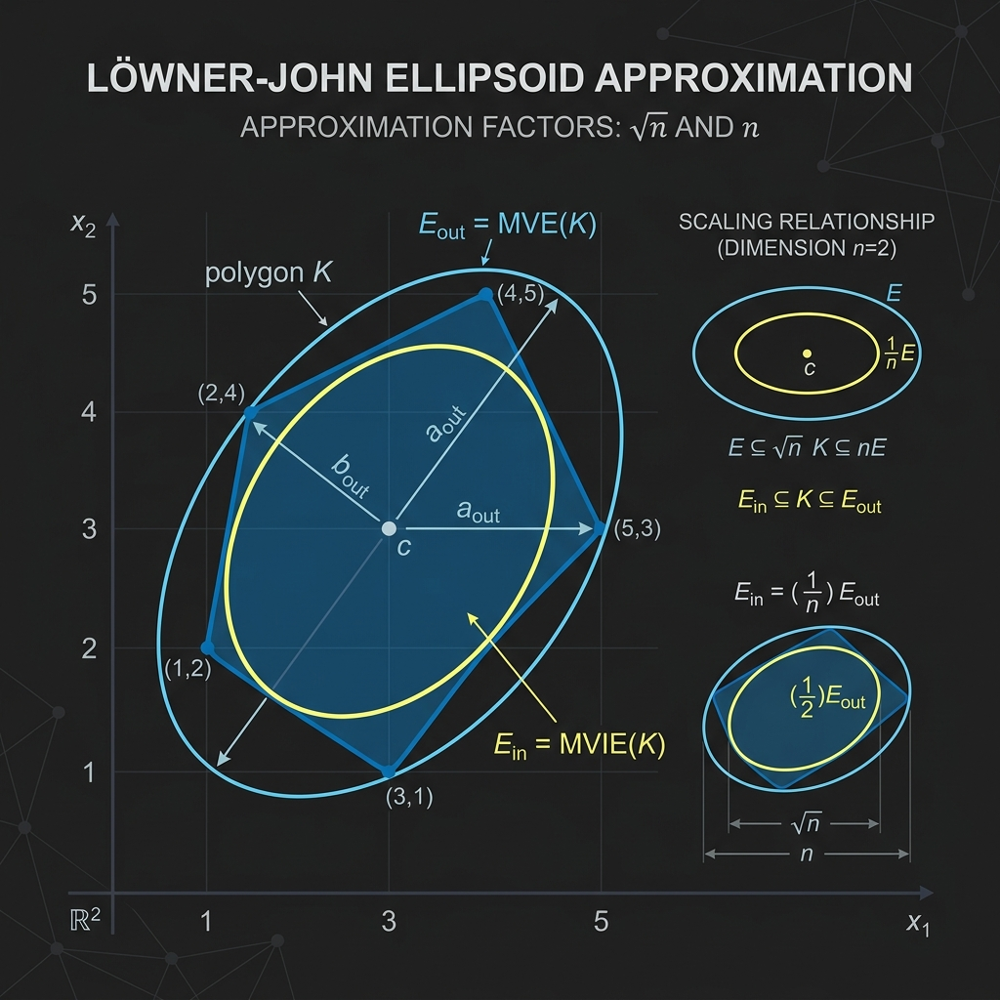
2.5 Centering Problems#
Centering problems seek to find a representative “middle” point \(x\) inside a convex set \(C\).
Chebyshev Center: The center of the largest Euclidean ball \(\mathcal{B}(x_c, r) = \{ x \mid \|x - x_c\|_2 \leq r \}\) that can be inscribed in the set \(C\). For a polyhedron \(C = \{ x \mid a_i^T x \leq b_i, \, i=1, \dots, m \}\), the Chebyshev center is found by solving the Linear Program (LP):
\[\begin{split}\begin{aligned} \text{minimize} \quad & -r \\ \text{subject to} \quad & a_i^T x_c + r \|a_i\|_2 \leq b_i, \quad i=1, \dots, m \\ & r \geq 0 \end{aligned}\end{split}\]Analytic Center: The point that minimizes the logarithmic barrier function for the set of inequalities:
\[\text{minimize} \quad -\sum_{i=1}^m \ln(b_i - a_i^T x)\]This point is unique and lies strictly in the interior of the polyhedron.
2.6 Classification and Discrimination#
We want to separate two sets of points \(\{x_1, \dots, x_N\}\) and \(\{y_1, \dots, y_M\}\) using a hyperplane \(a^T z + b = 0\).
Linear Discrimination: The sets are linearly separable if there exists a vector \(a \in \mathbb{R}^n\) and a scalar \(b \in \mathbb{R}\) such that:
\[a^T x_i + b > 0, \quad i=1, \dots, N \quad \text{and} \quad a^T y_j + b < 0, \quad j=1, \dots, M\]This is solved using linear feasibility methods.
Support Vector Classifier (Max-Margin Separation): To find the separating hyperplane that maximizes the margin (distance) between the two classes, we solve:
\[\begin{split}\begin{aligned} \text{minimize} \quad & \frac{1}{2} \|a\|_2^2 \\ \text{subject to} \quad & a^T x_i + b \geq 1, \quad i=1, \dots, N \\ & a^T y_j + b \leq -1, \quad j=1, \dots, M \end{aligned}\end{split}\]This QP formulation is the foundation of Support Vector Machines (SVM).
{kind=link}
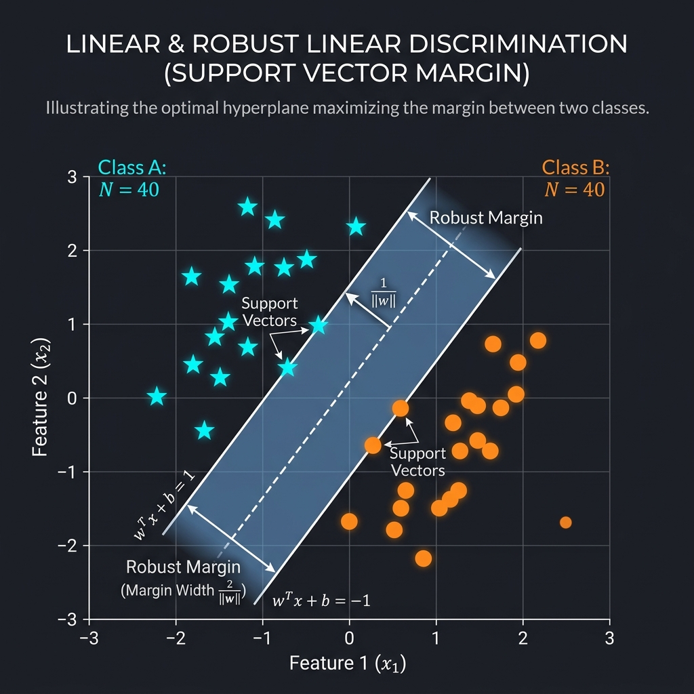
Non-linear Class Separation#
When two classes are not linearly separable, we can project the data into a higher-dimensional space or use non-linear boundary functions (such as ellipsoidal or high-degree polynomial kernels):

2.7 Placement and Location Problems#
Placement problems involve positioning a set of nodes \(x_1, \dots, x_k \in \mathbb{R}^n\) in space to minimize a cost function based on the distances between connected nodes. For a graph with edge weights \(w_{ij}\), we minimize the total connection cost:
where \(f\) is a monotonic, convex cost function.
If \(f(d) = d^2\) (squared Euclidean distance), the problem reduces to a set of linear equations (quadratic optimization).
If \(f(d) = d\) (Euclidean distance), the problem is called the multi-dimensional Weber problem, which is formulated as an SOCP.
Python Example: Projecting a Point onto a Polyhedron#
Here is a Python script using scipy.optimize to project a 2D point onto a polyhedral convex set defined by linear inequalities (\(Gx \leq h\)):
import numpy as np
from scipy.optimize import minimize
# Point to project
x0 = np.array([3.0, 4.0])
# Define the convex set (polyhedron): Gx <= h
# Inequalities:
# x1 >= 0 => -x1 <= 0
# x2 >= 0 => -x2 <= 0
# x1 + x2 <= 2 => x1 + x2 <= 2
G = np.array([[-1.0, 0.0],
[0.0, -1.0],
[1.0, 1.0]])
h = np.array([0.0, 0.0, 2.0])
# Objective function: squared Euclidean distance
def objective(x):
return np.sum((x - x0) ** 2)
# Constraint definition for Scipy (must be >= 0)
# h - Gx >= 0
def constraint_func(x):
return h - G @ x
constraints = {'type': 'ineq', 'fun': constraint_func}
# Run minimization
result = minimize(objective, x0, constraints=constraints)
projected_point = result.x
print(f"Point to project: {x0}")
print(f"Projected point: {projected_point}")
print(f"Distance: {np.sqrt(result.fun):.4f}")
Combinatorial Optimization & Scheduling#
Unlike continuous optimization where variables can take any decimal value, Combinatorial Optimization deals with problems where the variables are discrete (e.g., integers, binary choices, or ordering permutations).
Many of these problems are NP-hard, meaning they cannot be solved to absolute perfection in polynomial time for large datasets. Instead, we use solvers and heuristics to find high-quality solutions.
1. Routing Problems#
1.1 The Traveling Salesperson Problem (TSP)#
In the Traveling Salesperson Problem (TSP), a salesperson must visit a set of cities exactly once and return to the starting city. The goal is to find the shortest possible route.
Given a distance matrix \(D\) where \(d_{ij}\) is the distance from city \(i\) to city \(j\), we want to find a permutation of cities \(\pi\) (where \(\pi(i)\) represents the \(i\)-th city visited in the sequence) that minimizes:
Here, the final term \(d_{\pi(n)\pi(1)}\) ensures the salesperson returns to the starting city. TSP is a classic routing problem used in logistics, package delivery, and microchip manufacturing.
{kind=link}
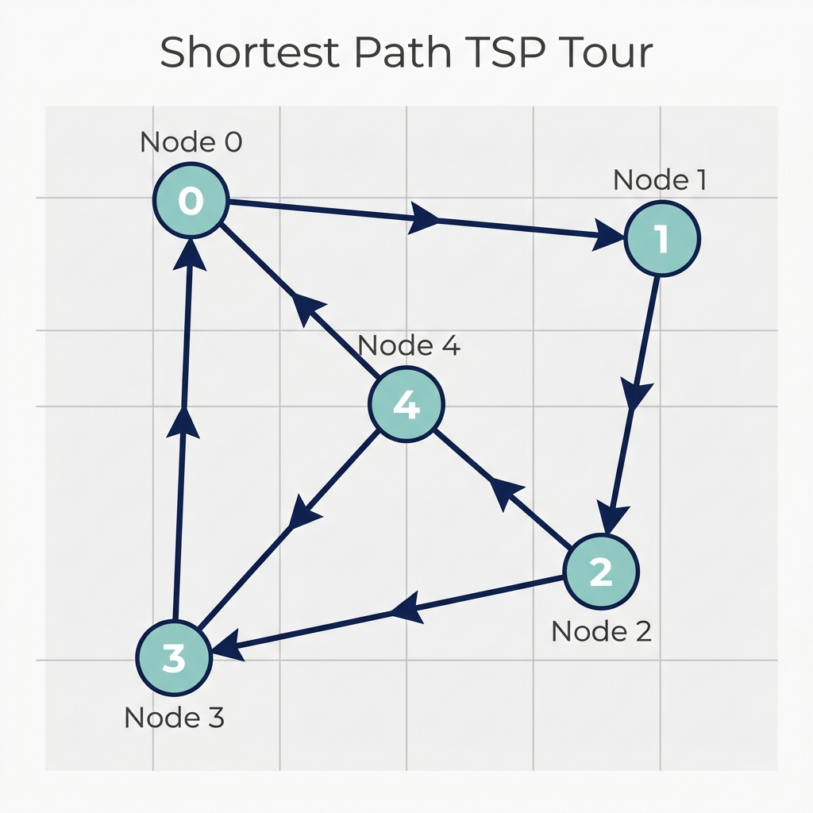
Fig. 21 An optimal Traveling Salesperson Problem (TSP) tour route.#
1.2 Vehicle Routing Problem with Time Windows (VRPTW)#
The Vehicle Routing Problem (VRP) generalizes the TSP to a fleet of vehicles servicing multiple customers from a central depot. In VRPTW, each customer has a specific time window \([e_i, l_i]\) during which they must be serviced.
Core Constraints#
Capacity Constraint: The total demand of customers assigned to any vehicle must not exceed the vehicle’s capacity.
Time Window Constraint: For each customer \(i\), the service start time \(S_i\) must satisfy:
\[ e_i \le S_i \le l_i \]
{kind=link}
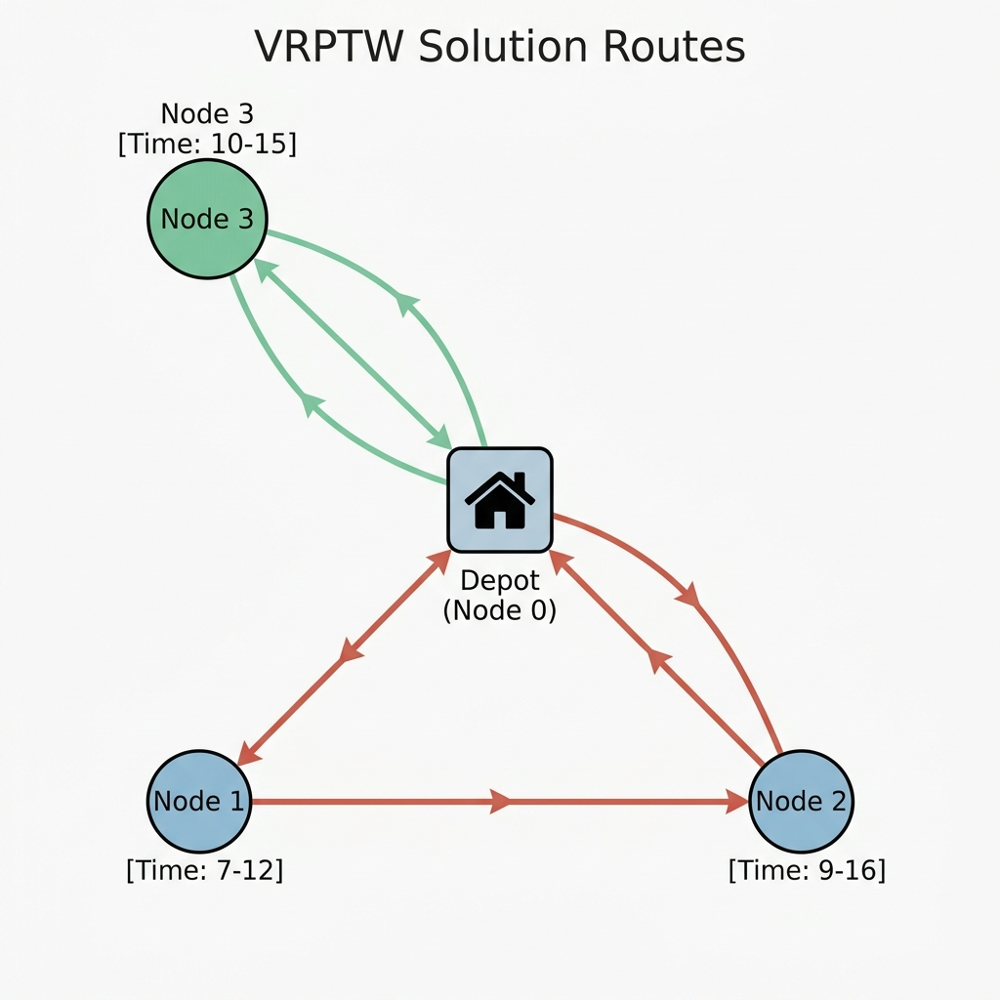
Fig. 22 An optimal route plan for the Vehicle Routing Problem with Time Windows (VRPTW).#
Python Implementation: Solving VRPTW with Google OR-Tools Routing Library#
For routing problems, Google OR-Tools provides a specialized routing library built on top of its constraint solver.
from ortools.constraint_solver import routing_enums_pb2
from ortools.constraint_solver import pywrapcp
def create_data_model():
data = {}
# Time-distance matrix between depot (0) and 3 customer locations (1, 2, 3)
data['time_matrix'] = [
[0, 6, 9, 8],
[6, 0, 8, 3],
[9, 8, 0, 11],
[8, 3, 11, 0]
]
# Time windows for each location (start_time, end_time)
data['time_windows'] = [
(0, 5), # Depot
(7, 12), # Customer 1
(10, 15), # Customer 2
(5, 10) # Customer 3
]
data['num_vehicles'] = 2
data['depot'] = 0
return data
def main():
data = create_data_model()
manager = pywrapcp.RoutingIndexManager(
len(data['time_matrix']), data['num_vehicles'], data['depot']
)
routing = pywrapcp.RoutingModel(manager)
# 1. Define travel cost evaluator (Time-based cost)
def time_callback(from_index, to_index):
return data['time_matrix'][manager.IndexToNode(from_index)][manager.IndexToNode(to_index)]
transit_callback_index = routing.RegisterTransitCallback(time_callback)
routing.SetArcCostEvaluatorOfAllVehicles(transit_callback_index)
# 2. Add Time Dimension for Time Windows
time_dimension_name = 'Time'
routing.AddDimension(
transit_callback_index,
30, # allow waiting time
30, # maximum time per vehicle
False, # don't force start cumulative to zero
time_dimension_name
)
time_dimension = routing.GetDimensionOrDie(time_dimension_name)
# 3. Add Time Window constraints for each location
for node_idx, time_window in enumerate(data['time_windows']):
if node_idx == 0:
continue
index = manager.NodeToIndex(node_idx)
time_dimension.CumulVar(index).SetRange(time_window[0], time_window[1])
# 4. Set Search Parameters
search_parameters = pywrapcp.DefaultRoutingSearchParameters()
search_parameters.first_solution_strategy = (
routing_enums_pb2.FirstSolutionStrategy.PATH_CHEAPEST_ARC
)
# 5. Solve
solution = routing.SolveWithParameters(search_parameters)
if solution:
print("Successful VRPTW route solved.")
for vehicle_id in range(data['num_vehicles']):
index = routing.Start(vehicle_id)
plan_output = f"Route for vehicle {vehicle_id}:\n"
while not routing.IsEnd(index):
time_var = time_dimension.CumulVar(index)
plan_output += f" {manager.IndexToNode(index)} (Time: {solution.Min(time_var)}) -> "
index = solution.Value(routing.NextVar(index))
time_var = time_dimension.CumulVar(index)
plan_output += f" {manager.IndexToNode(index)} (Time: {solution.Min(time_var)})\n"
print(plan_output)
if __name__ == '__main__':
main()
2. Machine & Factory Scheduling#
2.1 Constraint Programming (CP)#
Constraint Programming (CP) is a software programming paradigm designed to solve hard combinatorial optimization problems by declaring constraints (logical or algebraic relationships) over variables.
Unlike traditional programming where we write algorithms to find solutions, in CP we define what the solution must satisfy, and the CP solver determines how to find it.
MIP vs. CP#
Mixed-Integer Programming (MIP): Focuses on optimizing a linear objective function over continuous and integer variables constrained by linear inequalities. It relies on mathematical models (linear relaxation, simplex method, branch-and-bound).
Constraint Programming (CP): Focuses on finding feasible solutions in highly discrete spaces. It allows non-linear, logical, and global constraints (e.g.,
AllDifferent,NoOverlap). It is especially powerful when the objective function is non-existent or secondary, and the constraints are highly complex.
How CP Solves Problems#
Traditionally, CP solvers operate using two interleaved steps:
Constraint Propagation: Every time a variable’s domain (set of possible values) is reduced, this change is propagated through constraints to prune the search space of other related variables.
Backtracking Search: The solver makes a decision (e.g., assigning a value to a variable) and propagates. If a contradiction occurs (domain becomes empty), the solver backtracks to a previous state and tries a different branch.
Modern solvers like Google OR-Tools CP-SAT go beyond traditional backtracking. They are SAT-based CP solvers that combine constraint programming with SAT technology. They leverage Lazy Clause Generation (LCG) to compile CP constraints into Boolean clauses lazily during search, and CDCL (Conflict-Driven Clause Learning) to learn from contradictions and prevent the solver from making the same bad decisions again, providing orders-of-magnitude faster performance on combinatorial problems.
CP in Scheduling#
CP is the state-of-the-art methodology for scheduling because of its native support for Interval Variables (which represent tasks with start, duration, and end parameters) and No-Overlap Constraints:
Instead of formulating these disjunctive constraints using big-M formulations (as in MIP), CP solvers use specialized propagation algorithms (such as edge-finding) to prune the search space extremely efficiently.
2.2 The Job Shop Scheduling Problem (JSSP)#
The Job Shop Scheduling Problem (JSSP) is one of the most famous scheduling problems in industrial engineering and operations research.
Problem Definition#
We have a set of Jobs (e.g., manufacturing specific products).
Each Job consists of a sequence of Tasks that must be executed in a strict order.
Each Task must be processed on a specific Machine for a given duration.
Constraints:
A machine can only process one task at a time (no overlap).
Tasks of a single job must be processed in sequence.
Objective: Minimize the makespan (the total time to complete all jobs).
Mathematical MILP Formulation (Manne-style)#
To formulate the JSSP as a Mixed-Integer Linear Program, we define:
\(s_{ij} \ge 0\): The start time of task \(j\) belonging to job \(i\).
\(p_{ij} > 0\): The processing duration of task \(j\) of job \(i\).
\(C_{max}\): The makespan (maximum completion time of all jobs).
\(x_{ij, hk} \in \{0, 1\}\): A binary decision variable for ordering tasks on the same machine:
\[\begin{split} x_{ij, hk} = \begin{cases} 1 & \text{if task } (i,j) \text{ is processed before task } (h,k) \text{ on the same machine} \\ 0 & \text{otherwise} \end{cases} \end{split}\]
The JSSP model is defined as:
Here, \(M\) is a sufficiently large positive constant (Big-M) used to disable one of the two overlap constraints depending on the value of \(x_{ij, hk}\).
[!NOTE] In MIP models, the Big-M parameter is notorious for weakening the linear relaxation bounds, leading to slower solver convergence. In contrast, CP solvers handle these disjunctions naturally via logical
NoOverlapconstraints on interval variables, avoiding Big-M entirely.
{kind=link}
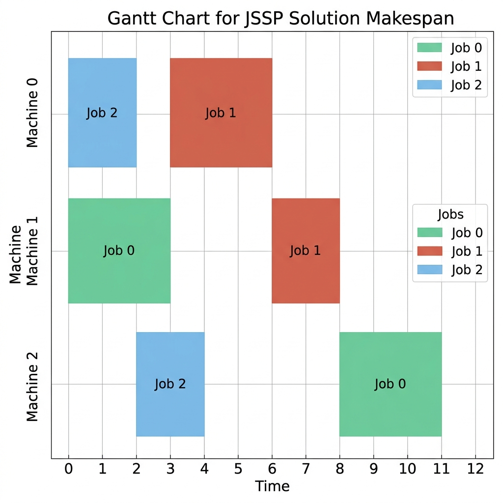
Fig. 23 A typical Gantt chart solution for the Job Shop Scheduling Problem showing non-overlapping tasks.#
2.3 Python Implementation: Solving JSSP with Google OR-Tools#
We can use Google’s OR-Tools (Constraint Programming CP-SAT solver) to solve a small JSSP instance.
Instance Definition#
Job 0:
Task 1: Machine 0, duration 3
Task 2: Machine 1, duration 2
Task 3: Machine 2, duration 2
Job 1:
Task 1: Machine 0, duration 2
Task 2: Machine 2, duration 1
Task 3: Machine 1, duration 4
Job 2:
Task 1: Machine 1, duration 4
Task 2: Machine 2, duration 3
Task 3: Machine 0, duration 3
from ortools.sat.python import cp_model
# 1. Prepare Data
jobs_data = [
[(0, 3), (1, 2), (2, 2)], # Job 0
[(0, 2), (2, 1), (1, 4)], # Job 1
[(1, 4), (2, 3), (0, 3)] # Job 2
]
num_machines = 3
all_machines = range(num_machines)
# Calculate sum of all durations to set as our maximum timeline horizon
horizon = sum(task[1] for job in jobs_data for task in job)
model = cp_model.CpModel()
# 2. Define Variables
all_tasks = {} # (job_id, task_id): (start_var, end_var)
machine_to_intervals = {m: [] for m in all_machines}
for job_id, job in enumerate(jobs_data):
for task_id, (machine, duration) in enumerate(job):
suffix = f"_{job_id}_{task_id}"
# Define start, end, and interval variables for the task
start_var = model.NewIntVar(0, horizon, f"start{suffix}")
end_var = model.NewIntVar(0, horizon, f"end{suffix}")
interval_var = model.NewIntervalVar(
start_var, duration, end_var, f"interval{suffix}"
)
all_tasks[job_id, task_id] = (start_var, end_var)
machine_to_intervals[machine].append(interval_var)
# 3. Add overlap constraints (no two tasks on the same machine can overlap)
for machine in all_machines:
model.AddNoOverlap(machine_to_intervals[machine])
# 4. Add precedence constraints (tasks of a job must run sequentially)
for job_id, job in enumerate(jobs_data):
for task_id in range(len(job) - 1):
model.Add(all_tasks[job_id, task_id + 1][0] >= all_tasks[job_id, task_id][1])
# 5. Define makespan objective (minimize the maximum end time)
makespan = model.NewIntVar(0, horizon, "makespan")
model.AddMaxEquality(
makespan,
[all_tasks[job_id, len(job) - 1][1] for job_id, job in enumerate(jobs_data)]
)
model.Minimize(makespan)
# 6. Solve
solver = cp_model.CpSolver()
status = solver.Solve(model)
if status == cp_model.OPTIMAL or status == cp_model.FEASIBLE:
print(f"Optimal Makespan: {solver.ObjectiveValue()}")
for job_id, job in enumerate(jobs_data):
for task_id, task in enumerate(job):
start = solver.Value(all_tasks[job_id, task_id][0])
end = solver.Value(all_tasks[job_id, task_id][1])
print(f"Job {job_id}, Task {task_id} starts at {start}, ends at {end}")
2.4 Flexible Job Shop Scheduling Problem (FJSSP)#
In the standard JSSP, each task is strictly bound to a single predefined machine. The Flexible Job Shop Scheduling Problem (FJSSP) introduces a significant generalization: each task can be processed on any machine from a set of alternative compatible machines, potentially with different processing times.
Therefore, FJSSP requires solving two sub-problems simultaneously:
Routing Decision: Choose which machine processes each task.
Scheduling Decision: Determine the sequence of tasks on each machine to minimize the total makespan.
Mathematical MILP Formulation (Machine Selection and Conditional Overlap)#
In FJSSP, since tasks are not pre-assigned to a single machine, we introduce machine routing variables:
\(y_{ij, m} \in \{0, 1\}\): A binary decision variable equal to \(1\) if task \(j\) of job \(i\) is assigned to machine \(m\), and \(0\) otherwise.
\(p_{ij, m}\): The processing duration of task \(j\) of job \(i\) if processed on machine \(m\).
The mathematical model extends the JSSP formulation with the following routing and execution constraints:
Assign Exactly One Machine:
\[ \sum_{m \in \mathcal{M}_{ij}} y_{ij, m} = 1 \quad \forall i, j \]Determine Actual Duration:
\[ p_{ij} = \sum_{m \in \mathcal{M}_{ij}} y_{ij, m} \cdot p_{ij, m} \quad \forall i, j \]Conditional Non-Overlapping (MIP conditional Big-M): If two tasks \((i,j)\) and \((h,k)\) are assigned to the same machine \(m\) (\(y_{ij,m} = 1\) and \(y_{hk,m} = 1\)), they must not overlap:
\[ s_{ij} + p_{ij, m} \le s_{hk} + M(3 - x_{ij, hk, m} - y_{ij, m} - y_{hk, m}) \]

Fig. 24 A typical Gantt chart solution for the Flexible Job Shop Scheduling Problem.#
Python Implementation: Solving FJSSP with Google OR-Tools#
We model the routing choice using optional intervals and enforce that exactly one alternative machine is chosen per task using model.AddExactlyOne().
from ortools.sat.python import cp_model
# 1. Instance Definition
# Format: each job has tasks, and each task lists alternative (machine_id, duration) pairs.
jobs_data = [
[ # Job 0
[(0, 2), (1, 3)], # Task 0 can run on M0 (dur 2) or M1 (dur 3)
[(1, 3), (2, 4)] # Task 1 can run on M1 (dur 3) or M2 (dur 4)
],
[ # Job 1
[(0, 1), (2, 2)], # Task 0 can run on M0 (dur 1) or M2 (dur 2)
[(0, 3), (1, 2), (2, 2)] # Task 1 can run on M0, M1, or M2
]
]
num_machines = 3
all_machines = range(num_machines)
# Calculate timeline horizon (upper bound)
horizon = sum(max(alt[1] for alt in task) for job in jobs_data for task in job)
model = cp_model.CpModel()
# Variables representation
all_tasks = {} # (job_id, task_id): (start_var, end_var)
machine_to_intervals = {m: [] for m in all_machines}
for job_id, job in enumerate(jobs_data):
for task_id, task in enumerate(job):
# Master start/end variables for the task
start_var = model.NewIntVar(0, horizon, f"start_{job_id}_{task_id}")
end_var = model.NewIntVar(0, horizon, f"end_{job_id}_{task_id}")
all_tasks[job_id, task_id] = (start_var, end_var)
presence_literals = []
for alt_id, (machine, duration) in enumerate(task):
suffix = f"_{job_id}_{task_id}_{machine}"
l_presence = model.NewBoolVar(f"presence{suffix}")
presence_literals.append(l_presence)
# Optional interval directly using master start_var and end_var
l_interval = model.NewOptionalIntervalVar(
start_var, duration, end_var, l_presence, f"interval{suffix}"
)
machine_to_intervals[machine].append(l_interval)
# Enforce that exactly one machine is chosen for this task
model.AddExactlyOne(presence_literals)
# 2. Add overlap constraints (no overlap on any machine)
for machine in all_machines:
model.AddNoOverlap(machine_to_intervals[machine])
# 3. Add precedence constraints (sequential tasks within each job)
for job_id, job in enumerate(jobs_data):
for task_id in range(len(job) - 1):
model.Add(all_tasks[job_id, task_id + 1][0] >= all_tasks[job_id, task_id][1])
# 4. Define makespan objective
makespan = model.NewIntVar(0, horizon, "makespan")
model.AddMaxEquality(
makespan,
[all_tasks[job_id, len(job) - 1][1] for job_id in range(len(jobs_data))]
)
model.Minimize(makespan)
# Solve
solver = cp_model.CpSolver()
status = solver.Solve(model)
if status == cp_model.OPTIMAL or status == cp_model.FEASIBLE:
print(f"Optimal Makespan: {solver.ObjectiveValue()}")
for job_id, job in enumerate(jobs_data):
for task_id, task in enumerate(job):
start = solver.Value(all_tasks[job_id, task_id][0])
end = solver.Value(all_tasks[job_id, task_id][1])
print(f"Job {job_id}, Task {task_id} starts at {start}, ends at {end}")
2.5 FJSSP with Sequence-Dependent Setup Times (SDST)#
In real manufacturing, when a machine switches from processing job \(A\) to job \(B\), it often requires a setup time (e.g., cleaning, re-tooling, or adjusting temperatures). This setup duration depends on the sequence: switching from white paint to black paint might take 5 minutes, but cleaning the nozzles to switch from black paint to white paint could take 40 minutes.
To implement SDST in OR-Tools CP-SAT, we use ordering boolean variables to establish the sequence of tasks on each machine and enforce the setup transition delays:
{kind=link}
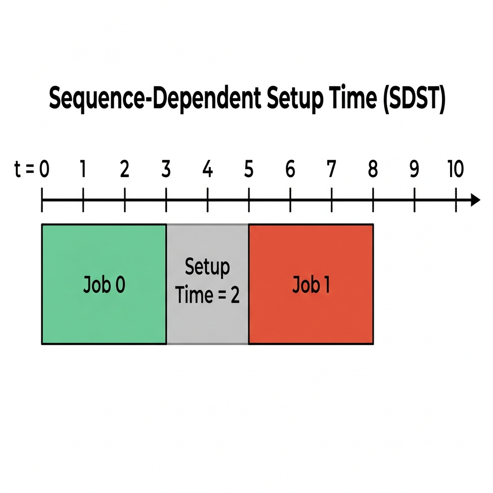
Fig. 25 Visualizing sequence-dependent setup time between two consecutive job runs.#
Python Implementation: Solving FJSSP with SDST#
Below is a complete, working Python example of solving an FJSSP with Sequence-Dependent Setup Times (SDST) using Google OR-Tools:
from ortools.sat.python import cp_model
def solve_fjssp_sdst():
model = cp_model.CpModel()
# Setup times matrix: setup_times[machine][from_job][to_job]
# Machine 0: Job 0 -> Job 1 takes 2 units; Job 1 -> Job 0 takes 1 unit.
# Machine 1: Job 0 -> Job 1 takes 3 units; Job 1 -> Job 0 takes 2 units.
setup_times = {
0: [[0, 2], [1, 0]],
1: [[0, 3], [2, 0]]
}
# Format: each job has tasks, and each task lists alternative (machine, duration) pairs.
jobs_data = [
[[(0, 2), (1, 3)], [(1, 2)]], # Job 0
[[(0, 2), (1, 2)], [(0, 3)]] # Job 1
]
num_machines = 2
all_machines = range(num_machines)
horizon = 30
# 1. Variables representation
all_tasks = {} # (job_id, task_id): (start_var, end_var)
machine_to_intervals = {m: [] for m in all_machines}
machine_to_metadata = {m: [] for m in all_machines}
for job_id, job in enumerate(jobs_data):
for task_id, task in enumerate(job):
# Master start/end variables for the task
start_var = model.NewIntVar(0, horizon, f"start_{job_id}_{task_id}")
end_var = model.NewIntVar(0, horizon, f"end_{job_id}_{task_id}")
all_tasks[job_id, task_id] = (start_var, end_var)
presence_literals = []
for machine, duration in task:
suffix = f"_{job_id}_{task_id}_{machine}"
l_presence = model.NewBoolVar(f"presence{suffix}")
presence_literals.append(l_presence)
# Create optional interval
l_interval = model.NewOptionalIntervalVar(
start_var, duration, end_var, l_presence, f"interval{suffix}"
)
machine_to_intervals[machine].append(l_interval)
machine_to_metadata[machine].append({
'job_id': job_id,
'task_id': task_id,
'presence': l_presence,
'start': start_var,
'end': end_var
})
model.AddExactlyOne(presence_literals)
# 2. Precedence Constraints (sequential tasks within each job)
for job_id, job in enumerate(jobs_data):
for task_id in range(len(job) - 1):
model.Add(all_tasks[job_id, task_id + 1][0] >= all_tasks[job_id, task_id][1])
# 3. No-Overlap & Sequence-Dependent Setup Constraints
for machine in all_machines:
# Prevent overlapping intervals on each machine
model.AddNoOverlap(machine_to_intervals[machine])
metadata = machine_to_metadata[machine]
for i in range(len(metadata)):
for j in range(i + 1, len(metadata)):
t1 = metadata[i]
t2 = metadata[j]
# Active helper boolean when both tasks are assigned to this machine
both_present = model.NewBoolVar(f"both_present_{machine}_{t1['job_id']}_{t2['job_id']}")
model.AddBoolAnd([t1['presence'], t2['presence']]).OnlyEnforceIf(both_present)
# Define boolean variable representing order: True if t1 is executed before t2
t1_before_t2 = model.NewBoolVar(f"before_{machine}_{t1['job_id']}_{t2['job_id']}")
# If t1 is before t2, enforce end(t1) + setup_time(t1, t2) <= start(t2)
setup_t1_t2 = setup_times[machine][t1['job_id']][t2['job_id']]
model.Add(t2['start'] >= t1['end'] + setup_t1_t2).OnlyEnforceIf([both_present, t1_before_t2])
# If t2 is before t1, enforce end(t2) + setup_time(t2, t1) <= start(t1)
setup_t2_t1 = setup_times[machine][t2['job_id']][t1['job_id']]
model.Add(t1['start'] >= t2['end'] + setup_t2_t1).OnlyEnforceIf([both_present, t1_before_t2.Not()])
# 4. Makespan Objective
makespan = model.NewIntVar(0, horizon, "makespan")
model.AddMaxEquality(
makespan,
[all_tasks[job_id, len(jobs_data[job_id]) - 1][1] for job_id in range(len(jobs_data))]
)
model.Minimize(makespan)
# Solve
solver = cp_model.CpSolver()
status = solver.Solve(model)
if status == cp_model.OPTIMAL or status == cp_model.FEASIBLE:
print(f"Optimal Makespan with SDST: {solver.ObjectiveValue()}")
for job_id, job in enumerate(jobs_data):
for task_id, task in enumerate(job):
start = solver.Value(all_tasks[job_id, task_id][0])
end = solver.Value(all_tasks[job_id, task_id][1])
print(f"Job {job_id}, Task {task_id} starts at {start}, ends at {end}")
if __name__ == '__main__':
solve_fjssp_sdst()
3. Resource & Project Scheduling#
3.1 Resource-Constrained Project Scheduling Problem (RCPSP)#
Unlike factory scheduling where a machine can process at most one task (unary capacity), project scheduling deals with Cumulative Resources (e.g., a pool of 10 workers, 3 trucks, or electrical power). Multiple tasks can execute simultaneously as long as their combined resource consumption does not exceed the total capacity limit.
Mathematical Formulation#
Let \(K\) be the set of cumulative resources, and let \(R_k\) be the maximum capacity of resource \(k \in K\). Each task \(i\) has a processing duration \(p_i\), a start time \(s_i\), and requires \(r_{ik}\) units of resource \(k\) throughout its execution.
At any time step \(t\) in the project horizon, the total consumption of any resource \(k\) by all active tasks must not exceed its capacity:
where \(A(t) = \{ i \mid s_i \le t < s_i + p_i \}\) is the set of active tasks at time \(t\).
{kind=link}
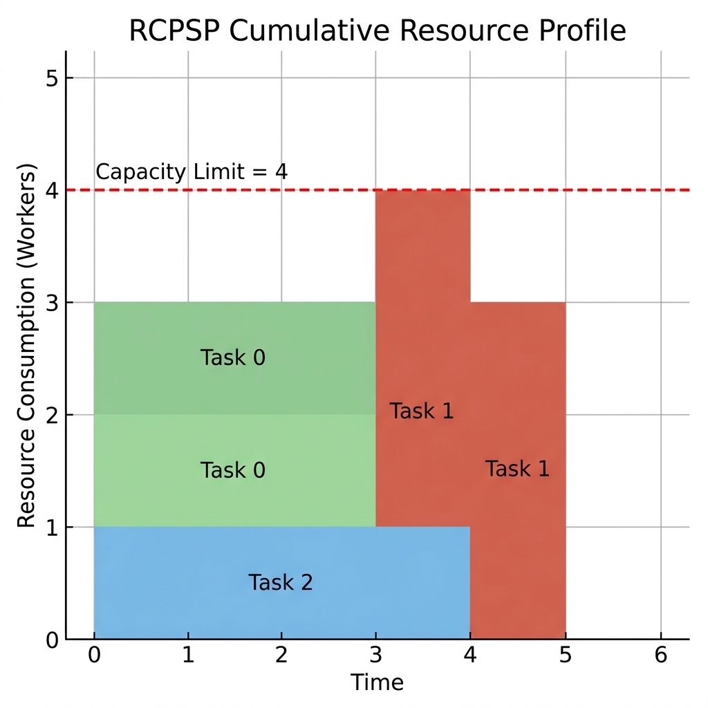
Fig. 26 Stacked cumulative resource consumption graph showing total demand staying below capacity.#
Python Implementation: Solving RCPSP with Google OR-Tools#
CP-SAT provides a powerful global constraint model.AddCumulative() to enforce this capacity constraint.
from ortools.sat.python import cp_model
model = cp_model.CpModel()
# 1. Setup Parameters
resource_capacity = 4 # Total available workers
durations = [3, 2, 4] # Durations of Tasks 0, 1, 2
demands = [2, 3, 1] # Workers needed per task
horizon = sum(durations)
# 2. Create Interval Variables
intervals = []
starts = []
ends = []
for i, (duration, demand) in enumerate(zip(durations, demands)):
start = model.NewIntVar(0, horizon, f"start_{i}")
end = model.NewIntVar(0, horizon, f"end_{i}")
interval = model.NewIntervalVar(start, duration, end, f"interval_{i}")
starts.append(start)
ends.append(end)
intervals.append(interval)
# 3. Add Cumulative Resource Constraint
model.AddCumulative(intervals, demands, resource_capacity)
# 4. Minimize project completion time (makespan)
makespan = model.NewIntVar(0, horizon, "makespan")
model.AddMaxEquality(makespan, ends)
model.Minimize(makespan)
# Solve
solver = cp_model.CpSolver()
status = solver.Solve(model)
if status == cp_model.OPTIMAL or status == cp_model.FEASIBLE:
print(f"Optimal Project Makespan: {solver.ObjectiveValue()}")
for i in range(len(durations)):
print(f"Task {i} starts at {solver.Value(starts[i])}, ends at {solver.Value(ends[i])} (Requires {demands[i]} workers)")
4. Workforce Scheduling#
4.1 Shift Scheduling & Nurse Rostering#
Workforce scheduling assigns staff members to shifts (e.g., Morning, Afternoon, Night) over a schedule horizon, subject to complex labor regulations (hard constraints) and employee preferences (soft constraints).
Constraint Examples#
No Double Shifts: An employee cannot work more than one shift per day.
Rest Periods: Employees cannot work a Night shift followed immediately by a Morning shift the next day.
Under/Overstaffing Limits: Each shift must have a minimum number of employees assigned.

Fig. 27 A typical shift roster matrix showing daily nurse shift assignments.#
Python Implementation: Simple Nurse Rostering using CP-SAT#
from ortools.sat.python import cp_model
num_nurses = 3
num_days = 3
num_shifts = 2 # 0: Day, 1: Night
all_nurses = range(num_nurses)
all_days = range(num_days)
all_shifts = range(num_shifts)
model = cp_model.CpModel()
# 1. Variables: shifts[(n, d, s)] = 1 if nurse n works shift s on day d
shifts = {}
for n in all_nurses:
for d in all_days:
for s in all_shifts:
shifts[n, d, s] = model.NewBoolVar(f"shift_n{n}_d{d}_s{s}")
# 2. Constraint: Each shift on each day has exactly 1 nurse assigned
for d in all_days:
for s in all_shifts:
model.AddExactlyOne(shifts[n, d, s] for n in all_nurses)
# 3. Constraint: Each nurse works at most 1 shift per day
for n in all_nurses:
for d in all_days:
model.AddAtMostOne(shifts[n, d, s] for s in all_shifts)
# 4. Constraint: A nurse cannot work a Night shift (s=1) followed by a Day shift (s=0) the next day
for n in all_nurses:
for d in range(num_days - 1):
model.Add(shifts[n, d, 1] + shifts[n, d + 1, 0] <= 1)
# Solve
solver = cp_model.CpSolver()
status = solver.Solve(model)
if status == cp_model.OPTIMAL or status == cp_model.FEASIBLE:
print("Successful Nurse Rostering Schedule:")
for d in all_days:
print(f"Day {d}:")
for s in all_shifts:
shift_name = "Day" if s == 0 else "Night"
for n in all_nurses:
if solver.Value(shifts[n, d, s]) == 1:
print(f" {shift_name} shift assigned to Nurse {n}")
5. Comparison: Mathematical Formulation vs. OR-Tools CP-SAT Code#
The table below maps the standard mathematical definitions to their corresponding implementations in the Google OR-Tools CP-SAT API:
Mathematical Concept |
Math Formulation (MIP/CP) |
OR-Tools CP-SAT Syntax |
|---|---|---|
Task / Interval Variable |
\(\text{Task}_i = [s_i, s_i + d_i]\) |
|
No-Overlap Constraint |
\(s_i + d_i \le s_j \lor s_j + d_j \le s_i\) |
|
Precedence / Sequential Ordering |
\(s_j \ge s_i + d_i\) |
|
Alternative Machine Routing |
\(\sum_{m} y_{i,m} = 1\) |
|
Cumulative Resource Bounds |
\(\sum_{i \in A(t)} r_{ik} \le R_k\) |
|
Exercises#
Exercise 1
Consider a JSSP with 2 machines (\(M_0, M_1\)) and 1 job. The job has 2 tasks:
Task 0: requires \(M_0\), duration = 4.
Task 1: requires \(M_1\), duration = 3. What is the minimum makespan if Task 1 must follow Task 0?
Solution — Exercise 1
Since there is only one job, and Task 1 must wait for Task 0 to finish:
Task 0 starts at \(t=0\), ends at \(t=4\).
Task 1 starts at \(t=4\) (earliest possible), ends at \(t=4+3=7\). The minimum makespan is 7.
Functional Analysis & Measure Theory#
Functional Analysis generalizes linear algebra to infinite-dimensional spaces, while Measure Theory establishes a rigorous generalization of length, area, and volume. Together, they form the mathematical backbone of modern probability theory, kernel methods, optimization, and generative modeling in machine learning.
This module is organized as a unified 10-lecture course:
Module Curriculum#
Basic Banach Space Theory Introduces normed spaces, convergence, Cauchy sequences, completeness, and Banach spaces.
Bounded Linear Operators Discusses linear operators, boundedness, continuity, and the operator norm.
Quotient Spaces & Baire Category Theorem Covers quotient normed spaces, topological completeness, and the Uniform Boundedness Principle.
Open Mapping & Closed Graph Theorems Details the open mapping theorem, bounded inverse theorem, and closed graph theorem.
Zorn’s Lemma & Hahn-Banach Theorem Explores partial orders, Zorn’s Lemma, and the Hahn-Banach extension theorem.
The Double Dual & Outer Measure Bridges functional dual spaces and the Lebesgue outer measure of real subsets.
Sigma Algebras Covers \(\sigma\)-algebras, Borel sets, and the prevention of measure paradoxes.
Lebesgue Measurable Subsets and Measure Explores Carathéodory’s slicing condition, the Lebesgue measure, and complete null spaces.
Lebesgue Measurable Functions Defines measurable functions, pointwise operations, and closure properties.
Simple Functions Covers step-like simple functions and constructs the Lebesgue integral.
Connection to Machine Learning & Deep Learning (ML/DL)#
While you will rarely need to compute a Lebesgue integral or prove Banach space operators by hand in day-to-day ML engineering, almost all theoretical foundations of ML and DL are built upon this mathematics.
1. Reproducing Kernel Hilbert Spaces (RKHS) & Kernel Methods#
In models like Support Vector Machines (SVMs), Gaussian Processes (GPs), and Kernel PCA, we analyze functions as vectors in an infinite-dimensional feature space.
Hilbert Space (\(H\)): A complete vector space with an inner product.
Riesz Representation Theorem: For any bounded linear evaluation functional \(L_x(f) = f(x)\), there exists a unique function \(k_x \in H\) such that \(f(x) = \langle f, k_x \rangle_H\). This underpins the Kernel Trick: \(k(x, y) = \langle k_x, k_y \rangle_H\).
The Representer Theorem: Proves that the minimizer of any regularized empirical risk function over an infinite-dimensional RKHS lies in a finite-dimensional span of kernel evaluations: \(f^*(x) = \sum_{i=1}^N \alpha_i k(x_i, x)\), making optimization computationally feasible.
2. Universal Approximation Theorem (Hahn-Banach Application)#
Cybenko’s Proof (1989): Proves that single-hidden-layer neural networks can approximate any continuous function on a compact subset of \(\mathbb{R}^n\).
The proof uses the Hahn-Banach Extension Theorem to show that if the span of neural network functions were not dense in the Banach space of continuous functions \(C(K)\) (equipped with the supremum norm), a non-zero linear functional would vanish on all network outputs. Cybenko proved no such non-zero functional exists, concluding that the network functions are indeed dense in \(C(K)\).
3. Probability Densities (Radon-Nikodym) & Expectation (Lebesgue Integration)#
Radon-Nikodym Theorem: A probability density function (PDF) \(p(x)\) is defined as the Radon-Nikodym derivative of a probability measure \(P\) with respect to the Lebesgue measure \(\lambda\): \(p = \frac{dP}{d\lambda}\). This is only possible because the probability measure is absolutely continuous with respect to the Lebesgue measure.
Lebesgue Integral: Expectation is defined via the Lebesgue integral:
\[\mathbb{E}[X] = \int_\Omega X \, dP\]This unifies discrete and continuous variables under a single, rigorous notation, guaranteeing expectation limits exist and behave predictably.
4. Gradient Descent & Lebesgue Dominated Convergence (DCT)#
During neural network training, we swap the order of differentiation (gradient) and integration (expectation):
The Lebesgue Dominated Convergence Theorem (DCT) provides the mathematical justification for this swap. It is the core assumption behind Backpropagation, the Reparameterization Trick in VAEs, and Policy Gradients in Reinforcement Learning.
5. “Almost Everywhere” (a.e.) Differentiability of ReLU#
Many activation functions like ReLU (\(f(x) = \max(0, x)\)) are not differentiable at \(x = 0\).
Because a single point has a Lebesgue measure of 0, ReLU is differentiable almost everywhere (a.e.). Measure theory guarantees that gradient descent will not be disrupted by these isolated non-differentiable points.
Basic Banach Space Theory#
This lecture introduces the foundational concepts of normed spaces, convergence, completeness, and infinite-dimensional vector spaces.
1. Infinite-Dimensional Vector Spaces#
Unlike calculus and linear algebra on \(\mathbb{R}^n\), which deal with finitely many variables, functional analysis aims to solve equations in spaces of functions, which are infinite-dimensional.
Let \(V\) be a vector space over a field \(\mathbb{K}\) (either \(\mathbb{R}\) or \(\mathbb{C}\)).
Definition: A vector space \(V\) is finite-dimensional if every linearly independent set in \(V\) is finite. That is, for all subsets \(E \subseteq V\) such that:
\[\sum_{i=1}^N a_i v_i = 0 \implies a_1 = a_2 = \cdots = a_N = 0 \quad \text{for all } v_1, \dots, v_N \in E\]\(E\) must have a finite cardinality. \(V\) is infinite-dimensional if it is not finite-dimensional.
Example: The space \(C([0, 1])\) of continuous functions from \([0, 1]\) to \(\mathbb{C}\) is infinite-dimensional. To see this, consider the set of monomials:
\[E = \{f_n(x) = x^n \mid n \in \mathbb{Z}_{\ge 0}\}\]This set is linearly independent and contains infinitely many elements.
2. Norms and Inducing Metrics#
To perform analysis on infinite-dimensional spaces, we need a way to measure distance.
Definition: A norm on a vector space \(V\) is a function \(\|\cdot\|: V \to [0, \infty)\) satisfying:
Positive Definiteness: \(\|v\| = 0\) if and only if \(v = 0\).
Absolute Homogeneity: \(\|\lambda v\| = |\lambda| \|v\|\) for all \(v \in V\) and \(\lambda \in \mathbb{K}\).
Triangle Inequality: \(\|v_1 + v_2\| \le \|v_1\| + \|v_2\|\) for all \(v_1, v_2 \in V\).
A seminorm satisfies properties (2) and (3), but not necessarily (1). A vector space equipped with a norm is called a normed space.
Proposition: A norm \(\|\cdot\|\) on \(V\) induces a metric \(d(v, w) = \|v - w\|\) on \(V\).
Proof:
Definiteness: \(d(v, w) = \|v - w\| = 0 \iff v - w = 0 \iff v = w\).
Symmetry: \(d(v, w) = \|v - w\| = \|(-1)(w - v)\| = |-1| \cdot \|w - v\| = d(w, v)\).
Triangle Inequality: For all \(u, v, w \in V\):
\[d(u, w) = \|u - w\| = \|(u - v) + (v - w)\| \le \|u - v\| + \|v - w\| = d(u, v) + d(v, w)\]
Examples in Finite Dimensions: On \(\mathbb{K}^n\), we define the \(l^p\) norm for \(1 \le p < \infty\) and the \(l^\infty\) norm as:
\[\|x\|_p = \left( \sum_{i=1}^n |x_i|^p \right)^{1/p}, \quad \|x\|_\infty = \max_{1 \le i \le n} |x_i|\]These norms define different geometric unit balls (spherical, diamond, or square), but they are topologically equivalent.
3. Completeness of \(C_\infty(X)\) and Banach Spaces#
Completeness ensures that Cauchy sequences converge to a limit inside the space.
Definition: A normed space is a Banach space if it is complete with respect to the metric induced by its norm.
Theorem: Let \(X\) be a metric space. The space \(C_\infty(X)\) of all bounded, continuous functions \(u: X \to \mathbb{C}\) equipped with the supremum norm:
\[\|u\|_\infty = \sup_{x \in X} |u(x)|\]is a Banach space.
Proof: Let \(\{u_n\}\) be a Cauchy sequence in \(C_\infty(X)\). We must show it converges to a limit \(u \in C_\infty(X)\).
First, the sequence is bounded. Since it is Cauchy, choose \(N_0\) such that for all \(n, m \ge N_0\), \(\|u_n - u_m\|_\infty < 1\). Thus, for all \(n \ge N_0\), \(\|u_n\|_\infty \le \|u_{N_0}\|_\infty + 1\). The finite set \(\{u_1, \dots, u_{N_0-1}\}\) is also bounded. So there exists \(B > 0\) such that \(\|u_n\|_\infty \le B\) for all \(n \in \mathbb{N}\).
Second, define a pointwise limit. For any fixed \(x \in X\):
\[|u_n(x) - u_m(x)| \le \|u_n - u_m\|_\infty\]Since \(\{u_n\}\) is Cauchy, \(\{u_n(x)\}\) is a Cauchy sequence of complex numbers. By the completeness of \(\mathbb{C}\), the limit exists, allowing us to define:
\[u(x) = \lim_{n \to \infty} u_n(x)\]This limit function is bounded because \(|u(x)| = \lim_{n\to\infty} |u_n(x)| \le B\), hence \(\sup_x |u(x)| \le B\).
Third, show uniform convergence and continuity. Fix \(\epsilon > 0\). Since \(\{u_n\}\) is Cauchy, choose \(N\) such that \(\|u_n - u_m\|_\infty < \epsilon / 2\) for all \(n, m \ge N\). For any \(x \in X\):
\[|u_n(x) - u_m(x)| < \frac{\epsilon}{2} \quad \text{for all } n, m \ge N\]Taking the limit as \(m \to \infty\) yields:
\[|u_n(x) - u(x)| \le \frac{\epsilon}{2} < \epsilon \quad \text{for all } n \ge N\]Taking the supremum over \(x \in X\), we get \(\|u_n - u\|_\infty \to 0\), meaning \(u_n\) converges to \(u\) uniformly. Since the uniform limit of continuous functions is continuous, \(u \in C_\infty(X)\), and \(C_\infty(X)\) is complete.
4. Connection to ML/DL: Robustness & Adversarial Training under Banach Norms#
In machine learning, the robustness of a model \(f_\theta: \mathbb{R}^d \to \mathbb{R}\) against adversarial attacks is analyzed by considering perturbations under different Banach norms.
An adversarial attack seeks to find a perturbation \(\delta\) that maximizes the loss:
The geometry of the adversarial perturbation depends directly on the chosen norm \(\|\cdot\|_p\):
\(L^\infty\) Robustness (Supremum Norm): Perturbations are bounded such that \(\|\delta\|_\infty \le \epsilon\). This means every single input feature (e.g., pixel) can be changed independently by at most \(\epsilon\).
\(L^2\) Robustness (Euclidean Norm): Perturbations satisfy \(\|\delta\|_2 \le \epsilon\). This bounds the total energy of the perturbation, allowing larger changes in a few directions but constraining the collective vector length.
\(L^1\) Robustness (Sparsity): Bounded by \(\|\delta\|_1 \le \epsilon\). This encourages sparse perturbations where only a few features are allowed to change, but those changes can be relatively large.
Adversarial training solves a minimax optimization problem:
The choice of the Banach space norm determines the dual norm needed to calculate the worst-case gradient direction using the linear approximation:
which is given by the dual norm dual projection (e.g., sign of the gradient for \(L^\infty\), normalized gradient for \(L^2\), and one-hot direction of the maximum coordinate for \(L^1\)).
Bounded Linear Operators#
This lecture covers the equivalence of completeness and absolute summability in normed spaces, the properties of bounded linear operators, and the operator norm.
1. Absolute Summability and Completeness#
In real analysis, absolute convergence of a series implies convergence. In general normed spaces, this property characterizes completeness.
Definition: Let \(\{v_n\}_{n=1}^\infty\) be a sequence in a normed space \(V\). The series \(\sum_{n=1}^\infty v_n\) is:
Summable if the sequence of partial sums \(s_m = \sum_{n=1}^m v_n\) converges in \(V\).
Absolutely Summable if the series of norms \(\sum_{n=1}^\infty \|v_n\|\) converges in \(\mathbb{R}\).
Theorem: A normed vector space \(V\) is a Banach space if and only if every absolutely summable series is summable.
Proof: \((\implies)\) Suppose \(V\) is Banach. Let \(\sum_{n=1}^\infty v_n\) be absolutely summable, meaning \(S = \sum_{n=1}^\infty \|v_n\| < \infty\). For \(m > k\), by the triangle inequality:
\[\|s_m - s_k\| = \left\| \sum_{n=k+1}^m v_n \right\| \le \sum_{n=k+1}^m \|v_n\|\]Since \(\sum_{n=1}^\infty \|v_n\|\) converges, the tail sum goes to \(0\) as \(k \to \infty\). Thus \(\{s_m\}\) is Cauchy, and since \(V\) is complete, \(\{s_m\}\) converges.
\((\impliedby)\) Suppose every absolutely summable series in \(V\) is summable. Let \(\{v_n\}\) be a Cauchy sequence in \(V\). We construct a subsequence \(\{v_{n_k}\}\) that converges. For each \(k \in \mathbb{N}\), choose \(N_k\) such that \(\|v_n - v_m\| < 2^{-k}\) for all \(n, m \ge N_k\). Define \(n_k = \sum_{j=1}^k N_j\), which forms an increasing sequence with \(n_k \ge N_k\).
Then:
\[\|v_{n_{k+1}} - v_{n_k}\| < 2^{-k}\]The series \(\sum_{k=1}^\infty (v_{n_{k+1}} - v_{n_k})\) is absolutely summable because \(\sum_{k=1}^\infty 2^{-k} = 1 < \infty\). By assumption, this series converges. Its partial sums are:
\[\sum_{k=1}^{m-1} (v_{n_{k+1}} - v_{n_k}) = v_{n_m} - v_{n_1}\]Thus, \(v_{n_m} \to v\) for some \(v \in V\). Since \(\{v_n\}\) is Cauchy and has a convergent subsequence, \(\{v_n\}\) converges to \(v\), showing \(V\) is Banach.
2. Bounded and Continuous Operators#
Let \(V\) and \(W\) be normed vector spaces. A map \(T: V \to W\) is a linear operator if \(T(a x + b y) = a T(x) + b T(y)\) for all \(x, y \in V\) and \(a, b \in \mathbb{K}\).
Theorem: A linear operator \(T: V \to W\) is continuous if and only if it is bounded, meaning there exists \(C > 0\) such that:
\[\|Tv\|_W \le C \|v\|_V \quad \text{for all } v \in V\]Proof: \((\implies)\) Suppose \(T\) is continuous. The preimage of the open unit ball \(B_W(0, 1)\) is open in \(V\) and contains \(0\) (since \(T(0) = 0\)). Thus, there exists \(r > 0\) such that \(B_V(0, r) \subset T^{-1}(B_W(0, 1))\). For any \(v \in V \setminus \{0\}\), the scaled vector \(v' = \frac{r}{2\|v\|_V} v\) has norm \(r/2 < r\), so \(v' \in B_V(0, r)\). Thus:
\[\|Tv'\|_W < 1 \implies \left\| T\left(\frac{r}{2\|v\|_V} v\right) \right\|_W < 1 \implies \|Tv\|_W \le \frac{2}{r} \|v\|_V\]Setting \(C = 2/r\) yields the result.
\((\impliedby)\) Suppose \(\|Tv\|_W \le C \|v\|_V\) for all \(v\). If \(v_n \to v\), then:
\[\|Tv_n - Tv\|_W = \|T(v_n - v)\|_W \le C \|v_n - v\|_V \to 0\]Thus \(Tv_n \to Tv\), proving continuity.
Integral Operator Example: Let \(K: [0, 1] \times [0, 1] \to \mathbb{C}\) be continuous. The operator \(T: C([0, 1]) \to C([0, 1])\) defined by:
\[(Tf)(x) = \int_0^1 K(x, y) f(y) \, dy\]is linear and bounded. Indeed:
\[|(Tf)(x)| \le \int_0^1 |K(x, y)| |f(y)| \, dy \le \|K\|_\infty \|f\|_\infty\]Thus \(\|Tf\|_\infty \le \|K\|_\infty \|f\|_\infty\), showing \(T\) is bounded with constant \(C = \|K\|_\infty\).
3. The Operator Norm and B(V, W)#
The space of all bounded linear operators from \(V\) to \(W\) is denoted \(B(V, W)\).
Definition: The operator norm of \(T \in B(V, W)\) is:
\[\|T\| = \sup_{\|v\|_V = 1} \|Tv\|_W\]Theorem: If \(W\) is a Banach space, then \(B(V, W)\) is a Banach space under the operator norm.
Proof: Let \(\{T_n\}\) be a sequence in \(B(V, W)\) such that \(\sum_{n=1}^\infty \|T_n\| < \infty\). For any \(v \in V\):
\[\sum_{n=1}^\infty \|T_n v\| \le \sum_{n=1}^\infty \|T_n\| \|v\| = \|v\| \sum_{n=1}^\infty \|T_n\| < \infty\]Thus the series \(\sum_{n=1}^\infty T_n v\) is absolutely summable in \(W\). Since \(W\) is complete, it converges, defining a pointwise operator \(Tv = \sum_{n=1}^\infty T_n v\). One can easily verify \(T\) is linear. To see it is bounded:
\[\|Tv\| \le \sum_{n=1}^\infty \|T_n v\| \le \left( \sum_{n=1}^\infty \|T_n\| \right) \|v\|\]Thus \(T \in B(V, W)\). Finally, \(\left\| T - \sum_{n=1}^m T_n \right\| \le \sum_{n=m+1}^\infty \|T_n\| \to 0\) as \(m \to \infty\), showing convergence in operator norm.
4. Connection to ML/DL: Operator Learning (DeepONet & FNOs)#
In classical deep learning, neural networks learn functions that map vectors to vectors (e.g., \(\mathbb{R}^d \to \mathbb{R}^c\)). In Operator Learning, modern architectures (such as DeepONets and Fourier Neural Operators - FNOs) are designed to learn mappings between infinite-dimensional function spaces (i.e., operators \(T: \mathcal{X} \to \mathcal{Y}\)).
A classical example is learning the solution operator of a Partial Differential Equation (PDE):
where \(a(x)\) is the initial condition or coefficient function, and \(u(x)\) is the PDE solution.
DeepONet (Deep Operator Network): Based on the Chen-Chen universal approximation theorem for operators, a DeepONet approximates an operator \(T(a)(y)\) by splitting the architecture into a Branch net (which processes the input function \(a(x)\) evaluated at sensor locations) and a Trunk net (which processes the evaluation coordinate \(y\)):
\[T(a)(y) \approx \sum_{k=1}^p b_k(a(x_1), \dots, a(x_m)) \cdot t_k(y)\]Fourier Neural Operator (FNO): Parameterizes the operator directly in the Fourier domain. An FNO layer is formulated as:
\[v^{(t+1)}(x) = \sigma \left( W v^{(t)}(x) + \mathcal{F}^{-1} \left( R \cdot \mathcal{F}(v^{(t)}) \right)(x) \right)\]where \(\mathcal{F}\) is the Fourier transform, \(R\) is a parameter matrix that filters high-frequency components, and \(W\) is a local linear transformation.
Operator Norm and Stability: In operator learning, the stability of the learned operator network is quantified by its operator norm:
\[\|T\|_{op} = \sup_{a \neq 0} \frac{\|T(a)\|_{\mathcal{Y}}}{\|a\|_{\mathcal{X}}}\]If the operator norm is bounded, the model is guaranteed to be stable, meaning small perturbations in the input function \(a(x)\) (e.g., measurement noise) will result in bounded perturbations in the output function \(u(x)\).
Quotient Spaces & Baire Category Theorem#
This lecture explores closed subspaces, quotient normed spaces, the topological foundations of the Baire Category Theorem, and the Uniform Boundedness Principle.
1. Closed Subspaces and Quotients#
Proposition: A subspace \(W\) of a Banach space \(V\) is complete (Banach) under the inherited norm if and only if \(W\) is a closed subset of \(V\).
Definition: Let \(W \subseteq V\) be a closed subspace. The quotient space \(V/W\) is the set of cosets \(v + W\) equipped with the quotient norm:
\[\|v + W\|_{V/W} = \inf_{w \in W} \|v - w\|\]Theorem: If \(V\) is a Banach space and \(W\) is a closed subspace, then \(V/W\) is a Banach space.
If we define a seminorm \(\|\cdot\|\) on \(V\), the set \(E = \{v \in V \mid \|v\| = 0\}\) is a closed subspace of \(V\), and the quotient space \(V/E\) becomes a normed space under \(\|v + E\|_{V/E} = \|v\|\).
2. Baire Category Theorem#
The Baire Category Theorem is a crucial topological property of complete metric spaces.
Theorem: Let \(M\) be a complete metric space. If \(M = \bigcup_{n=1}^\infty C_n\), where each \(C_n \subseteq M\) is a closed subset, then at least one of the subsets \(C_n\) must contain an open ball \(B(x, r)\) (i.e., it has a non-empty interior).
Proof: Suppose for contradiction that each \(C_n\) has empty interior. Then \(M \setminus C_1\) is a dense open set. Choose \(p_1 \in M \setminus C_1\) and \(\epsilon_1 > 0\) such that \(\overline{B(p_1, \epsilon_1)} \cap C_1 = \emptyset\).
Inductively, since \(C_{k+1}\) has empty interior, the open ball \(B(p_k, \epsilon_k/3)\) is not contained in \(C_{k+1}\). Choose \(p_{k+1} \in B(p_k, \epsilon_k/3) \setminus C_{k+1}\) and choose \(\epsilon_{k+1} < \epsilon_k/3\) such that \(\overline{B(p_{k+1}, \epsilon_{k+1})} \cap C_{k+1} = \emptyset\).
This yields a sequence \(\{p_k\}\) satisfying \(d(p_{k+1}, p_k) < \epsilon_k/3\). By the triangle inequality:
\[d(p_k, p_{k+l}) < \sum_{j=k}^{k+l-1} \frac{\epsilon_j}{3} < \epsilon_1 \sum_{j=k}^\infty 3^{-j} = \frac{\epsilon_1}{2} 3^{-k+1}\]Thus, \(\{p_k\}\) is a Cauchy sequence. Since \(M\) is complete, \(p_k \to p \in M\). For any fixed \(k\), since \(p_{k+l} \in B(p_k, \epsilon_k)\) for all \(l\), the limit \(p\) lies in the closed ball \(\overline{B(p_k, \epsilon_k/2)} \subset B(p_k, \epsilon_k)\).
By construction, \(B(p_k, \epsilon_k) \cap C_k = \emptyset\), so \(p \notin C_k\) for all \(k\). This contradicts \(M = \bigcup_{n=1}^\infty C_n\).
3. Uniform Boundedness Principle (Banach-Steinhaus)#
Theorem: Let \(B\) be a Banach space and \(V\) be a normed space. Let \(\{T_i\}_{i \in I} \subseteq B(B, V)\) be a family of bounded linear operators. If for each \(b \in B\), the set of values is pointwise bounded:
\[\sup_{i \in I} \|T_i b\|_V < \infty\]then the family is uniformly bounded in the operator norm:
\[\sup_{i \in I} \|T_i\| < \infty\]Proof: For each \(k \in \mathbb{N}\), define the subset:
\[C_k = \{b \in B \mid \sup_{i \in I} \|T_i b\|_V \le k\}\]Each \(C_k\) is closed by the continuity of \(T_i\) and the norm. Since \(\sup_{i \in I} \|T_i b\|_V < \infty\) for all \(b\), we have \(B = \bigcup_{k=1}^\infty C_k\).
By the Baire Category Theorem, some \(C_{k_0}\) contains an open ball \(B(b_0, r)\). For any \(b \in B\) with \(\|b\| < r\), we have \(b_0 + b \in B(b_0, r) \subset C_{k_0}\). Thus, for all \(i \in I\):
\[\|T_i b\|_V = \|T_i(b_0 + b) - T_i b_0\|_V \le \|T_i(b_0 + b)\|_V + \|T_i b_0\|_V \le k_0 + k_0 = 2k_0\]For any unit vector \(u \in B\) (\(\|u\| = 1\)), the vector \(b = \frac{r}{2} u\) has norm less than \(r\), so:
\[\left\| T_i\left(\frac{r}{2} u\right) \right\|_V \le 2k_0 \implies \|T_i u\|_V \le \frac{4k_0}{r}\]Taking the supremum over \(\|u\| = 1\), we get \(\|T_i\| \le \frac{4k_0}{r}\) for all \(i \in I\).
4. Connection to ML/DL: Optimization in Function Space#
In standard machine learning, optimization occurs in parameter space \(\mathbb{R}^d\) (e.g., gradient descent on network weights \(\theta\)). However, some models—such as Gradient Boosting and generative Diffusion Models—optimize directly in function spaces or measure spaces.
To perform calculus on infinite-dimensional Banach spaces, we generalize the derivative:
Gâteaux Derivative: Generalizes the directional derivative. For a functional \(J: V \to \mathbb{R}\) at \(u \in V\) in the direction \(h \in V\):
\[dJ(u; h) = \lim_{\epsilon \to 0} \frac{J(u + \epsilon h) - J(u)}{\epsilon} = \left. \frac{d}{d\epsilon} J(u + \epsilon h) \right|_{\epsilon=0}\]Fréchet Derivative: Generalizes the total derivative. A linear operator \(DF(u) \in B(V, W)\) is the Fréchet derivative of \(F: V \to W\) at \(u\) if:
\[\lim_{h \to 0} \frac{\|F(u + h) - F(u) - DF(u)h\|_W}{\|h\|_V} = 0\]
ML/DL Applications#
Gradient Boosting: Minimizes an empirical loss \(\sum_{i=1}^N \mathcal{L}(y_i, F(x_i))\) by performing gradient descent directly in function space. At step \(m\), the model updates:
\[F_m(x) = F_{m-1}(x) - \gamma_m g_m(x)\]where \(g_m(x)\) is a weak learner (like a decision tree) fitted to approximate the negative Gâteaux derivative (pseudo-residuals) of the loss with respect to \(F(x_i)\).
Wasserstein Gradient Flows & Diffusion Models: Generative diffusion models learn to transport a simple noise distribution to a complex data distribution. This is modeled mathematically as a gradient flow of the Kullback-Leibler (KL) divergence or free energy in the Wasserstein space of probability measures \(\mathcal{P}(\mathbb{R}^d)\) (equipped with the Wasserstein metric). The optimization of the density path follows the Fokker-Planck equation, which represents a gradient flow optimizing a functional over a space of measures.
Open Mapping & Closed Graph Theorems#
This lecture covers the Open Mapping Theorem, its corollaries on bounded inverses, and the Closed Graph Theorem.
1. The Open Mapping Theorem#
An open map maps open sets to open sets.
Theorem: Let \(B_1, B_2\) be Banach spaces. If \(T \in B(B_1, B_2)\) is surjective, then \(T\) is an open map.
Proof: We first show that the image of the open unit ball \(B_1(0, 1)\) contains an open ball in \(B_2\) centered at \(0\).
Since \(T\) is surjective and \(B_1 = \bigcup_{n=1}^\infty B(0, n)\), we have:
\[B_2 = \bigcup_{n=1}^\infty T(B(0, n)) \implies B_2 = \bigcup_{n=1}^\infty \overline{T(B(0, n))}\]Since \(B_2\) is a Banach space, by the Baire Category Theorem, there exists \(n_0\) such that the closed set \(\overline{T(B(0, n_0))} = n_0 \overline{T(B(0, 1))}\) contains an open ball. Thus, \(\overline{T(B(0, 1))}\) contains an open ball \(B_2(v_0, 4r)\) for some \(v_0 \in B_2\) and \(r > 0\).
Choose \(v_1 = Tu_1 \in T(B(0, 1))\) such that \(\|v_0 - v_1\| < 2r\). Then \(B_2(v_1, 2r) \subset B_2(v_0, 4r) \subset \overline{T(B(0, 1))}\).
We show that \(B_2(0, r) \subset \overline{T(B(0, 1))}\). For any \(v \in B_2\) with \(\|v\| < r\), we have:
\[\frac{1}{2}(2v + v_1) \in B_2\left(\frac{v_1}{2}, r\right) \subset \overline{T\left(B\left(0, \frac{1}{2}\right)\right)}\]Thus:
\[v \in -T\left(\frac{u_1}{2}\right) + \overline{T\left(B\left(0, \frac{1}{2}\right)\right)} = \overline{T\left(-\frac{u_1}{2} + B\left(0, \frac{1}{2}\right)\right)} \subset \overline{T(B(0, 1))}\]since \(\|u_1\| < 1\). Thus, \(B_2(0, r) \subset \overline{T(B(0, 1))}\). By scaling, \(B_2(0, 2^{-n}r) \subset \overline{T(B(0, 2^{-n}))}\).
We now show \(B_2(0, r/2) \subset T(B(0, 1))\). Let \(v \in B_2\) with \(\|v\| < r/2\). Since \(v \in \overline{T(B(0, 1/2))}\), choose \(b_1 \in B_1(0, 1/2)\) such that \(\|v - Tb_1\| < r/4\).
Inductively, choose \(b_k \in B_1(0, 2^{-k})\) such that:
\[\left\| v - T\left( \sum_{j=1}^k b_j \right) \right\| < 2^{-(k+1)}r\]The series \(\sum_{k=1}^\infty b_k\) is absolutely summable in \(B_1\), so it converges to some \(b \in B_1\). Furthermore:
\[\|b\| \le \sum_{k=1}^\infty \|b_k\| < \sum_{k=1}^\infty 2^{-k} = 1\]By the continuity of \(T\):
\[Tb = \lim_{k\to\infty} T\left( \sum_{j=1}^k b_j \right) = v\]Thus, \(v \in T(B(0, 1))\), so \(B_2(0, r/2) \subset T(B(0, 1))\). Linearity and translation extend this to show that the image of any open set is open.
Bounded Inverse Theorem: If \(B_1, B_2\) are Banach spaces and \(T \in B(B_1, B_2)\) is bijective, then \(T^{-1} \in B(B_2, B_1)\).
2. The Closed Graph Theorem#
Let \(T: B_1 \to B_2\) be a linear operator between Banach spaces. The graph of \(T\) is the subspace \(\Gamma(T) = \{(x, Tx) \mid x \in B_1\} \subset B_1 \times B_2\).
Theorem: \(T\) is bounded if and only if \(\Gamma(T)\) is closed in \(B_1 \times B_2\) equipped with the product norm \(\|(x, y)\| = \|x\| + \|y\|\).
Proof: \((\implies)\) If \(T\) is continuous, and \((x_n, Tx_n) \to (x, y)\), then \(x_n \to x\) and \(Tx_n \to y\). By continuity, \(Tx_n \to Tx\), so \(y = Tx\). Thus \((x, y) \in \Gamma(T)\), and the graph is closed.
\((\impliedby)\) Suppose \(\Gamma(T)\) is closed. Since \(B_1 \times B_2\) is Banach, \(\Gamma(T)\) is a Banach space. Define the projection maps \(\pi_1: \Gamma(T) \to B_1\) and \(\pi_2: \Gamma(T) \to B_2\):
\[\pi_1(x, Tx) = x, \quad \pi_2(x, Tx) = Tx\]Both projections are bounded linear operators because \(\|\pi_1(x, Tx)\| = \|x\| \le \|x\| + \|Tx\| = \|(x, Tx)\|\).
\(\pi_1\) is bijective. By the Bounded Inverse Theorem, its inverse \(S = \pi_1^{-1}: B_1 \to \Gamma(T)\) defined by \(Sx = (x, Tx)\) is bounded.
Since \(T = \pi_2 \circ S\) is a composition of bounded operators, \(T\) is bounded.
Zorn’s Lemma & Hahn-Banach Theorem#
This lecture covers Zorn’s Lemma, its application to showing the existence of a Hamel basis, and the proof of the Hahn-Banach Extension Theorem.
1. Zorn’s Lemma and Hamel Bases#
Theorem: Every vector space \(V\) has a Hamel basis.
Proof: Let \(E\) be the set of all linearly independent subsets of \(V\). Order \(E\) by set inclusion \(\subseteq\). Let \(C\) be a chain in \(E\). We show that \(c = \bigcup_{e \in C} e\) is an upper bound in \(E\).
To show \(c \in E\), let \(v_1, \dots, v_n \in c\). There exist \(e_1, \dots, e_n \in C\) such that \(v_i \in e_i\). Since \(C\) is a chain, we can order these subsets by inclusion: \(e_{i_1} \subseteq e_{i_2} \subseteq \dots \subseteq e_{i_n}\). Thus, all \(v_1, \dots, v_n\) lie in \(e_{i_n}\). Since \(e_{i_n}\) is linearly independent, \(v_1, \dots, v_n\) are linearly independent. Thus, \(c \in E\).
Since \(e \subseteq c\) for all \(e \in C\), \(c\) is an upper bound. By Zorn’s Lemma, \(E\) has a maximal element \(H\).
We show \(H\) spans \(V\). If not, choose \(v \in V \setminus \text{span}(H)\). Then \(H \cup \{v\}\) is linearly independent, contradicting the maximality of \(H\). Thus \(H\) is a Hamel basis.
2. Hahn-Banach Extension Theorem#
Theorem: Let \(V\) be a normed space and \(M \subseteq V\) be a subspace. If \(u: M \to \mathbb{C}\) is a bounded linear functional satisfying \(|u(t)| \le C \|t\|\) for all \(t \in M\), then there exists a linear extension \(U: V \to \mathbb{C}\) such that \(U|_M = u\) and \(|U(t)| \le C \|t\|\) for all \(t \in V\).
To prove this, we first establish a single-dimension extension lemma.
Lemma: Let \(M \subset V\) be a subspace and \(x \notin M\). If \(u: M \to \mathbb{C}\) is a linear functional satisfying \(|u(t)| \le C \|t\|\) for all \(t \in M\), then there exists an extension \(u': M \oplus \mathbb{C}x \to \mathbb{C}\) with the same bound \(C\).
Proof: Without loss of generality, assume \(C = 1\). Any \(t' \in M \oplus \mathbb{C}x\) is uniquely written as \(t' = t + ax\) for \(t \in M, a \in \mathbb{C}\). We must choose \(\lambda \in \mathbb{C}\) to define \(u'(t + ax) = u(t) + a\lambda\) such that:
\[|u(t) + a\lambda| \le \|t + ax\|\]Dividing by \(|a|\), this is equivalent to finding \(\lambda\) such that for all \(t \in M\):
\[|u(t) - \lambda| \le \|t - x\|\]We first find the real part \(\alpha = \text{Re}(\lambda)\). Let \(w(t) = \text{Re}(u(t))\). For any \(t_1, t_2 \in M\):
\[w(t_1) - w(t_2) = w(t_1 - t_2) \le \|t_1 - t_2\| \le \|t_1 - x\| + \|t_2 - x\|\]Rearranging gives:
\[w(t_1) - \|t_1 - x\| \le w(t_2) + \|t_2 - x\|\]Taking the supremum over \(t_1\) and the infimum over \(t_2\), we choose a real number \(\alpha\) satisfying:
\[\sup_{t \in M} (w(t) - \|t - x\|) \le \alpha \le \inf_{t \in M} (w(t) + \|t - x\|)\]This ensures \(|w(t) - \alpha| \le \|t - x\|\) for all \(t\). A symmetric argument using \(ix\) instead of \(x\) determines the imaginary part of \(\lambda\), yielding the desired extension.
Proof of Hahn-Banach Theorem: Let \(E\) be the set of all bounded linear extensions \((v, N)\) of \(u\) to subspaces \(N \supseteq M\) preserving the bound \(C\). Order \(E\) by \((v_1, N_1) \le (v_2, N_2)\) if \(N_1 \subseteq N_2\) and \(v_2|_{N_1} = v_1\).
For any chain in \(E\), the union of the subspaces and the pointwise limit of the functionals define an upper bound. By Zorn’s Lemma, there exists a maximal extension \((U, N)\).
If \(N \neq V\), choose \(x \in V \setminus N\). By the Lemma, we can extend \(U\) to \(N \oplus \mathbb{C}x\), contradicting the maximality of \((U, N)\). Thus, \(N = V\).
3. Connection to ML/DL: Universal Approximation Theorem (Hahn-Banach Perspective)#
The Universal Approximation Theorem (Cybenko, 1989) states that a feedforward neural network with a single hidden layer and a continuous sigmoidal activation function \(\sigma\) can approximate any continuous function on a compact subset of \(\mathbb{R}^n\) to arbitrary accuracy.
Historically, Cybenko’s proof relies directly on the Hahn-Banach Theorem (specifically, Riesz-Markov and Hahn-Banach Riesz representations).
Let \(K \subset \mathbb{R}^n\) be a compact set, and let \(C(K)\) be the Banach space of continuous real-valued functions on \(K\) equipped with the supremum norm \(\|f\|_\infty = \sup_{x \in K} |f(x)|\). Let \(S \subset C(K)\) be the set of functions of the form:
We want to prove that \(S\) is dense in \(C(K)\) under the supremum norm.
The Hahn-Banach Riesz Argument: By a direct corollary of the Hahn-Banach Theorem, a subspace \(S\) is dense in a normed space \(V\) if and only if the only bounded linear functional \(L \in V^*\) that vanishes on \(S\) is the zero functional:
By the Riesz Representation Theorem, any bounded linear functional \(L\) on \(C(K)\) corresponds to integration against a signed Borel measure \(\mu\) on \(K\):
Suppose \(L(G) = 0\) for all \(G \in S\). This implies that for all weights \(w \in \mathbb{R}^n\) and biases \(b \in \mathbb{R}\):
Cybenko proved that if \(\sigma\) is a continuous sigmoidal function, then the family of functions \(\sigma(w^T x + b)\) is discriminatory, meaning that the above integral vanishing for all \(w, b\) forces the signed measure \(\mu\) to be the zero measure (\(\mu = 0\)).
Since \(\mu = 0\), the functional \(L\) must be the zero functional. By the Hahn-Banach theorem, this implies that the span of the neural network functions \(S\) is dense in \(C(K)\). Hence, any continuous function \(f \in C(K)\) can be approximated to arbitrary precision by a single-hidden-layer neural network.
The Double Dual & Outer Measure#
This lecture discusses the canonical injection into the double dual space, defines reflexivity, and introduces the Lebesgue outer measure.
1. The Double Dual and Reflexivity#
Theorem: Let \(V\) be a normed space. For any \(v \in V \setminus \{0\}\), there exists \(f \in V'\) (the dual space) such that \(\|f\| = 1\) and \(f(v) = \|v\|\).
Proof: Define \(u: \mathbb{C}v \to \mathbb{C}\) on the span of \(v\) by \(u(\lambda v) = \lambda \|v\|\). Clearly, \(|u(t)| \le \|t\|\) for all \(t \in \mathbb{C}v\) and \(u(v) = \|v\|\). By the Hahn-Banach Theorem, there exists an extension \(f \in V'\) with \(\|f\| \le 1\) and \(f(v) = \|v\|\). Since \(f(v/\|v\|) = 1\), we have \(\|f\| = 1\).
Definition: The double dual \(V''\) of a normed space \(V\) is the dual space of \(V'\). For any \(v \in V\), the evaluation map \(T_v: V' \to \mathbb{C}\) defined by \(T_v(f) = f(v)\) is an element of \(V''\).
Theorem: The canonical map \(T: V \to V''\) sending \(v \mapsto T_v\) is an isometric isomorphism into \(V''\).
Proof: Linearity is clear. For boundedness, \(|T_v(f)| = |f(v)| \le \|v\| \|f\|\), so \(\|T_v\| \le \|v\|\). For \(v \neq 0\), choose \(f \in V'\) with \(\|f\| = 1\) and \(f(v) = \|v\|\). Then:
\[\|T_v\| \ge |T_v(f)| = |f(v)| = \|v\|\]Thus, \(\|T_v\| = \|v\|\), and the map is isometric.
Definition: A Banach space \(V\) is reflexive if the canonical map \(T: V \to V''\) is surjective (onto).
Examples: \(\ell^p\) spaces for \(1 < p < \infty\) are reflexive. \(\ell^1\) and \(c_0\) are not reflexive.
2. The Outer Measure of Real Subsets#
To measure the size of arbitrary subsets of \(\mathbb{R}\), we define the outer measure.
Definition: For any interval \(I\), let \(\ell(I)\) denote its length. The Lebesgue outer measure \(m^*: \mathcal{P}(\mathbb{R}) \to [0, \infty]\) of a subset \(A \subseteq \mathbb{R}\) is defined as:
\[m^*(A) = \inf \left\{ \sum_{n=1}^\infty \ell(I_n) \;\middle|\; A \subseteq \bigcup_{n=1}^\infty I_n, \text{ where } I_n \text{ are open intervals} \right\}\]Theorem: If \(A \subseteq \mathbb{R}\) is countable, then \(m^*(A) = 0\).
Proof: Enumerate \(A = \{a_1, a_2, \dots\}\). Fix \(\epsilon > 0\). For each \(n\), define the open interval:
\[I_n = \left( a_n - \frac{\epsilon}{2^{n+1}}, a_n + \frac{\epsilon}{2^{n+1}} \right)\]Then \(A \subseteq \bigcup_{n=1}^\infty I_n\). By definition:
\[m^*(A) \le \sum_{n=1}^\infty \ell(I_n) = \sum_{n=1}^\infty \frac{\epsilon}{2^n} = \epsilon\]Since this holds for all \(\epsilon > 0\), we have \(m^*(A) = 0\).
Theorem (Countable Subadditivity): Let \(\{A_n\}_{n=1}^\infty\) be a countable family of subsets of \(\mathbb{R}\). Then:
\[m^*\left( \bigcup_{n=1}^\infty A_n \right) \le \sum_{n=1}^\infty m^*(A_n)\]Proof: If any \(m^*(A_n) = \infty\), the inequality is trivial. Assume \(m^*(A_n) < \infty\) for all \(n\).
Fix \(\epsilon > 0\). For each \(n\), choose open intervals \(\{I_{nk}\}_{k=1}^\infty\) covering \(A_n\) such that:
\[\sum_{k=1}^\infty \ell(I_{nk}) < m^*(A_n) + \frac{\epsilon}{2^n}\]The countable collection \(\{I_{nk}\}_{n,k=1}^\infty\) covers \(\bigcup_{n=1}^\infty A_n\). Thus:
\[m^*\left( \bigcup_{n=1}^\infty A_n \right) \le \sum_{n=1}^\infty \sum_{k=1}^\infty \ell(I_{nk}) \le \sum_{n=1}^\infty \left( m^*(A_n) + \frac{\epsilon}{2^n} \right) = \sum_{n=1}^\infty m^*(A_n) + \epsilon\]Taking \(\epsilon \to 0\) yields the result.
3. Connection to ML/DL: Reproducing Kernel Hilbert Spaces (RKHS) & The Representer Theorem#
In machine learning, kernel methods (such as Support Vector Machines (SVMs), Kernel PCA, and Gaussian Processes) construct non-linear decision boundaries by mapping inputs \(x \in \mathcal{X}\) into an infinite-dimensional feature space. A Reproducing Kernel Hilbert Space (RKHS) is a complete Hilbert space of functions where evaluation functionals are continuous.
Riesz Representation Theorem & Evaluation Functionals#
Let \(\mathcal{H}\) be a Hilbert space of functions \(f: \mathcal{X} \to \mathbb{R}\). For a fixed \(x \in \mathcal{X}\), the evaluation functional \(L_x: \mathcal{H} \to \mathbb{R}\) is defined as:
If \(L_x\) is a bounded (continuous) linear functional for all \(x \in \mathcal{X}\) (which defines an RKHS), then by the Riesz Representation Theorem, there exists a unique function \(K_x \in \mathcal{H}\) (denoted as \(K(x, \cdot)\)) such that:
This is the reproducing property. The symmetric positive-definite reproducing kernel \(K: \mathcal{X} \times \mathcal{X} \to \mathbb{R}\) is defined as:
This provides the foundation for the Kernel Trick: computing inner products in an infinite-dimensional feature space \(\mathcal{H}\) can be performed simply by evaluating the closed-form kernel function \(K(x, y)\) in the low-dimensional input space.
The Representer Theorem#
Normally, finding a function \(f \in \mathcal{H}\) that minimizes a regularized empirical risk function:
is an infinite-dimensional optimization problem since \(\mathcal{H}\) is infinite-dimensional.
The Representer Theorem guarantees that the optimal solution \(f^*\) must lie in the finite-dimensional span of the kernels evaluated at the training points:
Proof: Any function \(f \in \mathcal{H}\) can be decomposed orthogonally as \(f = f_{\parallel} + f_{\perp}\), where \(f_{\parallel}\) lies in the subspace \(\mathcal{H}_{\parallel} = \text{span}(\{K(x_i, \cdot)\}_{i=1}^N)\) and \(f_{\perp}\) lies in the orthogonal complement \(\mathcal{H}_{\perp}\).
For any training point \(x_i\):
Thus, the empirical loss term is independent of \(f_{\perp}\).
For the regularization term, if \(\Omega\) is strictly monotonically increasing:
Thus, setting \(f_{\perp} = 0\) minimizes the regularizer without changing the empirical loss. The optimal function must therefore have the form \(f^*(x) = \sum_{i=1}^N \alpha_i K(x_i, x)\), reducing the infinite-dimensional optimization problem to finding the finite-dimensional coefficients \(\alpha \in \mathbb{R}^N\).
Sigma Algebras#
This lecture covers the outer measure of intervals, open approximations of subsets, and the formal definition of algebras and \(\sigma\)-algebras.
1. Outer Measure of Intervals#
Proposition: If \(I\) is any interval in \(\mathbb{R}\), then \(m^*(I) = \ell(I)\).
Proof: We prove the case where \(I = [a, b]\) is closed and bounded. The inequality \(m^*(I) \le b-a\) is clear since for any \(\epsilon > 0\), \([a, b] \subset (a-\epsilon, b+\epsilon)\), so \(m^*(I) \le b-a+2\epsilon \to b-a\).
For the reverse inequality, let \(\{I_n\}\) be open intervals covering \([a, b]\). Since \([a, b]\) is compact, by the Heine-Borel theorem, there exists a finite subcover \(\{J_1, \dots, J_N\}\).
Choose \(J_1 = (a_1, b_1)\) containing \(a\). If \(b_1 \le b\), there must exist \(J_2 = (a_2, b_2)\) containing \(b_1\). Inductively, we construct a chain \(J_1, \dots, J_K\) such that \(a_{k+1} < b_k < b_{k+1}\) and \(b_K > b\). Then:
\[\sum_{n=1}^\infty \ell(I_n) \ge \sum_{k=1}^K \ell(J_k) = (b_K - a_K) + \dots + (b_1 - a_1) \ge b_K - a_1 > b-a\]Taking the infimum, we obtain \(m^*(I) \ge b-a\).
For other finite intervals, the result follows by approximating them with closed intervals: \([a+\epsilon, b-\epsilon] \subset I \subset [a-\epsilon, b+\epsilon]\).
2. Approximating Sets with Open Sets#
Theorem: For any subset \(A \subseteq \mathbb{R}\) and \(\epsilon > 0\), there exists an open set \(O \supseteq A\) such that:
\[m^*(A) \le m^*(O) \le m^*(A) + \epsilon\]Proof: If \(m^*(A) = \infty\), take \(O = \mathbb{R}\). Otherwise, choose open intervals \(\{I_n\}\) covering \(A\) such that \(\sum_{n=1}^\infty \ell(I_n) < m^*(A) + \epsilon\). Define \(O = \bigcup_{n=1}^\infty I_n\). Then \(O\) is open, \(A \subseteq O\), and by subadditivity:
\[m^*(O) \le \sum_{n=1}^\infty m^*(I_n) = \sum_{n=1}^\infty \ell(I_n) < m^*(A) + \epsilon\]
3. Algebras and \(\sigma\)-algebras#
To define a countably additive measure, we restrict our domain to a subset of \(\mathcal{P}(\mathbb{R})\) closed under countable operations.
Definition: A collection \(\mathcal{A}\) of subsets of \(X\) is an algebra if:
\(X \in \mathcal{A}\).
\(E \in \mathcal{A} \implies E^c \in \mathcal{A}\).
\(E_1, \dots, E_n \in \mathcal{A} \implies \bigcup_{i=1}^n E_i \in \mathcal{A}\).
An algebra is a \(\sigma\)-algebra if it is also closed under countable unions:
\[\{E_n\}_{n=1}^\infty \subseteq \mathcal{A} \implies \bigcup_{n=1}^\infty E_n \in \mathcal{A}\]Borel \(\sigma\)-algebra (\(\mathcal{B}\)): The smallest \(\sigma\)-algebra containing all open sets in \(\mathbb{R}\). It is defined as the intersection of all \(\sigma\)-algebras in \(\mathbb{R}\) containing the open sets.
Lebesgue Measurable Subsets and Measure#
This lecture establishes the \(\sigma\)-algebra of Lebesgue measurable sets, defines the Lebesgue measure, and proves its countable additivity.
1. Carathéodory’s Definition of Measurability#
Definition: A subset \(E \subseteq \mathbb{R}\) is Lebesgue measurable if for all test sets \(A \subseteq \mathbb{R}\):
\[m^*(A) = m^*(A \cap E) + m^*(A \cap E^c)\]We denote the collection of all Lebesgue measurable sets as \(\mathcal{M}\). By subadditivity, \(E\) is measurable if and only if \(m^*(A \cap E) + m^*(A \cap E^c) \le m^*(A)\) for all \(A\).
Lemma: If \(m^*(E) = 0\), then \(E \in \mathcal{M}\).
Proof: Since \(A \cap E \subseteq E\), we have \(m^*(A \cap E) \le m^*(E) = 0\). Thus:
\[m^*(A \cap E) + m^*(A \cap E^c) = 0 + m^*(A \cap E^c) \le m^*(A)\]since \(A \cap E^c \subseteq A\). Thus, \(E\) is measurable.
Lemma: Let \(\mathcal{A}\) be an algebra, and let \(\{E_n\}_{n=1}^\infty\) be a countable collection of elements in \(\mathcal{A}\). Then there exists a disjoint countable collection \(\{F_n\}_{n=1}^\infty\) in \(\mathcal{A}\) such that \(\bigcup_{n=1}^\infty E_n = \bigcup_{n=1}^\infty F_n\).
Proof: Define \(G_n = \bigcup_{k=1}^n E_k \in \mathcal{A}\). Let \(F_1 = G_1\), and \(F_{n+1} = G_{n+1} \setminus G_n \in \mathcal{A}\) for all \(n \ge 1\). The sets \(\{F_n\}\) are pairwise disjoint and satisfy the union property.
Proposition: Let \(E_1, \dots, E_n\) be pairwise disjoint measurable sets. For any test set \(A\):
\[m^*\left( A \cap \left[ \bigcup_{k=1}^n E_k \right] \right) = \sum_{k=1}^n m^*(A \cap E_k)\]
2. Measurable Sets form a \(\sigma\)-algebra#
Theorem: The collection \(\mathcal{M}\) of all Lebesgue measurable sets is a \(\sigma\)-algebra, and it contains the Borel \(\sigma\)-algebra \(\mathcal{B}\).
Proof Sketch: We already know \(\mathcal{M}\) is closed under complementation and finite union. To show closure under countable disjoint union, let \(E = \bigcup_{n=1}^\infty E_n\) be a disjoint union of measurable sets. For any test set \(A\) and any \(N \in \mathbb{N}\):
\[m^*(A) = m^*\left( A \cap \left[ \bigcup_{n=1}^N E_n \right] \right) + m^*\left( A \cap \left[ \bigcup_{n=1}^N E_n \right]^c \right) \ge \sum_{n=1}^N m^*(A \cap E_n) + m^*(A \cap E^c)\]Letting \(N \to \infty\) and applying countable subadditivity:
\[m^*(A) \ge \sum_{n=1}^\infty m^*(A \cap E_n) + m^*(A \cap E^c) \ge m^*(A \cap E) + m^*(A \cap E^c)\]which proves \(E \in \mathcal{M}\).
To show \(\mathcal{B} \subseteq \mathcal{M}\), we prove \((a, \infty)\) is measurable for all \(a \in \mathbb{R}\). This holds because for any test set \(A \subseteq \mathbb{R}\) with finite outer measure, we can cover \(A\) with open intervals and split them at \(a\). Since open intervals can be split additive-lengthwise at \(a\), the limit of the sum of lengths yields \(m^*(A \cap (a, \infty)) + m^*(A \cap (-\infty, a]) \le m^*(A)\). Since \(\mathcal{M}\) is a \(\sigma\)-algebra containing all \((a, \infty)\), it contains all open intervals and thus all open sets, meaning \(\mathcal{B} \subseteq \mathcal{M}\).
3. Properties of Lebesgue Measure#
Definition: The Lebesgue measure \(m(E)\) of a measurable set \(E \in \mathcal{M}\) is defined as \(m(E) = m^*(E)\).
Theorem (Countable Additivity): If \(\{E_n\}_{n=1}^\infty\) is a countable collection of pairwise disjoint measurable sets, then:
\[m\left( \bigcup_{n=1}^\infty E_n \right) = \sum_{n=1}^\infty m(E_n)\]Theorem (Continuity of Measure): If \(\{E_n\}\) is a sequence of measurable sets with \(E_1 \subseteq E_2 \subseteq \dots\), then:
\[m\left( \bigcup_{n=1}^\infty E_n \right) = \lim_{n\to\infty} m(E_n)\]
Lebesgue Measurable Functions#
This lecture defines measurable functions, establishes their algebraic closure properties, and covers pointwise limit behavior.
1. Definition and Equivalence#
Definition: Let \(E \subseteq \mathbb{R}\) be measurable. A function \(f: E \to [-\infty, \infty]\) is Lebesgue measurable if for all \(\alpha \in \mathbb{R}\):
\[f^{-1}((\alpha, \infty]) = \{x \in E \mid f(x) > \alpha\} \in \mathcal{M}\]Theorem: The following conditions are equivalent for a function \(f: E \to [-\infty, \infty]\):
For all \(\alpha \in \mathbb{R}\), \(f^{-1}((\alpha, \infty]) \in \mathcal{M}\).
For all \(\alpha \in \mathbb{R}\), \(f^{-1}([\alpha, \infty]) \in \mathcal{M}\).
For all \(\alpha \in \mathbb{R}\), \(f^{-1}([-\infty, \alpha)) \in \mathcal{M}\).
For all \(\alpha \in \mathbb{R}\), \(f^{-1}([-\infty, \alpha]) \in \mathcal{M}\).
Proof: \((1 \implies 2)\) follows from \([\alpha, \infty] = \bigcap_{n=1}^\infty (\alpha - 1/n, \infty]\), which translates to a countable intersection of preimages.
\((2 \implies 1)\) follows from \((\alpha, \infty] = \bigcup_{n=1}^\infty [\alpha + 1/n, \infty]\), which is a countable union.
\((2 \iff 3)\) follows from complementation: \([-\infty, \alpha) = ([\alpha, \infty])^c\).
\((3 \iff 4)\) is proved similarly.
Theorem: If \(f: E \to \mathbb{R}\) is measurable, then for any Borel set \(F \in \mathcal{B}\), \(f^{-1}(F) \in \mathcal{M}\).
Corollary: Every continuous function \(f: \mathbb{R} \to \mathbb{R}\) is measurable.
Corollary: The indicator function \(\chi_F: E \to \mathbb{R}\) is measurable if and only if \(F \cap E\) is measurable.
2. Algebraic Properties of Measurable Functions#
Theorem: If \(f, g: E \to \mathbb{R}\) are measurable and \(c \in \mathbb{R}\), then \(cf\), \(f+g\), and \(fg\) are measurable.
Proof Sketch: For \(f+g\), we use the density of the rationals:
\[f(x) + g(x) > \alpha \iff \exists r \in \mathbb{Q} \text{ such that } f(x) > r > \alpha - g(x)\]Thus:
\[(f+g)^{-1}((\alpha, \infty]) = \bigcup_{r \in \mathbb{Q}} \Big( f^{-1}((r, \infty]) \cap g^{-1}((\alpha - r, \infty]) \Big)\]Since \(\mathbb{Q}\) is countable, this is a countable union of intersections of measurable sets, which is measurable.
For \(fg\), we show \(f^2\) is measurable by checking preimages, then write \(fg = \frac{1}{4} ((f+g)^2 - (f-g)^2)\).
3. Limit Behavior & “Almost Everywhere” (a.e.)#
One of the key advantages of Lebesgue integration theory over Riemann integration is its robust behavior under pointwise limits.
Theorem: Let \(f_n: E \to [-\infty, \infty]\) be a sequence of measurable functions. Then:
\[g_1(x) = \sup_n f_n(x), \quad g_2(x) = \inf_n f_n(x), \quad g_3(x) = \limsup_{n\to\infty} f_n(x), \quad g_4(x) = \liminf_{n\to\infty} f_n(x)\]are all measurable.
Proof: For \(g_1\):
\[x \in g_1^{-1}((\alpha, \infty]) \iff \sup_n f_n(x) > \alpha \iff \exists n \text{ such that } f_n(x) > \alpha \iff x \in \bigcup_n f_n^{-1}((\alpha, \infty])\]Since it is a countable union of measurable sets, \(g_1\) is measurable. Similarly, \(g_2\) is measurable using intersections.
Since \(\limsup f_n = \inf_n (\sup_{k \ge n} f_k)\) and \(\liminf f_n = \sup_n (\inf_{k \ge n} f_k)\), \(g_3\) and \(g_4\) are measurable.
Corollary: If \(f_n \to f\) pointwise, then \(f\) is measurable.
Note: This is false for Riemann integrable functions (e.g., the limit of piecewise continuous indicators of rational sequences converges pointwise to the Dirichlet function, which is not Riemann integrable).
Definition: A property holds almost everywhere (a.e.) on \(E\) if the set of points where it does not hold has measure zero.
Theorem: If \(f = g\) a.e. on \(E\) and \(f\) is measurable, then \(g\) is measurable.
Simple Functions#
This lecture defines complex-valued measurable functions, introduces simple functions, proves the simple function approximation theorem, and defines the Lebesgue integral for non-negative simple functions.
1. Complex Measurability & Simple Functions#
Definition: A complex-valued function \(f: E \to \mathbb{C}\) is measurable if its real part \(\text{Re}(f)\) and imaginary part \(\text{Im}(f)\) are measurable real-valued functions.
All standard algebraic combinations (\(\alpha f\), \(f+g\), \(fg\), \(\bar{f}\), \(|f|\)) and pointwise limits of complex measurable functions remain measurable.
Definition: A measurable function \(\phi: E \to \mathbb{C}\) is simple if its range \(\phi(E)\) is a finite set.
If the range is \(\{a_1, \dots, a_n\}\), we can partition \(E\) into disjoint measurable sets \(A_i = \phi^{-1}(\{a_i\})\). The function can then be written in its canonical representation:
\[\phi(x) = \sum_{i=1}^n a_i \chi_{A_i}(x)\]
2. Simple Function Approximation#
Simple functions act as the fundamental step-like building blocks of Lebesgue integration.
Theorem: Let \(f: E \to [0, \infty]\) be a non-negative measurable function. Then there exists a sequence of simple functions \(\{\phi_n\}_{n=1}^\infty\) on \(E\) such that:
Monotonicity: \(0 \le \phi_1 \le \phi_2 \le \dots \le f\).
Pointwise Convergence: \(\lim_{n\to\infty} \phi_n(x) = f(x)\) for all \(x \in E\).
Uniform Convergence: \(\phi_n \to f\) uniformly on any set where \(f\) is bounded.
Proof: For each \(n \ge 1\) and \(0 \le k \le 2^{2n} - 1\), define:
\[E_n^k = \left\{ x \in E \;\middle|\; k 2^{-n} < f(x) \le (k+1) 2^{-n} \right\}, \quad F_n = \left\{ x \in E \;\middle|\; f(x) > 2^n \right\}\]These sets are measurable since they are preimages of intervals. Define:
\[\phi_n(x) = \sum_{k=0}^{2^{2n}-1} k 2^{-n} \chi_{E_n^k}(x) + 2^n \chi_{F_n}(x)\]Each \(\phi_n\) is a simple function since it takes only finitely many values. By construction, \(0 \le \phi_n \le f\).
To show monotonicity, note that the partition for \(n+1\) refines the partition for \(n\). Specifically, \(E_n^k = E_{n+1}^{2k} \cup E_{n+1}^{2k+1}\), and on these sub-intervals the value of \(\phi_{n+1}\) is either \(2k \cdot 2^{-(n+1)} = k 2^{-n}\) or \((2k+1) \cdot 2^{-(n+1)} > k 2^{-n}\). Thus, \(\phi_n \le \phi_{n+1}\).
To show convergence, note that for any \(x\) where \(f(x) < \infty\), if we choose \(n\) large enough so that \(f(x) \le 2^n\), then:
\[0 \le f(x) - \phi_n(x) \le 2^{-n}\]Taking \(n \to \infty\) yields pointwise convergence. Uniform convergence on bounded subsets follows because the choice of \(n\) to satisfy \(f(x) \le 2^n\) can be made uniform.
3. Lebesgue Integral of Simple Functions#
Definition: Let \(\phi \in L^+(E)\) be a non-negative simple function with canonical representation \(\phi = \sum_{j=1}^n a_j \chi_{A_j}\) (where \(A_j\) are disjoint and partition \(E\)). The Lebesgue integral of \(\phi\) over \(E\) is defined as:
\[\int_E \phi \, d\mu = \sum_{j=1}^n a_j m(A_j) \in [0, \infty]\]Theorem: If \(\phi\) and \(\psi\) are non-negative simple functions, then:
\(\int_E c \phi \, d\mu = c \int_E \phi \, d\mu\) for any \(c \ge 0\).
\(\int_E (\phi + \psi) \, d\mu = \int_E \phi \, d\mu + \int_E \psi \, d\mu\).
If \(\phi \le \psi\) pointwise, then \(\int_E \phi \, d\mu \le \int_E \psi \, d\mu\).
Proof of (2): Let \(\phi = \sum_{j=1}^n a_j \chi_{A_j}\) and \(\psi = \sum_{k=1}^m b_k \chi_{B_k}\). Since \(\{A_j\}\) and \(\{B_k\}\) partition \(E\), we have \(A_j = \bigcup_k (A_j \cap B_k)\) and \(B_k = \bigcup_j (A_j \cap B_k)\). By the additive property of measure:
\[\int_E \phi \, d\mu + \int_E \psi \, d\mu = \sum_{j=1}^n a_j m(A_j) + \sum_{k=1}^m b_k m(B_k) = \sum_{j,k} (a_j + b_k) m(A_j \cap B_k)\]Since \(\phi + \psi = \sum_{j,k} (a_j + b_k) \chi_{A_j \cap B_k}\) is a representation of the sum as a simple function on disjoint sets, the result follows.
Introduction to Topology#
Topology is the branch of mathematics that studies geometric properties and spatial relations that remain unaffected by the continuous change of shape or size of figures. Often described as “rubber-sheet geometry,” topology focuses on qualitative properties like connectivity, holes, and boundaries rather than quantitative measurements like distance, coordinates, or angles.
In data science, machine learning, and deep learning, topology provides robust tools to understand the fundamental “shape” of high-dimensional data, optimize neural network structures, and perform noise-resistant feature engineering.
Core Intuitive Concepts in Topology#
Before diving into formal definitions, it is helpful to understand the core intuitive concepts that topologists use to analyze spaces:
Topological Equivalence (Homeomorphism): In topology, two shapes are considered “equivalent” (or homeomorphic) if one can be continuously deformed, stretched, bent, or twisted into the other without tearing, punching holes, or gluing parts together.
Note
A classic joke is that a topologist cannot tell a coffee mug apart from a donut (torus). Because both shapes contain exactly one hole, a clay coffee mug can be continuously morphed into a donut shape without tearing or pasting.

Topological Invariants: These are properties of a geometric object that remain unchanged under any continuous deformation. Examples include:
The number of holes (Betti numbers)
The number of connected components
Euler Characteristic (\(\chi\))
If two spaces have different topological invariants, they cannot be continuously deformed into one another.
Orientability: A surface is orientable if it has two distinct sides (e.g., an “inside” and an “outside” of a hollow sphere or balloon). A surface is non-orientable if it has only one side. As we will see later, structures like the Möbius strip and the Klein bottle are famous examples of non-orientable manifolds where the concepts of “inside” and “outside” collapse completely.
Coordinate-Free representation: Traditional geometry describes objects using coordinate equations (like \(x^2 + y^2 = r^2\) for a circle). Topology abstractly defines spaces based on how points are grouped together. This is highly useful in Data Science because real-world data is often noisy and shifting, but the global “shape” and connectivity of the data points contain the true underlying signal.
1. Historical Origin: The Seven Bridges of Königsberg#
The mathematical foundation of both Graph Theory and Topology began in 1736 when Leonhard Euler solved the famous puzzle known as The Seven Bridges of Königsberg.


The Problem: The city of Königsberg (now Kaliningrad, Russia) was divided by the Pregel River into four landmasses (islands \(A\) and banks \(B\), \(C\), \(D\)), connected by seven bridges. The challenge was to find a walk through the city that crossed each of the seven bridges exactly once and returned to the starting point.
Euler’s Insight: Euler realized that the shape of the landmasses and the length of the bridges were completely irrelevant to the solution. By representing landmasses as vertices (nodes) and bridges as edges, he simplified the map into a network (graph).
The Solution: Euler proved that a path crossing every edge exactly once (now called an Eulerian Path) is only possible if the number of vertices with an odd number of edges (odd degree) is either \(0\) or \(2\):
In Königsberg, all four landmasses had an odd number of bridges connecting them (degrees 5, 3, 3, and 3).
Therefore, it was mathematically impossible to complete the walk.
The Birth of Topology: By discarding coordinates, distances, and angles, and focusing purely on the connectivity and relationships between points, Euler’s analysis was the very first paper in the history of topology—originally referred to as geometry of position (geometria situs).
2. Major Subfields of Topology#
Modern topology is broadly divided into four major subfields, each focusing on different mathematical tools and structures:
General Topology (Point-Set Topology):
Focus: Studies the foundational definitions of topological spaces, open/closed sets, neighborhoods, continuity, convergence, compactness, and connectedness. It generalizes the concepts of calculus without needing a distance coordinate system.
Data Science Link: Forms the mathematical basis for metric spaces and continuous transformations used in data representation.
Algebraic Topology:
Focus: Uses tools from abstract algebra (such as groups, rings, and homology) to analyze and classify topological spaces. It measures the “shapes” and counts the number of holes of different dimensions in a space.
Data Science Link: Directly powers Topological Data Analysis (TDA) and Persistent Homology (using Betti numbers to identify true data patterns vs. noise).
Differential Topology:
Focus: Studies differentiable (smooth) manifolds and differentiable functions. It deals with smooth structures, tangent vectors, and vector fields on manifolds without relying on metric distances.
Data Science Link: Essential for manifold optimization, gradient descent on Riemannian manifolds, and deep learning architectures like Spherical CNNs.
Geometric Topology:
Focus: Studies manifolds and their embeddings in other manifolds, with a strong focus on low-dimensional spaces (dimensions 2, 3, and 4), orientability, and knot theory.
Data Science Link: Explains complex, non-orientable surfaces (like the Möbius strip and Klein bottle) which serve as testing grounds for non-linear dimensionality reduction methods (like UMAP and Isomap).
Topological Spaces & Metric Spaces#
This section covers the mathematical formulations of Point-Set Topology, defining how spaces are constructed, how limits and closeness are generalized, and how structure-preserving maps are defined.
1. What is a Topological Space?#
Formally, a topological space is defined as a pair (X, τ), where X is a set and τ is a collection of subsets of X (called the topology on X) that satisfies the following three axioms:
Trivial Sets: Both the empty set (\(\emptyset\)) and the set X itself must belong to τ:
Arbitrary Unions: The union of any collection of sets in τ must also belong to τ:
Finite Intersections: The intersection of any finite collection of sets in τ must also belong to τ:
The subsets inside τ are called the open sets of the space X. By abstractly defining which sets are “open”, a topology defines the local structure of the space (such as neighborhoods, limits, and convergence) without needing coordinates or distance measurements.
2. Metric Spaces: A Concrete Example#
A metric space is a specific type of topological space where open sets are defined using a distance function (metric).
A metric space is a set \(X\) equipped with a metric \(d: X \times X \to \mathbb{R}\) that satisfies four axioms for all points \(x, y, z \in X\):
Non-negativity: \(d(x, y) \ge 0\)
Identity of Indiscernibles: \(d(x, y) = 0 \iff x = y\)
Symmetry: \(d(x, y) = d(y, x)\)
Triangle Inequality: \(d(x, z) \le d(x, y) + d(y, z)\)
In a metric space, we define an open ball of radius \(r > 0\) centered at \(x\) as:
A set \(U \subseteq X\) is then defined as open if every point \(x \in U\) is the center of some open ball completely contained inside \(U\). The collection of all such open sets forms a valid topology \(\tau\) on \(X\).
Common metrics in Data Science include:
Euclidean Distance (\(L_2\)): \(d(x, y) = \sqrt{\sum (x_i - y_i)^2}\)
Manhattan Distance (\(L_1\)): \(d(x, y) = \sum |x_i - y_i|\)
Cosine Distance: \(d(x, y) = 1 - \frac{x \cdot y}{\|x\| \|y\|}\)
3. Continuous Functions and Homeomorphisms#
In topology, the equivalent of a structure-preserving map between two spaces is a continuous function:
Continuous Function: A function \(f: X \to Y\) between two topological spaces is continuous if the preimage of every open set in \(Y\) is an open set in \(X\):
Homeomorphism: A homeomorphism (or topological isomorphism) is a bijective function \(f: X \to Y\) such that both \(f\) and its inverse \(f^{-1}\) are continuous.
If a homeomorphism exists between \(X\) and \(Y\), the two spaces are said to be homeomorphic (topologically equivalent). They share all topological properties, meaning one can be continuously morphed into the other without tearing, cutting, or gluing (e.g., a donut morphing into a coffee cup).
4. Compactness and Connectedness#
Using open sets, we can define two fundamental topological properties used in optimization and machine learning:
Compactness: A space is compact if every open cover has a finite subcover (in \(\mathbb{R}^n\), this means the set is closed and bounded). Compactness guarantees that continuous functions reach their minimum and maximum values—a crucial property for optimization algorithms.
Connectedness: A space is connected if it cannot be partitioned into two disjoint open sets. Connectedness forms the mathematical backbone of clustering algorithms (e.g., Single Linkage Hierarchical Clustering).
5. Simplicial Homology#
To formally count the number of holes (Betti numbers) in a geometric space, we use the algebraic tools of Simplicial Homology. Homology groups translate geometric connectivity into the language of vector spaces and linear algebra.
A. Chains and Chain Groups (\(C_k\))#
Let \(K\) be a simplicial complex. A \(k\)-chain is a formal linear combination of \(k\)-simplices in \(K\). In computational topology, we typically use coefficients in the field of integers modulo 2 (\(\mathbb{Z}_2 = \{0, 1\}\)), where addition is equivalent to the exclusive-OR (XOR) operation.
A \(k\)-chain \(c\) is written as:
The set of all \(k\)-chains forms a vector space (or abelian group) called the \(k\)-th Chain Group, denoted as \(C_k(K)\).
B. The Boundary Operator (\(\partial_k\))#
The boundary operator is a linear transformation \(\partial_k: C_k(K) \to C_{k-1}(K)\) that maps a \(k\)-simplex to its boundary faces.
For an oriented \(k\)-simplex spanned by vertices \((v_0, v_1, \dots, v_k)\), the boundary operator is defined as:
where \(\hat{v}_j\) indicates that the vertex \(v_j\) is omitted. With \(\mathbb{Z}_2\) coefficients, signs do not matter, simplifying the equation to:
Example: The boundary of a 1-simplex (edge) \(e = (v_0, v_1)\) is \(\partial_1(v_0, v_1) = v_0 + v_1\) (its two endpoint vertices). The boundary of a 2-simplex (triangle) \((v_0, v_1, v_2)\) is \((v_1, v_2) + (v_0, v_2) + (v_0, v_1)\) (its three bounding edges).
C. The Fundamental Lemma: Boundaries Have No Boundary#
A critical property of the boundary operator is that applying it twice in succession always yields zero:
Intuition: The boundary of a triangle consists of three edges forming a closed loop. The boundary of this loop (the endpoints of the edges) cancels out pairwise under \(\mathbb{Z}_2\) addition, resulting in zero.
D. Cycles (\(Z_k\)), Boundaries (\(B_k\)), and Homology Groups (\(H_k\))#
Because the boundary of a boundary is zero, we can define two key subspaces of \(C_k(K)\):
\(k\)-Cycles (\(Z_k(K)\)): The set of all \(k\)-chains with empty boundaries (representing closed loops or shells). This is the kernel of the boundary operator:
\[Z_k(K) = \ker(\partial_k) = \{c \in C_k(K) \mid \partial_k(c) = 0\}\]\(k\)-Boundaries (\(B_k(K)\)): The set of all \(k\)-chains that are themselves the boundary of some higher \((k+1)\)-chain. This is the image of the boundary operator:
\[B_k(K) = \text{im}(\partial_{k+1}) = \{\partial_{k+1}(d) \mid d \in C_{k+1}(K)\}\]
Since \(\partial^2 = 0\), every boundary is automatically a cycle. Therefore, \(B_k(K)\) is a subspace of \(Z_k(K)\):
The \(k\)-th Homology Group \(H_k(K)\) is defined as the quotient space of cycles modulo boundaries:
The dimension of this quotient vector space is the \(k\)-th Betti number, representing the count of independent \(k\)-dimensional holes in the space:
Topological Surfaces & Singularities#
This section covers special non-orientable topological surfaces, polar singularities, and vector field singularities on spheres.
1. Special Topological Surfaces#
The Möbius Strip#
The Möbius strip is a two-dimensional surface with only one side and one boundary curve.
You can easily construct a physical model of a Möbius strip by taking a rectangular strip of paper, giving one end a half-twist (\(180^\circ\) turn), and then gluing the two ends together.

One-sided Property: If you start drawing a line down the middle of a Möbius strip with a pen, you will eventually cover both “sides” of the paper and return to your starting point without ever lifting your pen or crossing the boundary edge.
Topological Significance: It is the simplest non-orientable surface. In data science, the Möbius strip is used to model cyclical datasets that have a twist or reflection in their state space.
The Klein Bottle#
The Klein bottle is a closed 2D manifold (surface) that takes the concept of the Möbius strip one step further. It has no boundaries (like a sphere) but possesses only one side (like a Möbius strip).

Topological Connection to the Möbius Strip: A Klein bottle can be mathematically constructed by gluing two Möbius strips together along their circular boundaries. Since a Möbius strip only has a single boundary edge (which is topologically a circle \(S^1\)), joining two Möbius strips along this single edge closes the surface, yielding a Klein bottle.
Dimensionality Embedding & Figure-8 Immersion: A Klein bottle cannot be embedded in 3D space without passing through itself. However, it can be embedded perfectly in 4D space (\(d = 4\)) without self-intersection.
The illustration above shows the Figure-8 immersion (often called the Klein Bagel) in 3D:
It is represented as a clean blue wireframe mesh on a light background.
In 4D space, the self-intersection is resolved because the intersecting parts have different values in the fourth dimension (\(w\)-axis).
Data Science Application: Non-orientable manifolds like the Klein bottle are used as challenging benchmark datasets in manifold learning. They test whether non-linear dimensionality reduction algorithms (like UMAP or Isomap) can map high-dimensional topological structures into lower dimensions without losing essential topological characteristics.
2. Singularities on a Sphere#
A singularity is a point where a mathematical object loses its normal properties, collapses in dimension, or becomes mathematically undefined. Singularities on a sphere are studied in two major topological contexts:
A. Topological Vector Field Singularities: The Hairy Ball & Poincaré-Hopf Theorems#
Important
The Hairy Ball Theorem from algebraic topology states that there is no continuous, non-vanishing tangent vector field on even-dimensional spheres (such as a 2D sphere \(S^2\)).
Intuition: “You cannot comb a hairy ball flat without creating at least one cowlick (singularity/whorl).”

This theorem is a direct consequence of a much deeper topological principle: the Poincaré-Hopf Theorem.
Understanding the Poincaré-Hopf Theorem#
The Poincaré-Hopf Theorem links the local behavior of a vector field (such as wind) to the global topology of the surface it lies on. It states that for any smooth vector field on a compact manifold \(M\) with isolated zeroes (singularities), the sum of the indices of these zeroes equals the Euler characteristic (\(\chi(M)\)) of the manifold:
What is the “Index” of a Singularity?#
The index measures how the vectors rotate as you walk counter-clockwise in a small loop around the singularity:
Source / Outflow (Wind blowing outward in all directions): Index = +1
Sink / Inflow (Wind blowing inward in all directions): Index = +1
Vortex / Whorl (Wind spiraling or rotating around a center): Index = +1
Saddle Point / Col (Wind coming in from two directions and leaving in two other directions): Index = -1
Meteorological Application: Wind Systems on Earth#
The Earth’s surface is topologically a 2-sphere (\(S^2\)), which has an Euler characteristic of \(\chi(S^2) = 2\). Applying the Poincaré-Hopf Theorem to the Earth’s wind vector field:
This leads to several fascinating meteorological rules:
At least one calm spot: It is mathematically impossible to have a continuous wind blowing everywhere on Earth without any calm spots (points of zero wind speed). There must always be at least one cyclone, anticyclone, or saddle point.
The Balance of Weather Systems:
If the Earth only has standard swirling systems (cyclones and anticyclones, which have an index of +1), there must be exactly two of them on the entire globe (e.g., 1 + 1 = 2, representing 1 Cyclone + 1 Anticyclone).
If a weather map features multiple storm centers (cyclones) and high-pressure centers (anticyclones), they must be balanced by saddle points (cols) (index of -1). For instance, if there are 3 cyclones/anticyclones (total index of +3), there must be exactly 1 saddle point (index of -1) to keep the global sum equal to 2: (+1) + (+1) + (+1) + (-1) = 2
Meteorologists use this topological constraint to validate global wind simulations and ensure that pressure systems and calm spots mapped by forecast models are topologically consistent.
B. Coordinate Singularities (Poles)#
When mapping a 2D sphere using spherical coordinates (latitude \(\phi\) and longitude \(\theta\)), the North Pole and South Pole become coordinate singularities:
Longitude \(\theta\) is completely undefined at the poles (all longitude lines converge to a single point).
The Jacobian matrix of coordinate transformations collapses (loses rank) at the poles.
Data Science & ML Relevance: In global climate forecasting, geographical information systems (GIS), and deep learning on spherical grids (e.g., Spherical CNNs), polar singularities cause mathematical distortions and numerical instability during grid-based operations. To resolve this, researchers use grid-free spherical representations (such as Healpix grids) or project spherical coordinates into Cartesian 3D space \((x, y, z)\) to eliminate the singularities.
Manifolds & Dimensionality Reduction#
This section explores how manifold theory simplifies high-dimensional data representation, avoids numerical singularities, and enables smooth orientation changes in 3D applications.
1. What is a Manifold?#
Formally, a manifold \(M\) of dimension \(n\) is a topological space that locally resembles Euclidean space \(\mathbb{R}^n\) near each point. That is, every point \(p \in M\) has a neighborhood \(U \subseteq M\) that is homeomorphic to an open ball in \(\mathbb{R}^n\).
Intuition: The Earth is a 2D sphere (manifold) embedded in 3D space, but locally it looks like a flat 2D plane to us because any small patch of the Earth is homeomorphic to a flat disc.

2. The Manifold Hypothesis in Data Science#
Note
The Manifold Hypothesis states that real-world high-dimensional data (such as images, text embeddings, or sensor signals) actually lies on or near a lower-dimensional manifold embedded within the high-dimensional space.
Deep Learning Application: In Deep Learning, a Feedforward Neural Network can be viewed as learning a sequence of homeomorphisms. It continuously deforms the input space (stretching, bending, and folding) so that complex, non-linearly separable data becomes linearly separable at the final layer.
Topological Dimensionality Reduction: UMAP#
While PCA assumes linear relations, algorithms like t-SNE and UMAP (Uniform Manifold Approximation and Projection) preserve local and global topological structures.
UMAP assumes that the data lies on a local Riemannian manifold and uses fuzzy simplicial complexes to represent its topology. It then projects the data into a lower-dimensional space while minimizing the cross-entropy between the topological representations.
3. Real-World Application: 3D Game Engines & Gimbal Lock#
In game development, 3D computer graphics, and aerospace engineering, a famous manifestation of coordinate singularities is Gimbal Lock.
The Problem: Euler Angles and Gimbal Lock#
To represent 3D rotation, the most intuitive method is using Euler Angles (Roll, Pitch, Yaw), which rotates an object sequentially around three orthogonal axes (e.g., first X, then Y, then Z).
Mathematically, Euler angles attempt to map the 3D rotation group (a 3D manifold called \(SO(3)\)) using only three coordinates. Just like mapping the 2D surface of the Earth collapses at the poles, any 3-parameter coordinate system for 3D rotations must contain coordinate singularities.
Warning
Gimbal Lock occurs when the Pitch (rotation around the Y-axis) reaches exactly \(90^\circ\) or \(-90^\circ\). The first and third axes of rotation (Roll and Yaw) align perfectly, collapsing the 3D rotation space locally into 2D. The system loses one degree of freedom and cannot rotate along the lost axis without experiencing unnatural jumps or distortions.

Quaternions#
To avoid this singularity, modern game engines (such as Unity, Unreal Engine, and Godot) represent rotations using Quaternions instead of Euler angles.
A quaternion is a 4-dimensional hypercomplex number:
Topological View: The set of unit quaternions forms a 3-dimensional sphere (\(S^3\)) embedded in 4-dimensional space \(\mathbb{R}^4\). The 3-sphere \(S^3\) acts as a double-cover of the 3D rotation group \(SO(3)\).
Singularity-Free: Because quaternions use 4 parameters to describe a 3D manifold, they avoid coordinate singularities entirely. There is no Gimbal Lock.
Smooth Interpolation: Using quaternions, game engines can perform SLERP (Spherical Linear Interpolation). This allows character models, camera rigs, and physics objects to rotate smoothly between any two orientations without visual glitches or acceleration spikes.
import numpy as np
from scipy.spatial.transform import Rotation as R
from scipy.spatial.transform import Slerp
# 1. Define orientation using Euler angles (Roll, Pitch, Yaw)
# Pitch at 90 degrees triggers Gimbal Lock in traditional Euler systems
euler_angles = [0, 90, 0] # Degrees
rotation = R.from_euler('xyz', euler_angles, degrees=True)
# 2. Convert to Quaternion [x, y, z, w] to resolve Gimbal Lock
quaternion = rotation.as_quat()
print(f"Gimbal Lock resolved. Quaternion representation: {quaternion}")
# 3. Perform Smooth Rotation Interpolation (SLERP)
# Define start and end orientations
rot_start = R.from_euler('xyz', [0, 0, 0], degrees=True)
rot_end = R.from_euler('xyz', [90, 45, 90], degrees=True)
# Set up SLERP interpolation
times = [0.0, 1.0]
key_rotations = R.from_quat([rot_start.as_quat(), rot_end.as_quat()])
slerp_operator = Slerp(times, key_rotations)
# Interpolate smoothly at t = 0.5 (halfway orientation)
interpolated_rot = slerp_operator(0.5)
print(f"Smoothly interpolated Quaternion: {interpolated_rot.as_quat()}")
Topological Data Analysis (TDA) & Persistent Homology#
Topological Data Analysis (TDA) treats data points as a cloud from which we want to extract the underlying shape and connectivity.
1. Simplicial Complexes & Nerve Theorem#
To analyze a discrete set of data points topologically, we connect them using simplices (points, lines, triangles, tetrahedrons) to build a continuous geometric structure called a Simplicial Complex:
0-simplex: A point.
1-simplex: A line segment (connecting two points).
2-simplex: A filled triangle (connecting three points).
3-simplex: A solid tetrahedron (connecting four points).
To construct a simplicial complex from a dataset X in a metric space, we grow closed balls of radius \(\epsilon/2\) around each point \(x \in X\), denoted as \(B(x, \epsilon/2)\). There are three primary ways to build these complexes:
A. The Čech Complex (\(\check{C}_\epsilon(X)\))#
A simplex \(\sigma\) belongs to the Čech complex if the balls of radius \(\epsilon/2\) centered at its vertices have a non-empty global intersection:
The Nerve Theorem: The Nerve Theorem states that if the intersection of any subcollection of balls is contractible (which is true for convex balls in Euclidean space), then the Čech complex is homotopy equivalent (shares the same topological shape/holes) to the union of the balls.
Limitation: Finding whether a large set of balls has a common intersection is computationally very expensive for high-dimensional simplices.
B. The Vietoris–Rips Complex (\(VR_\epsilon(X)\))#
A simplex \(\sigma\) belongs to the Vietoris–Rips complex if the balls of radius \(\epsilon/2\) centered at its vertices intersect pairwise (which simply means the distance between any two vertices is \(\le \epsilon\)):
Pros & Cons: It is much easier to compute because we only need to check pairwise distances. However, it does not satisfy the Nerve Theorem and can introduce “ghost” topological features that do not exist in the union of the balls.
Interleaving Relationship: The Čech and Vietoris-Rips complexes approximate each other through the following squeeze/interleaving theorem:
C. The Alpha Complex (\(\alpha\)-complex)#
The Alpha complex is a subcomplex of the Delaunay triangulation. It restricts the balls \(B(x, \epsilon/2)\) to their respective Voronoi cells (the region of space closer to \(x\) than to any other point).
By intersecting each ball with its Voronoi cell, we get a much smaller simplicial complex that is still homotopy equivalent to the union of the balls (satisfying the Nerve Theorem) but is computationally much faster to construct in low dimensions.
2. Betti Numbers#
Betti numbers (\(\beta_k\)) are topological invariants that count the number of \(k\)-dimensional holes in a simplicial complex:
\(\beta_0\): The number of connected components.
\(\beta_1\): The number of 1D circular holes (like a loop or a circle).
\(\beta_2\): The number of 2D voids (like the empty space inside a hollow sphere or balloon).
3. Persistent Homology#
Instead of choosing a single radius \(\epsilon\), Persistent Homology computes the simplicial complexes for all values of \(\epsilon\) from \(0\) to \(\infty\). As \(\epsilon\) grows:
New simplices are born (connecting components).
New holes are born.
Existing holes are filled in and “die.”
We track the birth and death of topological features across different scales of \(\epsilon\) using:
Persistence Barcodes: Horizontal lines showing the lifespan of each hole (x-axis is \(\epsilon\)).
Persistence Diagrams: 2D scatter plots where the x-axis is the birth scale and the y-axis is the death scale.

Long-lived features (bars that persist over a wide range of \(\epsilon\)) represent true topological structures of the data, while short-lived features represent noise.
A. Algebraic Foundations: Persistence Modules#
In mathematical TDA, a filtration of simplicial complexes yields a sequence of vector spaces connected by linear maps. This algebraic object is called a Persistence Module:
A persistence module \(V\) over \(\mathbb{R}\) (or \(\mathbb{Z}\)) is a collection of vector spaces \(\{V_t\}_{t \in \mathbb{R}}\) together with linear maps \(v_{s,t}: V_s \to V_t\) for all \(s \le t\), satisfying:
Identity: \(v_{t,t} = \text{id}_{V_t}\) for all \(t\).
Composition: \(v_{t,r} \circ v_{s,t} = v_{s,r}\) for all \(s \le t \le r\).
The Structure Theorem: If a persistence module is pointwise finite-dimensional (each \(V_t\) is finite-dimensional), it decomposes uniquely into a direct sum of interval modules \(I[b, d]\):
where an interval module \(I[b, d]\) represents a topological feature that is born at scale \(b\) and dies at scale \(d\). This algebraic decomposition is what justifies representing persistent homology as a barcode or persistence diagram.
B. The Persistence Algorithm & Matrix Reduction#
To compute persistent homology, we represent the boundary operators across all simplices in a single boundary matrix \(D\).
Let \(m\) be the total number of simplices in the filtration, sorted such that if simplex \(\sigma_i\) is a face of \(\sigma_j\), then \(i < j\). The boundary matrix \(D\) is an \(m \times m\) matrix where:
\(D[i, j] = 1\) if simplex \(\sigma_i\) is a codimensional-1 face of simplex \(\sigma_j\) (using \(\mathbb{Z}_2\) coefficients).
\(D[i, j] = 0\) otherwise.
Column Reduction Algorithm#
We reduce \(D\) to a column-echelon form \(R\) using column operations. For any column \(j\), let \(\text{low}(j)\) denote the index of the lowest row containing a \(1\). The algorithm is:
for j = 1 to m:
while there exists column k < j such that low(k) == low(j):
add column k to column j (modulo 2)
Pivots & Birth-Death Pairs: Once reduced, if \(\text{low}(j) = i\), it means the simplex \(\sigma_i\) gave birth to a topological hole, and simplex \(\sigma_j\) killed it. This gives a birth-death interval \([t_i, t_j]\) in the barcode. If column \(j\) is reduced to zero and is never a pivot, it represents a feature that never dies (its interval is \([t_j, \infty)\)).
The Clearing Optimization: To speed up computation, if a column \(i\) is identified as a lowest row index (\(\text{low}(j) = i\)), we immediately clear column \(i\) to zero (\(R[:, i] = 0\)). This is because any simplex that acts as a killer (boundary generator) cannot also give birth to a cycle in the same dimension, saving significant computation time.
C. Stability & The Isometry Theorem#
To guarantee that TDA is a reliable tool, we must be able to compare persistence modules and prove that they are robust to noise.
Interleaving Distance (\(d_I\)): Two persistence diagrams are compared by finding an algebraic alignment between their underlying persistence modules. We say two modules \(V\) and \(W\) are \(\delta\)-interleaved if there exist families of linear maps \(f_t: V_t \to W_{t+\delta}\) and \(g_t: W_t \to V_{t+\delta}\) that commute with the transition maps. The interleaving distance \(d_I(V, W)\) is the infimum of all such \(\delta\) for which an interleaving exists.
The Isometry Theorem: The Isometry Theorem (proven by Bjerkevik and others) states that the algebraic interleaving distance between two persistence modules is exactly equal to the geometric bottleneck distance between their persistence diagrams:
The Stability Inequality: This isometry underpins the stability of persistent homology. For any two continuous functions \(f, g\) on a space \(X\), the bottleneck distance between their respective persistence diagrams is bounded by their supremum distance:
D. Persistent Cohomology#
Cohomology is the algebraic dual of homology. Instead of study chains (sums of simplices), cohomology studies cochains (functions mapping simplices to coefficients, \(C^k(K) = \text{Hom}(C_k(K), \mathbb{Z}_2)\)), using the coboundary operator \(d_k: C^k(K) \to C^{k+1}(K)\).
Computational Advantage: While persistent homology and persistent cohomology yield the exact same barcodes (due to dualities on field coefficients), the persistent cohomology algorithm is mathematically dual and runs significantly faster.
Why it is faster: In cohomology, we build the filtration from the top down. The boundary matrix column reduction can be performed on the fly with much smaller active matrix sizes. This is why state-of-the-art TDA software (such as Ripser and GUDHI) defaults to computing persistent cohomology.
4. Python Example: Calculating Betti Numbers with GUDHI#
You can perform Topological Data Analysis in Python using the gudhi library:
# To run this example, install gudhi: pip install gudhi
import numpy as np
import gudhi as gd
# Generate points on a circle with some noise
theta = np.linspace(0, 2 * np.pi, 100)
x = np.cos(theta) + np.random.normal(0, 0.05, 100)
y = np.sin(theta) + np.random.normal(0, 0.05, 100)
points = np.vstack((x, y)).T
# Compute Vietoris-Rips complex
rip_complex = gd.RipsComplex(points=points, max_edge_length=2.0)
simplex_tree = rip_complex.create_simplex_tree(max_dimension=2)
# Compute persistence
persistence = simplex_tree.persistence()
# Print topological features: dimension, (birth, death)
for feature in persistence:
dim, (birth, death) = feature
# We look for features that persist (have a large lifespan)
if (death - birth) > 0.5:
print(f"Dimension {dim} hole born at {birth:.3f}, dies at {death:.3f} (Lifespan: {death - birth:.3f})")
Expected Output:
Dimension 0 hole born at 0.000, dies at inf (Lifespan: inf)
Dimension 1 hole born at 0.120, dies at 1.450 (Lifespan: 1.330)
The infinite dimension 0 hole shows that all points eventually merge into a single connected component.
The dimension 1 hole (large lifespan) indicates the loop structure of the circle we generated.
Advanced Topological Algorithms#
This section introduces advanced computational topology algorithms used in visualization, dynamic systems, and multi-scale data analysis.
1. Reeb Graphs & The Mapper Algorithm#
Reeb Graphs#
A Reeb graph is a topological structure that captures the shape of a mathematical space by tracking how its connected components merge and split along a continuous function.
Formally, given a topological space \(X\) and a continuous function \(f: X \to \mathbb{R}\), the Reeb graph is the quotient space of \(X\) under the equivalence relation:
The Mapper Algorithm#
The Mapper algorithm is a discretization of the Reeb graph concept. It is one of the most popular tools in Topological Data Analysis for visualizing the shape of high-dimensional datasets.
The Mapper pipeline operates as follows:
[1. Input Data Point Cloud (X)]
│
▼
[2. Apply Filter Function f(X)]
│
▼
[3. Divide Range into Overlapping Bins]
│
▼
[4. Cluster Points inside each Bin]
│
▼
[5. Draw Edges between Overlapping Clusters]
│
▼
[6. Output Topological Network Graph]
Filter Function (Lens): We map the high-dimensional data points \(X\) to a lower-dimensional space (typically 1D or 2D) using a filter function \(f: X \to \mathbb{R}\) (such as density estimates, PCA components, or geodesic distance).
Overlapping Bins: We divide the range of \(f(X)\) into a set of overlapping intervals (bins).
Clustering: For each bin, we look at the original data points that fell into it and apply a clustering algorithm (such as DBSCAN or hierarchical clustering) to find connected components.
Graph Construction:
Each cluster acts as a vertex (node) in our output graph.
We draw an edge between two nodes if their respective clusters share one or more common data points (which occurs because the bins overlap).
Data Science Application: Mapper represents complex, high-dimensional datasets as a simple, interactive network of nodes and edges, revealing branches, loops, and clusters that traditional dimensionality reduction methods might hide.
2. Zigzag Persistent Homology#
Standard persistent homology assumes a nested, growing sequence of simplicial complexes (a filtration):
In this monotonic setup, all maps go in one direction. Zigzag Persistent Homology generalizes this by allowing the simplicial complexes to grow and shrink. The sequence of maps can point in either direction:
Why it is useful: In dynamic systems, we often study time-varying datasets (such as moving particle clouds or video frames). Points are continuously added and deleted. Zigzag persistence allows us to track topological features (like loops or voids) as they appear, deform, and disappear over time, without requiring the spaces to be nested.
3. Multiparameter Persistent Homology#
Standard TDA grows spheres of a single radius \(\epsilon\). However, real-world data is often noisy and contaminated with outliers. A single filtration parameter cannot separate true structure from noise.
Multiparameter (or multidimensional) persistence indexes simplicial complexes by two or more parameters simultaneously:
Parameter 1: Sphere radius \(\epsilon\) (representing scale).
Parameter 2: Density threshold \(\rho\) (representing density).
By filtering by both scale and density, we can filter out low-density outliers while analyzing the shape of the dense core of the dataset.
The Algebraic Challenge#
Unlike 1D persistent homology, the algebraic structure of multiparameter modules is extremely complex:
Warning
No Unique Interval Decomposition: In 1D, the Structure Theorem guarantees that every persistence module decomposes uniquely into interval modules (barcodes). In 2D or higher, no such unique decomposition exists. This means we cannot represent multidimensional persistence as a single, simple barcode.
Computational Solutions#
To analyze multiparameter persistence, researchers use:
Fibered Barcodes: We project the 2D parameter space onto various 1D lines and compute the standard 1D barcodes along those lines.
Rank Invariants: We compute the Betti numbers between pairs of coordinates in the multi-parameter grid.
RIVET (Rank Invariant Visualization and Exploration Tool): A software package specifically designed to calculate and visualize these rank invariants for 2D persistence modules.
Interdisciplinary Applications of Topology#
Topology is not just an abstract branch of pure mathematics; it has direct, high-impact applications across a wide variety of scientific and engineering fields.
1. Robotics & Motion Planning (Configuration Spaces)#
In robotics, the set of all possible positions and orientations a robot can take is represented as a high-dimensional manifold called the Configuration Space (C-space):

The Torus Mapping: As shown above, for a simple 2-joint robotic arm, each joint angle (\(\theta_1, \theta_2\)) ranges from \(0\) to \(2\pi\) (which topologically represents a circle \(S^1\)). The total configuration space is the product of these two circles (\(S^1 \times S^1\)), which is topologically a Torus (donut manifold).
Path Planning: Finding a collision-free motion for the robot joint movements corresponds to finding a smooth, continuous path on this torus manifold from a start coordinate to an end coordinate while avoiding obstacles (which are represented as “holes” or cutouts on the manifold).
2. Wireless Sensor Networks & Relative Homology#
In wireless network engineering and spatial monitoring, a critical problem is Coverage Verification: determining if a collection of sensors with overlapping coverage discs completely covers a given domain without leaving any “blind spots” (holes).
Using coordinates or geometric maps to verify coverage is highly susceptible to measurement noise and GPS errors. Topology provides a coordinate-free, coordinate-robust solution using Relative Homology.
Relative Homology (\(H_k(X, A)\)): Given a topological space \(X\) and a subspace \(A \subseteq X\), relative homology group \(H_k(X, A)\) counts the number of \(k\)-dimensional holes in \(X\) that are not contained within \(A\). In essence, it treats the entire subspace \(A\) as a single, connected component, modding out any cycles that lie entirely within \(A\).
The de Silva–Ghrist Theorem: Let \(D \subseteq \mathbb{R}^2\) be a bounded target domain monitored by sensors. We represent the sensors as a set of nodes \(X\) and construct a Vietoris-Rips complex \(R(X)\) based on their communication range. Let \(R_{\partial}\) be the subcomplex representing sensors near the boundary of the domain.
De Silva and Ghrist proved that if the relative homology mapping is non-trivial:
\[H_2(R(X), R_{\partial}) \neq 0\]then it mathematically guarantees that the union of the sensors’ coverage regions completely covers the domain \(D\), leaving no blind spots. This verification requires no coordinate coordinates, only the network’s connectivity data!
3. Physics & Materials Science#
Topology has revolutionized modern physics, leading to multiple Nobel prizes:
Topological Insulators & Condensed Matter: Topological materials possess electronic states that are protected by topology. For example, in 2D topological insulators, electrical current flows only along the edges of the material and is completely protected from backscattering (impurities in the crystal). David Thouless, Duncan Haldane, and Michael Kosterlitz were awarded the 2016 Nobel Prize in Physics for discovering these topological phases of matter.
String Theory & Calabi-Yau Manifolds: In string theory, the universe is modeled with 10 dimensions, where the 6 extra dimensions are curled up into tiny, complex 6D manifolds called Calabi-Yau manifolds. The topological classification of these manifolds dictates the physical properties and families of particles that can exist in the universe.
Cosmology: Physical cosmologists use topology to describe the global, overall shape of the universe (spacetime topology), trying to determine if our universe is flat, spherical, or toroidal.
4. Molecular Biology & Nanotechnology#
Biological systems utilize topological constraints to manage complex, folded structures:
DNA Knotting: Inside a cell, DNA is a long, highly coiled molecule. Enzymes (like topoisomerases) manage DNA replication by cutting, twisting, and reconnecting DNA strands—essentially performing topological transformations to resolve knots and tangles. Biologists use Knot Theory to classify these knots and study how they affect DNA electrophoresis speeds.
Protein Folding: The complex 3D structures of folded proteins are classified using Circuit Topology and Knot Theory, comparing pairwise arrangements of internal contacts and chain crossings to understand protein stability and functions.
5. Computer Science & Program Semantics#
Beyond data analysis (TDA), topology is used to formalize programming logic:
Domain Theory: Programming language semantics are formalized using topological spaces. Computer scientists like Steve Vickers characterize topological open sets as semidecidable (finitely observable) properties of computer programs—representing properties that a program can verify in finite time.
6. Fiber Arts & Puzzles#
Modular Fiber Arts: In crochet or modular knitting, creating a continuous, seamless join of multiple pieces without breaking the yarn is an application of finding an Eulerian Path (traversing each edge of the modular mesh exactly once).
Disentanglement Puzzles: Classic metal and string puzzles rely on topological features (like genus, loops, and boundary crossings) to be solved, where the solution is found by finding a topological deformation that allows two linked components to slide past each other.
Approximation Theory#
In computational mathematics and data science, many functions (like \(e^x\), \(\ln(x)\), \(\sin(x)\), or complex neural network mappings) cannot be calculated exactly. Instead, computers calculate highly accurate approximations.
Here we cover the core methods of function approximation used in numerical computing, calculators, and machine learning.
1. Taylor Series & Maclaurin Series#
A Taylor Series represents a smooth function as an infinite sum of terms calculated from the values of the function’s derivatives at a single point \(a\).
For a function \(f(x)\), the Taylor expansion is:
When we center the approximation at \(a = 0\), it is called a Maclaurin Series:
Common Maclaurin Series:#
Exponential: \(e^x = 1 + x + \frac{x^2}{2!} + \frac{x^3}{3!} + \dots\)
Sine: \(\sin(x) = x - \frac{x^3}{3!} + \frac{x^5}{5!} - \dots\)
Cosine: \(\cos(x) = 1 - \frac{x^2}{2!} + \frac{x^4}{4!} - \dots\)
Python Implementation (Taylor Approximation)#
Let’s approximate \(e^x\) using SymPy:
import sympy as sp
x = sp.symbols('x')
f = sp.exp(x)
# Taylor expansion centered at 0 (Maclaurin) of degree 4
taylor_poly = f.series(x, 0, 5).removeO()
print("Taylor polynomial of e^x (degree 4):")
sp.pprint(taylor_poly)
2. Chebyshev Polynomials (Minimax Approximation)#
Taylor series are extremely accurate near the expansion point \(a\), but the approximation error grows rapidly as you move away from \(a\).
To achieve a uniform error over an entire interval \([a, b]\), we use Chebyshev Polynomials. They minimize the maximum error (the “minimax” property) over the interval \([-1, 1]\).
The Chebyshev polynomials of the first kind are defined by the recurrence relation:
For example, \(T_2(x) = 2x^2 - 1\), \(T_3(x) = 4x^3 - 3x\), etc.
These polynomials are the foundation of numerical libraries in calculators and coding environments (like NumPy’s numpy.polynomial.chebyshev) to calculate trigonometric and exponential functions efficiently.
3. Exponential & Logarithmic Approximations#
In machine learning and statistics, we often approximate exponentiation and logarithms to speed up calculations or prevent numerical overflow/underflow (e.g., in Softmax or Log-Loss).
For instance, when \(x\) is very small, we can approximate \(\ln(1+x)\) using the first term of its Taylor series:
Similarly:
Python Example (Log Approximation)#
import numpy as np
x = 0.05
approx = x
actual = np.log(1 + x)
print(f"Approximation of ln(1 + {x}) : {approx}")
print(f"Actual value : {actual:.6f}")
print(f"Absolute Error : {abs(approx - actual):.6f}")
4. Remez’s Algorithm#
Remez’s Algorithm is an iterative minimax approximation algorithm. It finds the polynomial of a given degree \(n\) that minimizes the maximum absolute error for a continuous function \(f(x)\) on an interval \([a, b]\).
Unlike Taylor series which focus on a single point, Remez’s algorithm produces an approximation where the error oscillates between positive and negative bounds of equal magnitude (equioscillation theorem).
5. The Universal Approximation Theorem (UAT)#
In deep learning, neural networks are fundamentally universal function approximators.
The Universal Approximation Theorem states that a standard feedforward neural network with:
A single hidden layer
A finite number of neurons
A non-linear activation function (such as ReLU, Sigmoid, or Tanh)
can approximate any continuous function on a compact subset of \(\mathbb{R}^n\) to any desired degree of accuracy.
This theorem provides the mathematical justification for why deep learning models are capable of learning extremely complex mappings (images to labels, text to text) from data.
Exercises#
Exercise 1
Find the Taylor polynomial of degree 3 for the function \(f(x) = \ln(1+x)\) centered at \(x=0\).
Exercise 2
Using the Chebyshev recurrence relation \(T_{n+1}(x) = 2x T_n(x) - T_{n-1}(x)\), derive the formula for \(T_4(x)\) given:
\(T_2(x) = 2x^2 - 1\)
\(T_3(x) = 4x^3 - 3x\)
Solution — Exercise 1
Compute the derivatives of \(f(x) = \ln(1+x)\) at \(x=0\):
\(f(0) = \ln(1) = 0\)
\(f'(x) = \frac{1}{1+x} \implies f'(0) = 1\)
\(f''(x) = -\frac{1}{(1+x)^2} \implies f''(0) = -1\)
\(f'''(x) = \frac{2}{(1+x)^3} \implies f'''(0) = 2\)
Substitute into the Taylor formula:
Solution — Exercise 2
Using the recurrence relation for \(n=3\):
Approximation and Fitting#
In data science, we often approximate complex data points or functions using mathematical models. This page covers norm approximation, regularization, robust approximation, and function fitting based on Chapter 6 of Stephen Boyd’s Convex Optimization.
1. Norm Approximation#
The simplest norm approximation problem has the form:
Where \(A \in \mathbb{R}^{m \times n}\) (\(m > n\)) and \(\|\cdot\|\) is any norm (such as \(L_1\), \(L_2\), or \(L_\infty\)).
\(L_2\) Norm (Least-squares): Minimizes the sum of squared residuals (\(\sum r_i^2\)). It is highly sensitive to outliers.
\(L_1\) Norm (Robust approximation): Minimizes the sum of absolute residuals (\(\sum |r_i|\)). It is more robust to outliers and leads to sparse residuals.
\(L_\infty\) Norm (Chebyshev approximation): Minimizes the maximum absolute residual (\(\max |r_i|\)).
2. Least-Norm Problems#
When a system of linear equations \(Ax = b\) is underdetermined (\(m < n\), meaning there are more variables than equations), we want to find the solution that has the smallest norm:
For the \(L_2\) norm, the analytical solution is \(x = A^T(A A^T)^{-1} b\).
3. Regularized Approximation#
To balance the trade-off between fitting the data well (minimizing \(\|Ax - b\|\)) and keeping the model weights small (minimizing \(\|x\|\)), we use regularization:
Where \(\gamma > 0\) is the regularization parameter.
Tikhonov Regularization (\(L_2\) / Ridge): Minimizes \(\|Ax - b\|_2^2 + \gamma \|x\|_2^2\). It prevents overfitting by shrinking coefficients.
Lasso Regularization (\(L_1\)): Minimizes \(\|Ax - b\|_2^2 + \gamma \|x\|_1\). It performs feature selection by driving some coefficients to exactly zero.
4. Robust Approximation#
When there is uncertainty or noise in the matrix \(A\), we use robust approximation to optimize for the worst-case scenario:
Where \(\mathcal{U}\) represents the set of possible perturbations. This ensures the model remains stable even under input perturbations.
5. Function Fitting & Interpolation#
We want to fit a continuous function \(f(x)\) using a linear combination of basis functions \(\phi_i(x)\):
Common Basis Functions:#
Polynomial Fitting: \(\phi_i(x) = x^i\)
Spline Interpolation: Piecewise polynomials connected smoothly at knots.
Python Example: Polynomial Fitting (L2 vs. L1 Robust Fitting)#
import numpy as np
import matplotlib.pyplot as plt
from scipy.optimize import minimize
# Generate data with an outlier
np.random.seed(42)
x = np.linspace(-3, 3, 20)
y = 2 * x + 1 + np.random.normal(0, 0.5, 20)
y[15] += 10 # Introduce a massive outlier
# L2 Loss (Least-squares)
def l2_loss(coeffs):
return np.sum((y - (coeffs[0] * x + coeffs[1]))**2)
# L1 Loss (Robust absolute loss)
def l1_loss(coeffs):
return np.sum(np.abs(y - (coeffs[0] * x + coeffs[1])))
c_l2 = minimize(l2_loss, [0.0, 0.0]).x
c_l1 = minimize(l1_loss, [0.0, 0.0]).x
print("L2 Coefficients (Slope, Intercept):", c_l2)
print("L1 Coefficients (Slope, Intercept):", c_l1)
Exercises#
Exercise 1
Explain why Lasso (\(L_1\) regularization) produces sparse solutions (weights set to 0) while Ridge (\(L_2\) regularization) does not.
Solution — Exercise 1
The constraint region for \(L_1\) regularization is a diamond shape (with sharp corners on the axes), whereas the constraint region for \(L_2\) regularization is a circle. When optimizing, the contours of the loss function are highly likely to hit the sharp corners of the \(L_1\) diamond first (which lie exactly on the axes, meaning some variables are set to 0). For the \(L_2\) circle, the contact point can be anywhere, resulting in small but non-zero weights.
Machine learning#
Preface#
Documentation on all topics that I learn on both Artificial intelligence and machine learning. Topics Covered:
Artificial Intelligence Concepts
Search
Decision Theory
Reinforcement Learning
Artificial Neural Networks
Back-propagation
Feature Extraction
Deep Learning
Convolutional Neural Networks
Deep Reinforcement Learning
Distributed Learning
Python/Matlab deep learning library
Methodology for usage#
This chapter will give a recipe on how to tackle Machine learning problems
3 Step process#
Define what you need to do and how to measure(metrics) how well/bad you are going.
Start with a very simple model (Few layers)
Add more complexity when needed.
Define goals#
Normally by being slightly better than human performance(in terms of accuracy or prediction time), is already enough for a good product.
Metrics#
Accuracy: % of correct examples Coverage: Number of processed examples per unit of time Precision: Number of detections that are correct Error: Amount of error
Start with simplest model#
Look if available for the state-of-the-art method for solving that problem. If not available use the following recipe. 1. Lots of noise and now much structure(ex: House price from features like number of rooms,kitchen size, etc…): Don’t use deep learning 2. Few noise but lot’s of structure (ex: Images, video, text): Use deep learning
Examples for Non-deep methods:#
Logistic Regression SVM Boosted decision trees (Previous favorite “default” algorithm), used a lot in robotics
What kind of deep#
Few structure: Use only Fully-Connected layers 2-3 layers (Relu, Dropout, SGD+Momentum). Need at least few thousand examples per class. Spatial structure: Use CONV layers (Inception/Residual, Relu, Droput, Batch-Norm, SGD+Momentum). Sequencial structure (text, market movement): Use Recurrent networks (LSTM, SGD, Gradient clipping). When using Residual/Inception networks start with the shallowest example possible.
Solving High train errors#
Do the following actions on this order: 1. Inspect for defects on the data. (Need human intervention) 2. Check for software bugs on your library. (Use gradient check, it’s probably a backprop error) 3. Tune learning rate (Make it smaller) 4. Make network deeper. (You should start with a shallow network on the beginning)
Solving High test errors#
Do the following actions on this order: 1. Do more data augmentation (Also try generative models to create more data) 2. Add dropout and batch-norm 3. Get more data (More data has more influence on Accuracy then anything else)
Some trends#
Following the late 2016 Andrew Ng lecture these are the topics that we need to pay attention.
Scalability Have a computing system that scale well for more data and more model complexity.
Team Have on your team divided with with AI people and HPC (Cuda, OpenCl, etc…).
Data first Data is more important than your model, always try to get more quality data before trying to change your model.
Data Augmentation Use normal data augmentation techniques plus Generative models(Unsupervised).
Make sure that Validation Set and Test set come from same distribution This will avoid having a test or validation set that does not tell the reality. Also helps to check if your training is valid.
Have Human level performance metric Have a team of experts to compare with your current system performance. Also it drives decisions between getting more data, or making model more complex.
Data server Have a unified data-warehouse. All team must have access to data, with SSD quality access speed.
Using Games Using games are cool to help augment datasets, but attention because games does not have the same variants of the same class as real life. For example GTA does not have enough car models compared to real life.
Ensembles always help Training separately different networks and averaging their end results always gives some extra 2% accuracy. (Imagenet 2016 best results were simple ensambles)
What to do if you have more than 1000 classes Use hierarchical Softmax to increase performance.
How many samples per class do we need to have good result If training from scratch, use the same number of parameters. For example Model has 1000 parameters, so use 1000 samples per class. If doing transfer learning is much less (Much is not defined yet, more is better).
Supervised Learning#
In this chapter we will learn about Supervised learning as well as talk a bit about Cost Functions and Gradient descent. Also we will learn about 2 simple algorithms: Linear Regression (for Regression) Logistic Regression (for Classification) The first thing to learn about supervised learning is that every sample data point x has an expected output or label y, in other words your training is composed of pairs.
Unsupervised Learning#
As mentioned on previous chapters, unsupervised learning is about learning information without the label information. Here the term information means, “structure” for instance you would like to know how many groups exist in your dataset, even if you don’t know what those groups mean. Also we use unsupervised learning to visualize your dataset, in order to try to learn some insight from the data.
Unlabeled data example#
Distributed Learning#
Learn how the training of deep models can be distributed across multiple machines. Map Reduce Map Reduce can be described on the following steps:
Split your training set, in batches (ex: divide by the number of workers on your farm: 4)
Give each machine of your farm 1/4th of the data
Perform Forward/Backward propagation, on each computer node (All nodes share the same model)
Combine results of each machine and perform gradient descent
Update model version on all nodes.
Deep Learning Foundations#
Deep Learning is a subset of Machine Learning that is based on Artificial Neural Networks (ANNs). It is designed to learn representations of data automatically by passing inputs through multiple layers of nodes (neurons), mimicking the human brain’s neural connections.
1. The Perceptron: The Atom of Neural Networks#
The basic building block of a neural network is the neuron (or Perceptron). It takes several inputs, multiplies them by their corresponding weights, adds a bias term, and passes the result through an activation function to produce an output.
Mathematically, a single neuron computes:
Where:
\(\mathbf{x}\) is the input vector.
\(\mathbf{w}\) is the weight vector.
\(b\) is the bias.
\(\sigma\) is the activation function.
2. Activation Functions#
Without activation functions, a neural network is just a giant linear regression model (linear transformations stacked on linear transformations are still linear). Activation functions introduce non-linearity, allowing neural networks to learn complex, non-linear relationships.
Name |
Formula |
Use Case |
|---|---|---|
Sigmoid |
\(\sigma(z) = \frac{1}{1 + e^{-z}}\) |
Output layer of binary classification |
ReLU (Rectified Linear Unit) |
\(f(z) = \max(0, z)\) |
Default for hidden layers |
Tanh (Hyperbolic Tangent) |
\(\tanh(z) = \frac{e^z - e^{-z}}{e^z + e^{-z}}\) |
Hidden layers (zero-centered outputs) |
import numpy as np
import matplotlib.pyplot as plt
def sigmoid(z):
return 1 / (1 + np.exp(-z))
def relu(z):
return np.maximum(0, z)
# Plotting the functions
z = np.linspace(-5, 5, 200)
plt.figure(figsize=(10, 4))
plt.plot(z, sigmoid(z), label='Sigmoid', color='blue')
plt.plot(z, relu(z), label='ReLU', color='red')
plt.axhline(0, color='black',linewidth=0.5, linestyle='--')
plt.axvline(0, color='black',linewidth=0.5, linestyle='--')
plt.title('Activation Functions')
plt.legend()
plt.grid()
plt.tight_layout()
plt.savefig('../../images/activations.png')
plt.show()
3. How a Neural Network Learns#
Training a neural network is an iterative process consisting of three main phases:
Phase 1: Forward Propagation#
Inputs are fed forward through the network layer by layer to compute a prediction (\(\hat{y}\)).
Phase 2: Loss (Cost) Computation#
We evaluate the error of our prediction using a Loss Function. For regression, we typically use Mean Squared Error (MSE):
Phase 3: Backpropagation#
Backpropagation calculates the gradient of the loss function with respect to each weight in the network. It uses the Chain Rule (from Calculus) to trace the gradient from the output layer back to the input layer.
For a weight \(w\), we find:
Then we update the weight using Gradient Descent:
Where \(\alpha\) is the learning rate.
4. Implementing a Basic Neural Network from Scratch in Python#
Let’s write a simple network with one input layer (2 features), one hidden layer (3 neurons), and one output layer (1 neuron) to solve a binary classification task.
import numpy as np
# Activation functions
def sigmoid(x):
return 1 / (1 + np.exp(-x))
def sigmoid_derivative(x):
return x * (1 - x)
# Dataset (XOR problem)
X = np.array([[0, 0],
[0, 1],
[1, 0],
[1, 1]])
y = np.array([[0], [1], [1], [0]])
# Seed random numbers for reproducibility
np.random.seed(42)
# Weight initialization
input_size = 2
hidden_size = 3
output_size = 1
weights_input_hidden = np.random.uniform(-1, 1, (input_size, hidden_size))
weights_hidden_output = np.random.uniform(-1, 1, (hidden_size, output_size))
learning_rate = 0.5
epochs = 10000
# Training Loop
for epoch in range(epochs):
# --- Forward Propagation ---
hidden_input = np.dot(X, weights_input_hidden)
hidden_output = sigmoid(hidden_input)
final_input = np.dot(hidden_output, weights_hidden_output)
predictions = sigmoid(final_input)
# --- Backward Propagation ---
# 1. Compute loss derivative at output
error = y - predictions
d_predicted_output = error * sigmoid_derivative(predictions)
# 2. Backpropagate error to hidden layer
error_hidden_layer = d_predicted_output.dot(weights_hidden_output.T)
d_hidden_layer = error_hidden_layer * sigmoid_derivative(hidden_output)
# 3. Update weights
weights_hidden_output += hidden_output.T.dot(d_predicted_output) * learning_rate
weights_input_hidden += X.T.dot(d_hidden_layer) * learning_rate
# Final Predictions
print("Predictions after training:")
print(np.round(predictions, 2))
Output:
Predictions after training:
[[0.06]
[0.93]
[0.93]
[0.08]]
The simple neural network successfully learned the non-linear XOR function!
Exercises#
Exercise 1
Derive the derivative of the Sigmoid function \(\sigma(z) = \frac{1}{1 + e^{-z}}\) by hand and show that:
Exercise 2
Modify the scratch Python neural network above to use a different learning rate (e.g., \(0.05\) and \(2.0\)). Trace how the learning rate affects training convergence.
Exercise 3
Install PyTorch and write a simple script using torch.nn to solve the same XOR classification problem.
Recommended Reading & Resources#
To deepen your understanding of the mathematical foundations of Data Science, Machine Learning, and Topology, we highly recommend studying the following core textbooks and references. These resources form the pedagogical backbone of this blog.
Core Textbooks#
1. Essential Math for Data Science#
{kind=link}
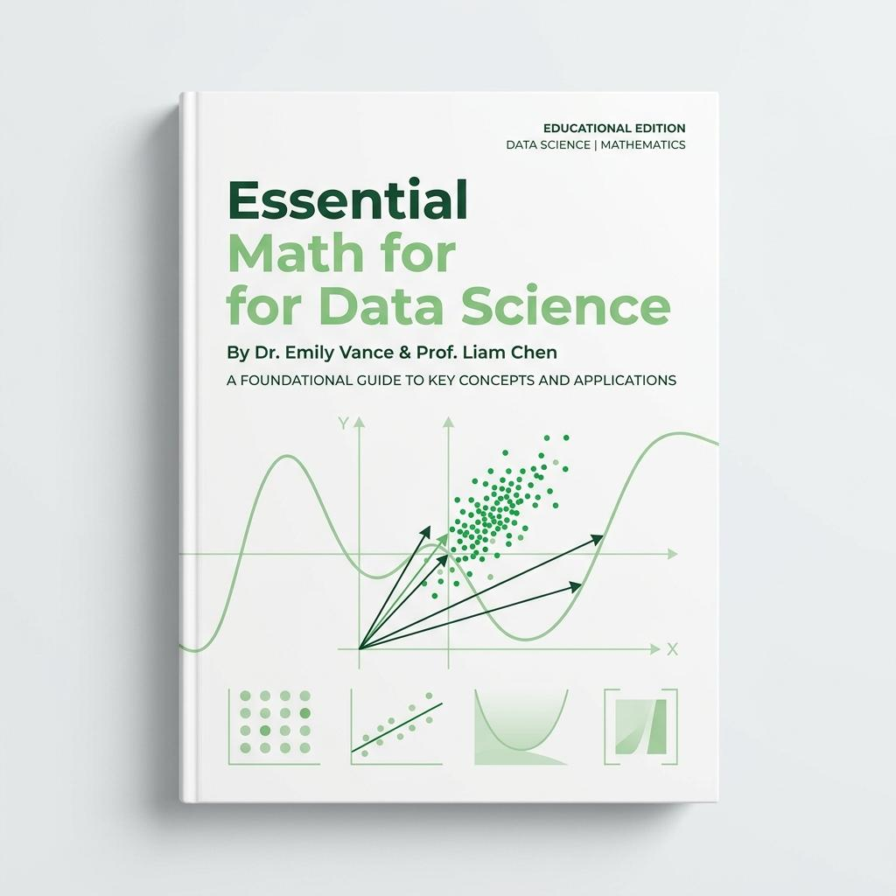
Author: Thomas Nield
Publisher: O’Reilly Media, 2022 (ISBN: 9781098102920)
Book Page: O’Reilly Book Link
Overview: This book is an exceptional, hands-on guide designed to bridge the gap between mathematical theory and data science practice. It covers linear algebra, calculus, probability, and statistics using intuitive, coordinate-free explanations and practical Python code samples.
Why Read It?: It is ideal for beginners and practitioners who want to understand why machine learning algorithms work behind the scenes, focusing on conceptual understanding before formula memorization.
2. 1001 Math Problems (2nd Edition)#
{kind=link}
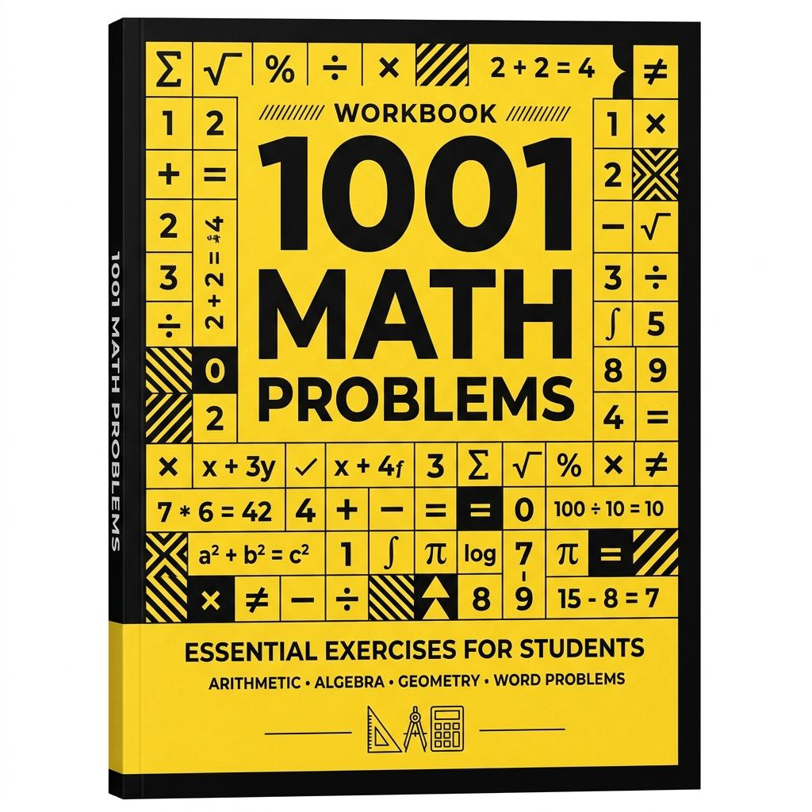
Publisher: LearningExpress, LLC
Book Page: LearningExpress Link
Overview: A comprehensive, practical workbook containing foundational mathematics problems. It guides readers through step-by-step solutions for arithmetic, basic algebra, geometry, and numerical reasoning.
Why Read It?: It is a perfect resource for building speed, confidence, and basic mathematical reasoning skills through structured practice.
3. Mathematics for Machine Learning#
{kind=link}
Authors: Marc Peter Deisenroth, A. Aldo Faisal, and Cheng Soon Ong
Publisher: Cambridge University Press, 2020 (ISBN: 9781108455145)
Official Website: mml-book.com
Overview: A highly popular textbook that provides a self-contained introduction to the mathematical tools necessary for machine learning, including linear algebra, analytic geometry, matrix decompositions, vector calculus, optimization, probability, and statistics.
Why Read It?: It connects mathematical concepts directly to machine learning algorithms like linear regression, PCA, mixture models, and SVMs.
4. An Introduction to Statistical Learning (ISL)#
{kind=link}
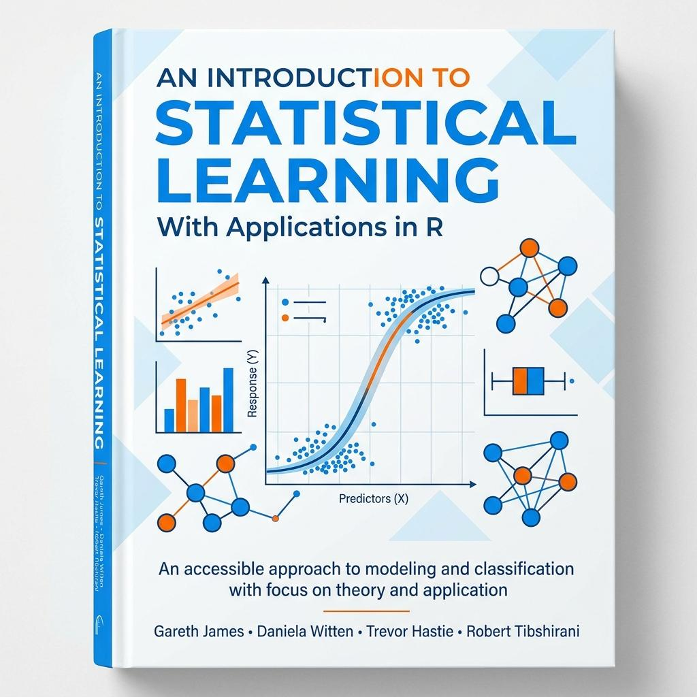
Authors: Gareth James, Daniela Witten, Trevor Hastie, and Robert Tibshirani
Publisher: Springer, 2nd Edition, 2021 (ISBN: 9781071614175)
Official Website: statlearning.com
Overview: This classic textbook (available in both R and Python versions) provides an accessible overview of the field of statistical learning, covering regression, classification, resampling, regularization, tree-based methods, SVMs, and unsupervised learning.
Why Read It?: It is the gold standard for understanding statistical machine learning concepts without getting bogged down in overly advanced math.
5. Deep Learning#
{kind=link}
Authors: Ian Goodfellow, Yoshua Bengio, and Aaron Courville
Publisher: MIT Press, 2016 (ISBN: 9780262035613)
Official Website: deeplearningbook.org
Overview: Widely regarded as the definitive textbook on deep learning theory, this book covers the mathematical foundations (linear algebra, probability, numerical computation), classical machine learning concepts, and deep network architectures (feedforward networks, CNNs, RNNs, and optimization).
Why Read It?: It provides a rigorous theoretical foundation for anyone wishing to understand the mathematics behind deep learning architectures.
6. Dive into Deep Learning (D2L)#
{kind=link}
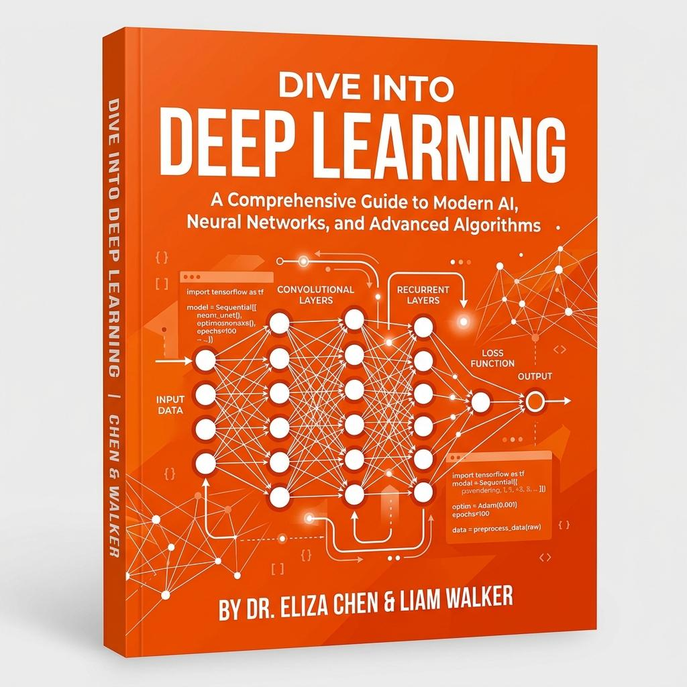
Authors: Aston Zhang, Zachary C. Lipton, Mu Li, and Alexander J. Smola
Publisher: Cambridge University Press, 2023 (ISBN: 9781009382656)
Official Website: d2l.ai
Overview: An interactive, code-first textbook that covers deep learning theory alongside fully functional code implementations in PyTorch, TensorFlow, and MXNet.
Why Read It?: Perfect for hands-on learners who want to see mathematical concepts directly translated into executable Python code and Jupyter notebooks.
7. Machine Learning (commonly known as the “Watermelon Book”)#
{kind=link}
Author: Zhou Zhihua
Publisher: Tsinghua University Press, 2016 (ISBN: 9787302423287)
Official Page: Tsinghua University Press Book Link
Overview: Written by Nanjing University Professor Zhou Zhihua, this highly popular 425-page textbook provides a comprehensive introduction to machine learning. It won the first prize of the inaugural National Excellent Teaching Materials Award (Higher Education Category), has been adopted by over 500 academic institutions, and has seen dozens of print runs.
Why Read It?: It is an incredibly well-structured, clear, and comprehensive text covering classical machine learning, ensemble methods, clustering, neural networks, and evaluation metrics.
8. Machine Learning with PyTorch and Scikit-Learn#
{kind=link}
Authors: Sebastian Raschka, Yuxi (Hayden) Liu, and Vahid Mirjalili
Publisher: Packt Publishing, 2022 (ISBN: 9781801819312)
GitHub Repository: Code and Notebooks
Overview: A comprehensive guide to building machine learning and deep learning models using PyTorch and Scikit-Learn. It bridges theory with practical coding, covering classification, regression, model evaluation, CNNs, RNNs, and transformers.
Why Read It?: Ideal for engineers seeking to transition from traditional statistical learning to deep neural networks using PyTorch.
9. Hands-on Machine Learning with Scikit-Learn, Keras, and TensorFlow (3rd Edition)#
{kind=link}
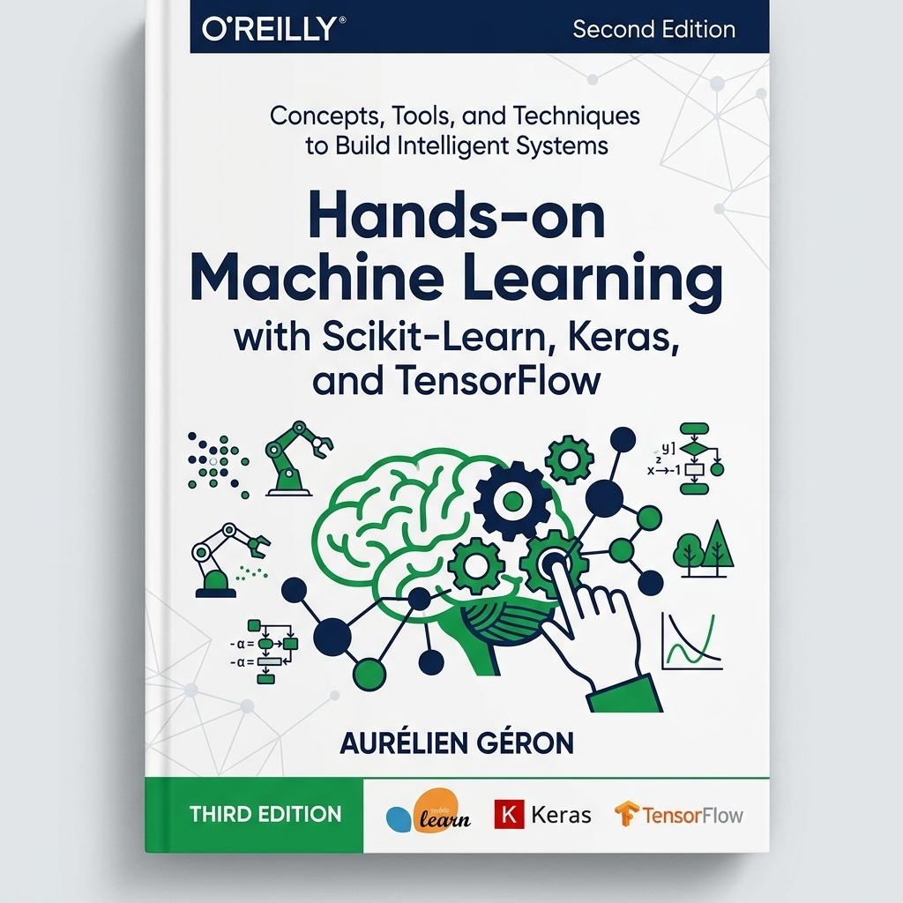
Author: Aurélien Géron
Publisher: O’Reilly Media, 2022 (ISBN: 978109825608)
GitHub Repository: Code and Notebooks
Overview: A practical, project-based guide to building machine learning systems. It starts with Scikit-Learn to cover classical models, then moves into Keras and TensorFlow to build, train, and deploy deep neural architectures.
Why Read It?: Famously clear, accessible, and packed with practical tips on hyperparameter tuning, data preprocessing, and model deployment.
10. Generative Deep Learning (2nd Edition)#
{kind=link}
Author: David Foster
Publisher: O’Reilly Media, 2023 (ISBN: 9781098134181)
GitHub Repository: Code and Notebooks
Overview: A complete guide to modern generative models. It teaches you how to design and build Variational Autoencoders (VAEs), Generative Adversarial Networks (GANs), Transformers (GPT-3), Diffusion Models, and deep reinforcement learning agents.
Why Read It?: Essential for understanding how AI systems create text, images, and music, with intuitive step-by-step PyTorch code.
11. Deep Reinforcement Learning Hands-on (2nd Edition)#
{kind=link}
Author: Maxim Lapan
Publisher: Packt Publishing, 2020 (ISBN: 9781838985103)
GitHub Repository: Code and Notebooks
Overview: A comprehensive, practical guide to deep reinforcement learning (DRL) algorithms. It covers Q-learning, deep Q-networks (DQNs), policy gradients, actor-critic methods, and applying DRL to robotics, gaming agents, and trading.
Why Read It?: The go-to reference for practical implementations of complex RL algorithms in PyTorch.
12. Build a Large Language Model (From Scratch)#
{kind=link}
Author: Sebastian Raschka
Publisher: Manning Publications, 2024 (ISBN: 9781633437166)
GitHub Repository: Code and Notebooks
Overview: A brilliant, step-by-step guide to coding and training a Generative Pre-trained Transformer (GPT) style LLM from scratch in PyTorch. It explains tokenization, self-attention mechanisms, transformer architecture, pre-training, and instruction fine-tuning.
Why Read It?: It demystifies the black box of LLMs, showing that you can write the entire architecture in standard PyTorch code.
13. Computer Vision: Algorithms and Applications (2nd Edition)#
{kind=link}
Author: Richard Szeliski
Publisher: Springer, 2022 (ISBN: 9783030349363)
Official Website: szeliski.org/Book
Overview: The definitive reference for computer vision algorithms. It covers image formation, processing, feature detection, camera geometry, 3D reconstruction, and modern deep learning-based vision systems.
Why Read It?: An essential read for understanding spatial geometry, coordinate transforms, and modern visual perception algorithms in robotics and image processing.
14. Convex Optimization#
{kind=link}
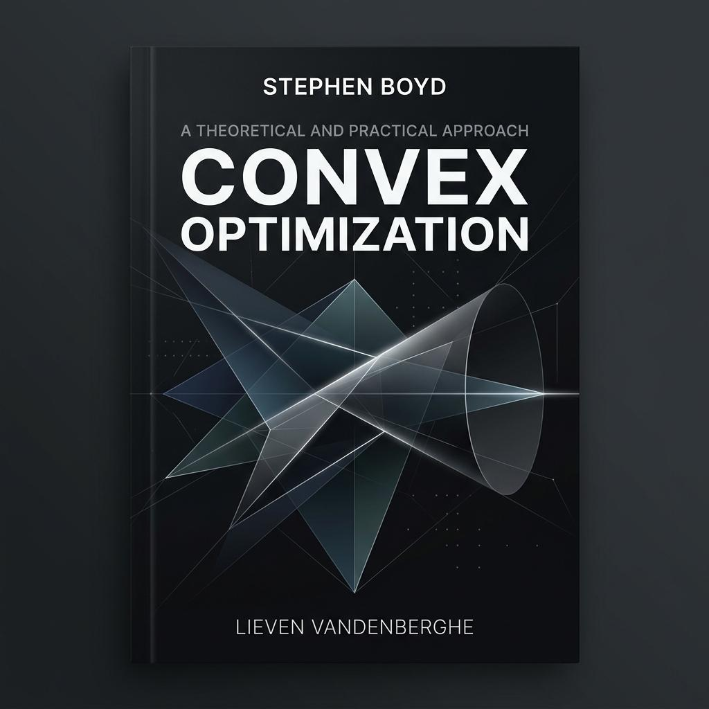
Author: Stephen Boyd and Lieven Vandenberghe
Publisher: Cambridge University Press, 2004 (ISBN: 9780521833783)
Official Website: EE364a Stanford Course Page
Overview: The absolute gold standard textbook for convex optimization theory, algorithms, and applications. It provides a detailed, rigorous treatment of convex sets, convex functions, standard problem classes (LP, QP, SOCP, SDP, GP), duality, and numerical methods like Newton’s method and interior-point methods.
Why Read It?: The definitive theoretical reference for understanding optimal decision-making, robust engineering design, and modern machine learning formulations.
15. Computational Topology for Data Analysis#
{kind=link}
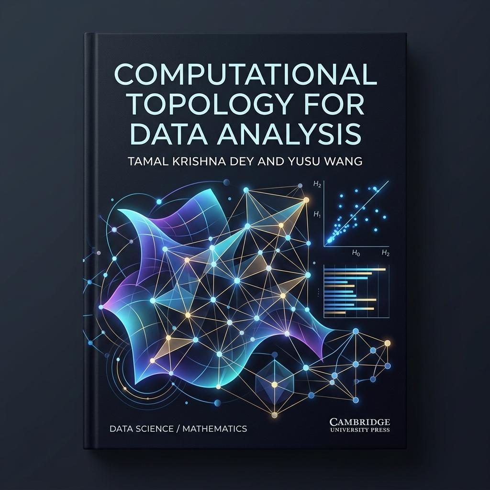
Author: Tamal Krishna Dey and Yusu Wang
Publisher: Cambridge University Press, 2022 (ISBN: 9781108422741)
Official Website: Cambridge Book Page
Overview: A comprehensive and modern introduction to the computational and algorithmic aspects of topology, focusing specifically on topological data analysis (TDA). It covers simplicial complexes, homology, persistent homology, barcodes, and their applications in analyzing shape and structure in high-dimensional datasets.
Why Read It?: Essential for understanding how abstract topological structures are computed algorithmically and applied to extract robust, noise-resistant features from data.
Download PDF Version#
You can download the complete Math for Data Science book as a single offline PDF file.
📥 Download Link#
Click the link below to download the complete book:
📖 PDF Features#
Single-page layout containing all chapters of this blog.
Ready for offline reading and printing.
Standard A4 format with margins optimized for tablet or paper reading.